Сентябрь 2023
Читальный зал
Книги
 Приношение С. В. Рахманинову : к 150-летию со дня рождения : исследования разных лет : [сборник] / сост. В. Б. Валькова; ред.коллегия: А.С. Рыжинский [и др.]. - Москва : Российская академия музыки имени Гнесиных, 2023. - 489, [1] с., [4] л. ил. : ил., нот., цв. ил.
Приношение С. В. Рахманинову : к 150-летию со дня рождения : исследования разных лет : [сборник] / сост. В. Б. Валькова; ред.коллегия: А.С. Рыжинский [и др.]. - Москва : Российская академия музыки имени Гнесиных, 2023. - 489, [1] с., [4] л. ил. : ил., нот., цв. ил.
Чит. з. 785.1 П-767
 Наумов, Александр Владимирович.
Наумов, Александр Владимирович.Московский Художественный театр в поисках музыки, 1919-1926 : строфы и антистрофы : [документированное исследование] / [Наумов А. В.]. - Москва : "Сам полиграфист", 2023. - 541, [2] с. : ил., нот., факс.
Чит. з., ИБО 784.315 Н-342
 Арджуна Кришна дас.
Арджуна Кришна дас.Киртана-раса : методическое руководство по формированию группы киртана с музыкальной грамотой и нотными партитурами / Арджуна Кришна дас. - Тюмень : ТК Вертикаль, 2023. - 307, [2] с. : ил., нот., портр. - (Движение санкиртаны). На контртитуле авт.: Арджуна Кришна дас (Алексей Леонидович Саверский).
Чит. з. 781.1 А-799
 Коляденко, Нина Павловна.
Коляденко, Нина Павловна.Философия науки и искусства : учебное пособие для магистрантов музыкальных вузов / Н. П. Коляденко; Министерство культуры Российской Федерации, Новосибирская государственная консерватория имени М. И. Глинки. - Новосибирск : НГОНБ, 2023. - 154, [1] с. Библиогр.: с. 152-153.
Абон., Чит. з. 781.1 К-629
 Павлова-Борисова, Татьяна Владимировна.
Павлова-Борисова, Татьяна Владимировна.Музыкальная культура народов Севера : учебное пособие / Т. В. Павлова-Борисова. - Якутск : Издательский дом Северо-Восточного федерального ун-та, 2022. - 91, [1] с. : ил., нот., фот.
Чит. з. 788.22 П-121
 Чергеев, Асан Айдерович.
Чергеев, Асан Айдерович.Курс чтения хоровых партитур : учебное пособие / Чергеев А. А., Алиева З.; Крымский инженерно-педагогический университет имени Февзи Якубова". - Симферополь : ИП Хотеева Л. В., 2022. - 175 с. : нот. Библиогр.: с. 169-171.
Чит. з. 787.26 Ч-457
 Афонин, Геннадий Александрович.
Афонин, Геннадий Александрович.Дирижирование: музыкальный анализ произведений и дирижерская аппликатура : учебно-методическое пособие : для студентов и преподавателей музыкальных и музыкально-педагогических факультетов вузов / Г. А. Афонин; Московский государственный институт культуры. - Москва : Ритм, 2023. - 23 с. : нот.
Чит. з. 781.511 А-946
 Данилова, Дарья Викторовна.
Данилова, Дарья Викторовна.Синестетический подход в развитии самовыражения учащихся музыкальных школ : [монография] / Д. В. Данилова; науч. рук. Э.Э. Пурик; Башкирский государственный педагогический университет имени М. Акмуллы. - Воронеж : АртПринт, 2023. - 159 с. : ил., нот., фот. Библиогр.: с. 71-75.
Чит. з. 789.31 Д-183
 Вокально-хоровое искусство и образование: вчера, сегодня, завтра : сборник методических материалов / [сост. Т.А. Жданова]; Центр творческого развития и музыкально-эстетического образования детей и юношества "Радость". - Москва : Радость, 2017 -
Вып. 3: II Международная методическая хоровая ассамблея ХОРЭКСПО-2017. - 2017. - 107, [2] с. : нот.
Прил.
Вокально-хоровое искусство и образование: вчера, сегодня, завтра : сборник методических материалов / [сост. Т.А. Жданова]; Центр творческого развития и музыкально-эстетического образования детей и юношества "Радость". - Москва : Радость, 2017 -
Вып. 3: II Международная методическая хоровая ассамблея ХОРЭКСПО-2017. - 2017. - 107, [2] с. : нот.
Прил.
Чит. з. 787.2 В-66
 Вокально-хоровое искусство и образование: вчера, сегодня, завтра : сборник методических материалов / [сост. Т.А. Жданова]; Центр творческого развития и музыкально-эстетического образования детей и юношества "Радость". - Москва : Радость, 2017 -
Вып. 4: IV Всероссийская хоровая ассамблея / [сост. Т.А. Жданова]. - 2018. - 159, [2] с. : нот.
Вокально-хоровое искусство и образование: вчера, сегодня, завтра : сборник методических материалов / [сост. Т.А. Жданова]; Центр творческого развития и музыкально-эстетического образования детей и юношества "Радость". - Москва : Радость, 2017 -
Вып. 4: IV Всероссийская хоровая ассамблея / [сост. Т.А. Жданова]. - 2018. - 159, [2] с. : нот.
Чит. з. 787.2 В-66
 Виктор Голиков. По зову души.. : [буклет] / [гл. ред. Т.А. Жданова]. - Москва : Радость, 2023 (Москва : тип. им. Ив. Федорова, 2023). - 30, [3] с. : ил., фот., портр., цв. ил.
Авт. нот. изд. В. Голикова: с. 46-48, книги В. Голикова: с. 49. - Тит. с. нет, опис. сост. по обл.
Виктор Голиков. По зову души.. : [буклет] / [гл. ред. Т.А. Жданова]. - Москва : Радость, 2023 (Москва : тип. им. Ив. Федорова, 2023). - 30, [3] с. : ил., фот., портр., цв. ил.
Авт. нот. изд. В. Голикова: с. 46-48, книги В. Голикова: с. 49. - Тит. с. нет, опис. сост. по обл.
Чит. з. 785.1 Г-604
 Александр Жаров. Призвание - музыка : [сборник : буклет]. - Москва : Радость, [2023?]. - 56 с. : цв. ил., портр.
Авт. изд. А. Жарова: с. 42, публ. произв. А. Жарова в сб.: с. 43-45. - Тит. с. нет, опис. сост. по обл.
Александр Жаров. Призвание - музыка : [сборник : буклет]. - Москва : Радость, [2023?]. - 56 с. : цв. ил., портр.
Авт. изд. А. Жарова: с. 42, публ. произв. А. Жарова в сб.: с. 43-45. - Тит. с. нет, опис. сост. по обл.
Чит. з. 785.1 Ж-356
 Чурашов, Андрей Геннадьевич.
Чурашов, Андрей Геннадьевич.Искусство хореографии как синергетический фактор развития эстетической культуры личности: монография / А. Г. Чурашов. - Челябинск : Южно-Уральский научный центр РАО, 2023. - 141 с. : ил., фот., цв. ил. Библиогр.: с. 131-141. - Тит. с. парал. рус., англ.
Чит. з. 784.314 Ч-93
 Сузукей, Валентина Юрьевна.
Сузукей, Валентина Юрьевна.Тувинская музыка : [монография] / В.Ю. Сузукей; ФГБОУ ВО "Тувинский государственный университет". Исторический факультет, кафедра философии. - Кызыл : ТувГУ, 2022. - 268 с. : ил., цв. ил. Литература: с. 256-260; дискография: с. 261-264.
Чит. з. 788.22 С-893
 Плюснин, Алексей Дмитриевич.
Плюснин, Алексей Дмитриевич.Как захочешь, так и было : [сборник автобиографических эссе] / Алексей Плюснин. - Москва : Выргород, 2023. - 237, [2] с., [16] л. ил. : фот., цв. ил.
Чит. з. 785.1 П-405
 Картушина, Марина Юрьевна.
Картушина, Марина Юрьевна.Вокально-хоровая работа в детском саду / М. Ю. Картушина. - Москва : Скрипторий 2003, 2023. - 174, [1] с. : ил., нот. Библиогр.: с. 173-174.
Чит. з.
 Зорин, Сергей Михайлович.
Зорин, Сергей Михайлович.Музыкальная светоживопись : история одной жизни, посвященной реализации мечты / Сергей Зорин. - Москва : Издательский дом ЯСК, 2023. - 182, [1] с. : ил., фот., цв. ил. Библиогр.: с. 182-183.
Чит. з. 782.91 З-862, 783.8 З-862
 Лопатова, Екатерина Сергеевна.
Лопатова, Екатерина Сергеевна.Региональные традиции академического исполнительства на домре в России : (на материале Среднего, Нижнего Поволжья и Урала) / Е.С. Лопатова. - Саратов : Саратовская государственная консерватория (академия) имени Л.В. Собинова, 2023. - 185 с. : ил., нот., фот. Библиогр.: с. 128-146.
Чит. з. 781.58 Л-771
 Слово молодых ученых: актуальные вопросы искусствознания : сборник статей по материалам XXII Всероссийской научно-практической конференции аспирантов и студентов с международным участием, 17-21 апреля 2023 года / ред. коллегия: Полозова И. В. - Саратов : Саратовская государственная консерватория имени Л.В. Собинова, 2023. - 529 с. : ил., нот.
Слово молодых ученых: актуальные вопросы искусствознания : сборник статей по материалам XXII Всероссийской научно-практической конференции аспирантов и студентов с международным участием, 17-21 апреля 2023 года / ред. коллегия: Полозова И. В. - Саратов : Саратовская государственная консерватория имени Л.В. Собинова, 2023. - 529 с. : ил., нот.
Чит. з. 780.8 С-483
 Гусейнова, Зивар Махмудовна.
Гусейнова, Зивар Махмудовна.Теоретические лабиринты "Книги, глаголемой кокизы.." : (по рукописи РГБ собрания Одоевского № 1) : [исследование] / З.М. Гусейнова, Санкт-Петербургская государственная консерватория им. Н.А. Римского-Корсакова. - Санкт-Петербург : Скифия-принт, 2023. - 318 с. : ил. Библиогр.: с. 241-258. - Спис. рукописей: с. 259-260.
Чит. з. 784.2(47)21 Г-963
 Кирпич, Даша.
Кирпич, Даша.Самоучитель по укулеле: играем и поем (аккомпанемент) / Даша Кирпич. - Москва : Эксмо, Бомбора, 2023. - 137, [6] с. : ил., фот., цв. ил. - (Подарочные издания. Самоучители). На обл.: иллюстратор: Nata Smith. - Словарь терминов: с. 137-138.
Чит. з. 781.58 К-434
 "И звенит серебро северянинских строк.." : сборник / [сост. Н.Н. Хазова; под ред. Н.Т. Батуриной]. - Череповец : Череповецкая полиграфическая компания, 2022. - 287 с. : суперобложка : ил., нот., цв. ил., портр. - (Игорь Северянин. Поэтический брендбук).
Библиогр. в тексте.
"И звенит серебро северянинских строк.." : сборник / [сост. Н.Н. Хазова; под ред. Н.Т. Батуриной]. - Череповец : Череповецкая полиграфическая компания, 2022. - 287 с. : суперобложка : ил., нот., цв. ил., портр. - (Игорь Северянин. Поэтический брендбук).
Библиогр. в тексте.
Чит. з. 785.3 И-11
 Юнусова, Гузель Файзрахмановна.
Юнусова, Гузель Файзрахмановна.Мир музыки : сборник статей и материалов / Г. Ф. Юнусова. - Казань : Ин-т языка, литературы и искусства им. Г.Ибрагимова, 2022. - 333, [2] с., [8] л. ил. : нот., фот., портр. Библиогр. в конце ст., список публ. Г. Ф. Юнусовой: с. 328-333.
Чит. з. 781 Ю-564, 780.8 Ю-564
 Сторона моя, сторонка.. : этнокультурные особенности Воронежского края: народные песни / ред.-сост. Г.Я. Сысоева; ред. В.Е. Новохатский; рук. изд. проекта И.А. Щёлоков. - Воронеж : Журнал "Подъём", 2021. - 286, [1] с., [6] л. ил. : фот., нот., портр., цв. ил.
Над загл.: Подъём регион (приложение к литературно-художественному журналу "Подъём").
Сторона моя, сторонка.. : этнокультурные особенности Воронежского края: народные песни / ред.-сост. Г.Я. Сысоева; ред. В.Е. Новохатский; рук. изд. проекта И.А. Щёлоков. - Воронеж : Журнал "Подъём", 2021. - 286, [1] с., [6] л. ил. : фот., нот., портр., цв. ил.
Над загл.: Подъём регион (приложение к литературно-художественному журналу "Подъём").
Чит. з. 788.22 С-823
 Гуляницкая, Наталья Сергеевна.
Гуляницкая, Наталья Сергеевна.Методы науки о музыке : [исследование] / Н.С. Гуляницкая. - Москва : Музыка, 2015. - 254, [1] с. : нот. Предисл., прил.: с. 244-252 (Наука о церковно-русском пении).
Абон., Чит. з. 782.02 Г-944, 781.10 Г-944
 Орган и клавесин в оркестре : учебная программа дисциплины "Искусство концертного исполнительства. Орган, клавесин, исторический клавир" / разраб. Д.В. Диановым. - Москва : Научно-издательский центр "Московская консерватория", 2023. - 33, [1] с. : ил., табл.
Список учебной литературы: с. 16-33.
Орган и клавесин в оркестре : учебная программа дисциплины "Искусство концертного исполнительства. Орган, клавесин, исторический клавир" / разраб. Д.В. Диановым. - Москва : Научно-издательский центр "Московская консерватория", 2023. - 33, [1] с. : ил., табл.
Список учебной литературы: с. 16-33.
Чит. з., ИБО, Хран., Абон. 780.621.1 О-64
 Камерный ансамбль (клавесин) : учебная программа дисциплины Искусство концертного исполнительства. Орган, клавесин, исторический клавир / разраб. О.В. Мартыновой, Ю.В. Мартыновым. - Москва : Научно-издательский центр "Московская консерватория", 2023. - 26, [1] с. : ил.
Библиогр.: с. 13-19.
Камерный ансамбль (клавесин) : учебная программа дисциплины Искусство концертного исполнительства. Орган, клавесин, исторический клавир / разраб. О.В. Мартыновой, Ю.В. Мартыновым. - Москва : Научно-издательский центр "Московская консерватория", 2023. - 26, [1] с. : ил.
Библиогр.: с. 13-19.
Чит. з., ИБО, Хран., Абон. 780.621.5 К-181
 Сергей Рахманинов в культуре России : к 150-летию С. В. Рахманинова и 55-летию Ростовской консерватории : [сборник статей по материалам Всероссийской научной конференции, Ростов-на-Дону, 23-25 ноября 2022 г.] / ред.-сост. А.В. Крылова, науч. ред. Н.В. Дуда. - Ростов-на-Дону : Изд-во Ростовской гос. консерватории, 2023. - 239 с. : ил., фот., нот., цв. ил.
Сергей Рахманинов в культуре России : к 150-летию С. В. Рахманинова и 55-летию Ростовской консерватории : [сборник статей по материалам Всероссийской научной конференции, Ростов-на-Дону, 23-25 ноября 2022 г.] / ред.-сост. А.В. Крылова, науч. ред. Н.В. Дуда. - Ростов-на-Дону : Изд-во Ростовской гос. консерватории, 2023. - 239 с. : ил., фот., нот., цв. ил.
Чит. з. 785.1 Р-273
 Казиник, Михаил Семенович.
Казиник, Михаил Семенович.Погружение в музыку, или Тайны гениев-2 / Михаил Казиник. - Москва : АСТ, 2023. - 314, [1] с., [8] л. ил. : ил., портр., фот., цв. ил. - (Тайны гениев).
Чит. з. 784 К-147, 785.2 К-147
 Ремизова, Эмилия Евгеньевна.
Ремизова, Эмилия Евгеньевна.Полный курс гармонии : вся теория с упражнениями и шпаргалками : вся теория с упражнениями и примерами / Э. Е. Ремизова. - Москва : АСТ; Lingua, 2023. - 60, [3] с. : нот. - (Музыкальная школа). Загл. обл.: Полный курс гармонии : вся теория с упражнениями и шпаргалками.
Чит. з. 782.21 Р-38
 Ремизова, Эмилия Евгеньевна.
Ремизова, Эмилия Евгеньевна.Полный курс гармонии : вся теория с упражнениями и шпаргалками : вся теория с упражнениями и примерами / Э. Е. Ремизова. - Москва : АСТ, Lingua, 2023. - 60, [3] с. : нот. - (Музыкальная школа). Загл. обл.: Гармония. Полный курс : вся теория с упражнениями и примерами.
> Чит. з. 782.21 Р-38
 Мошков, Кирилл Владимирович.
Мошков, Кирилл Владимирович.Джаз 100 : столетие российской джазовой сцены, 1922-2022 / Кирилл Мошков. - Санкт-Петербург : Летопись, 2023. - 599 с. : ил., фот. Библиогр.: с. 597-599.
Чит. з. 784.3 М-873, 785.2 М-873
 Венедиктов, Геннадий Львович.
Венедиктов, Геннадий Львович."Прощание славянки" Василия Агапкина и "На сопках Маньчжурии" Ильи Шатрова : два великих произведения, два великих композитора / Геннадий Венедиктов. - Санкт-Петербург : Лайка, 2023. - 119 с. : ил., портр., фот., цв. ил. Текст частично на англ. яз.: перевод "Прощание славянки" и "На сопках Маньчжурии".
Абон., Чит. з. 785.2 В-291
 Музыкальная культура и образование : инновационные пути развития : материалы VIII международной научно-практической конференции [6 апреля 2023 г.] / [под науч. ред. С.А. Томчук], ФГБОУ ВО "Ярославский государственный педагогический университет им. К.Д. Ушинского". - Ярославль : РИО ЯГПУ, 2023. - 218 с. : нот.
Библиогр. в конце ст. - Свед. об авт.
Музыкальная культура и образование : инновационные пути развития : материалы VIII международной научно-практической конференции [6 апреля 2023 г.] / [под науч. ред. С.А. Томчук], ФГБОУ ВО "Ярославский государственный педагогический университет им. К.Д. Ушинского". - Ярославль : РИО ЯГПУ, 2023. - 218 с. : нот.
Библиогр. в конце ст. - Свед. об авт.
Чит. з. 789 М-897
 Авинский, Игорь Анатольевич.
Авинский, Игорь Анатольевич.Балалаечники, домристы Кубани : справочник : творческие портреты / И. Авинский; [предисл. А.А. Горбачева]. - Краснодар : "Экоинвест", 2022. - 228 с. : портр., цв. портр. Памяти Анатолия Ивановича Пересады. - Список осн. сокр.: с. 222-224.
Чит. з. 785.2 А-204, 780.12 А-204
 Диалог искусств и арт-парадигм : статьи, очерки, материалы / [ред.-сост. А.И. Демченко]. - Саратов : Саратовская государственная консерватория, 2018 -
Т. 49: По материалам X Международного форума, 30 декабря 2022 года. Грандиозный эксперимент XX века: pro et contra : (к 100-летию образования СССР и 30-летию его распада). - 2023. - 311 с. : нот., фот., портр.
Диалог искусств и арт-парадигм : статьи, очерки, материалы / [ред.-сост. А.И. Демченко]. - Саратов : Саратовская государственная консерватория, 2018 -
Т. 49: По материалам X Международного форума, 30 декабря 2022 года. Грандиозный эксперимент XX века: pro et contra : (к 100-летию образования СССР и 30-летию его распада). - 2023. - 311 с. : нот., фот., портр.
Чит. з. 780.8 Д-44
 Диалог искусств и арт-парадигм : статьи, очерки, материалы / [ред.-сост. А.И. Демченко]. - Саратов : Саратовская государственная консерватория, 2018 -
Т. 50: По материалам X Международного форума, 30 декабря 2022 года. Грандиозный эксперимент XX века: pro et contra : (к 100-летию образования СССР и 30-летию его распада). - 2023. - 356 с. : нот., фот., портр.
Диалог искусств и арт-парадигм : статьи, очерки, материалы / [ред.-сост. А.И. Демченко]. - Саратов : Саратовская государственная консерватория, 2018 -
Т. 50: По материалам X Международного форума, 30 декабря 2022 года. Грандиозный эксперимент XX века: pro et contra : (к 100-летию образования СССР и 30-летию его распада). - 2023. - 356 с. : нот., фот., портр.
Чит. з. 780.8 Д-44
 Диалог искусств и арт-парадигм : статьи, очерки, материалы / [ред.-сост. А.И. Демченко]. - Саратов : Саратовская государственная консерватория,
Т. 51: По материалам X Международного форума, 30 декабря 2022 года. Грандиозный эксперимент XX века: pro et contra : (к 100-летию образования СССР и 30-летию его распада). - 2023. - 345 с. : ил., нот., фот., портр.
Диалог искусств и арт-парадигм : статьи, очерки, материалы / [ред.-сост. А.И. Демченко]. - Саратов : Саратовская государственная консерватория,
Т. 51: По материалам X Международного форума, 30 декабря 2022 года. Грандиозный эксперимент XX века: pro et contra : (к 100-летию образования СССР и 30-летию его распада). - 2023. - 345 с. : ил., нот., фот., портр.
Чит. з. 780.8 Д-44
 Диалог искусств и арт-парадигм : статьи, очерки, материалы / [ред.-сост. А.И. Демченко]. - Саратов : Саратовская государственная консерватория, 2018 -
Т. 52: По материалам X Международного форума, 30 декабря 2022 года. Грандиозный эксперимент XX века: pro et contra : (к 100-летию образования СССР и 30-летию его распада). - 2023. - 403 с. : ил., нот., фот., портр.
Диалог искусств и арт-парадигм : статьи, очерки, материалы / [ред.-сост. А.И. Демченко]. - Саратов : Саратовская государственная консерватория, 2018 -
Т. 52: По материалам X Международного форума, 30 декабря 2022 года. Грандиозный эксперимент XX века: pro et contra : (к 100-летию образования СССР и 30-летию его распада). - 2023. - 403 с. : ил., нот., фот., портр.
Чит. з. 780.8 Д-44
 Диалог искусств и арт-парадигм : статьи, очерки, материалы / [ред.-сост. А.И. Демченко]. - Саратов : Саратовская государственная консерватория, 2018 -
Т. 53: По материалам X Международного форума 30 декабря 2022 года. Грандиозный эксперимент XX века: pro et contra : (к 100-летию образования СССР и 30-летию его распада). - 2023. - 371 с. : ил., нот., фот., портр.
Диалог искусств и арт-парадигм : статьи, очерки, материалы / [ред.-сост. А.И. Демченко]. - Саратов : Саратовская государственная консерватория, 2018 -
Т. 53: По материалам X Международного форума 30 декабря 2022 года. Грандиозный эксперимент XX века: pro et contra : (к 100-летию образования СССР и 30-летию его распада). - 2023. - 371 с. : ил., нот., фот., портр.
Чит. з. 780.8 Д-44
 Диалог искусств и арт-парадигм : статьи, очерки, материалы / [ред.-сост. А.И. Демченко]. - Саратов : Саратовская государственная консерватория (академия) имени Л.В. Собинова, 2018 -
Т. 54: По материалам X Международного форума "Scienceforum pan-art X", 30 декабря 2022 года. Художественная картина мира. - 2023. - 371 с. : ил., нот., фот.
Диалог искусств и арт-парадигм : статьи, очерки, материалы / [ред.-сост. А.И. Демченко]. - Саратов : Саратовская государственная консерватория (академия) имени Л.В. Собинова, 2018 -
Т. 54: По материалам X Международного форума "Scienceforum pan-art X", 30 декабря 2022 года. Художественная картина мира. - 2023. - 371 с. : ил., нот., фот.
Чит. з. 780.8 Д-44
 Диалог искусств и арт-парадигм : статьи, очерки, материалы / [ред.-сост. А.И. Демченко]. - Саратов : Саратовская государственная консерватория (академия) имени Л.В. Собинова, 2018 -
Т. 55: По материалам X Международного форума "Scienceforum pan-art X", 30 декабря 2022 года. Художественная картина мира. - 2023. - 351 с. : ил., нот., фот.
Диалог искусств и арт-парадигм : статьи, очерки, материалы / [ред.-сост. А.И. Демченко]. - Саратов : Саратовская государственная консерватория (академия) имени Л.В. Собинова, 2018 -
Т. 55: По материалам X Международного форума "Scienceforum pan-art X", 30 декабря 2022 года. Художественная картина мира. - 2023. - 351 с. : ил., нот., фот.
Чит. з. 780.8 Д-44
 Диалог искусств и арт-парадигм : статьи, очерки, материалы / [ред.-сост. А.И. Демченко]. - Саратов : Саратовская государственная консерватория (академия) имени Л.В. Собинова, 2018 -
Т. 56: По материалам X Международного форума "Scienceforum pan-art X", 30 декабря 2022 года : к 80-летию со дня рождения А.И. Демченко. - 2023. - 499 с. : ил., фот.
Диалог искусств и арт-парадигм : статьи, очерки, материалы / [ред.-сост. А.И. Демченко]. - Саратов : Саратовская государственная консерватория (академия) имени Л.В. Собинова, 2018 -
Т. 56: По материалам X Международного форума "Scienceforum pan-art X", 30 декабря 2022 года : к 80-летию со дня рождения А.И. Демченко. - 2023. - 499 с. : ил., фот.
Чит. з. 780.8 Д-44
 Покровский, Андрей Викторович.
Покровский, Андрей Викторович.Русская вокальная школа : [монография] / Андрей Покровский. - Санкт-Петербург : Страта, 2023. - 422 с. : нот., ил. Библиогр.: с. 413-421.
Абон., Чит. з. 787.1 П-487
 Римский-Корсаков, Николай Андреевич.
Снегурочка : [(весенняя сказочка) : опера в 4 действиях с прологом : либретто] / Н.А. Римский-Корсаков; [либретто по одноимённой пьесе А.Н. Островского, вступ. ст. Н. Александровой]. - Санкт-Петербург : Москва; Краснодар : Лань; Планета музыки, 2015. - 77, [1] с. - (Оперные либретто). - (Мир культуры, истории и философии).
Римский-Корсаков, Николай Андреевич.
Снегурочка : [(весенняя сказочка) : опера в 4 действиях с прологом : либретто] / Н.А. Римский-Корсаков; [либретто по одноимённой пьесе А.Н. Островского, вступ. ст. Н. Александровой]. - Санкт-Петербург : Москва; Краснодар : Лань; Планета музыки, 2015. - 77, [1] с. - (Оперные либретто). - (Мир культуры, истории и философии).
Чит. з. 785.11 Р-515
Ноты
 Ду Минсинь.
Ду Минсинь.Ode to the Great Wall : the symphony : [for large orchestra : ок. 2001] / Du Mingxin. - [Score]. - Shanghai : People's music publishing house, 2018. - [4], 91, [2] c. : портр. - (Selected works of Du Mingxin). Пер. загл.: Ода Великой стене. Крат. биогр. данные и сведения о соч. в начале и конце тома. - На кит. и англ. яз.
Чит. з. П О-22
 Ду Минсинь.
Ду Минсинь.Tour of Xinjiang : suite for violin [a. orchestra] / Du Mingxin. - [Score]. - Shanghai : People's music publishing house, 2019. - [3], 162, [1] c. : портр. - (Selected works of Du Mingxin). Пер. загл.: Турне по Синьцзяну. Крат. биогр. данные и сведения о соч. в начале и конце тома. - На кит. и англ. яз.
Чит. з. П(скр) Т-79
 Ду Минсинь.
Ду Минсинь.[Концерт № 3 (фп., орк.)] Piano concerto N 3 : dedicated to the Island of Gulangyu : [for symphonic orchestra] / Du Mingxin. - [Score]. - Shanghai : People's music publishing house, 2019. - [2], 108, [1] c. : портр. - (Selected works of Du Mingxin). Крат. биогр. данные и сведения о соч. в начале и конце тома. - На кит. и англ. яз.
Чит. з. П(фп) С-74
 Ду Минсинь.
Ду Минсинь.The spring of China. Ode to the Yellow river : symphonic preludes : [for large orchestra] / Du Mingxin. - [Score]. - Shanghai : People's music publishing house, 2019. - [3], 96, [1] c. : портр. - (Selected works of Du Mingxin). Пер. загл.: 1. Китайская весна. 2. Ода Желтой реке Крат. биогр. данные и сведения о соч. - На кит. и англ. яз.
Чит. з. ПС S-79
 Ду Минсинь.
Ду Минсинь.Memory of the sunshine : symphonic poem [for large orchestra] / Du Mingxin. - [Score]. - Shanghai : People's music publishing house, 2018. - [3], 75, [2] c. : портр. - (Selected works of Du Mingxin). Пер. загл.: Воспоминание о солнечном свете. Крат. биогр. данные и сведения о соч. в начале и конце тома. - На кит. и англ. яз.
Чит. з. П M-54
 Ду Минсинь.
Ду Минсинь.Longing for the dear ones in autumn [and others works] : symphony [for large orchestra] / Du Mingxin. - [Score]. - Shanghai : People's music publishing house, 2019. - [2], 86, [1] c. : портр. - (Selected works of Du Mingxin). Пер. загл.: Тоска по близким осенью. Крат. биогр. данные и сведения о соч. - На кит. и англ. яз.
Чит. з. ПС L-87
 Люлли, Жан Батист.
Люлли, Жан Батист.[Собрание сочинений] Oeuvres completes : edition critique en 39 vol. / J. Lully; edite par l'Association Lully. - Hildesheim; Zurich; New York : Georg Olms Verlag, 2001--- . Ser. 3, vol. 4: Thesee : tragedie en musique. Reduction clavier-chant. - 2012. - 309 c. Пер. загл.: Тезей. Лит. текст на фр. яз. Предисл. фр., англ., нем.
Чит. з. СС III, 4
 Люлли, Жан Батист.
Люлли, Жан Батист.[Собрание сочинений] Oeuvres completes : edition critique en 39 vol. / J. Lully; edite par l'Association Lully. - Hildesheim; Zurich; New York : Georg Olms Verlag, 2001--- . Ser. 3, vol. 6: Isis : tragedie en musique. Reduction chant et piano. - 2015. - 357 c. Пер. загл.: Изида. Лит. текст на фр. яз. Предисл. фр., англ., нем.
Чит. з. СС III, 6
 Люлли, Жан Батист.
Люлли, Жан Батист.Oeuvres completes : edition critique en 39 vol. - Hildesheim; Zurich; New York : Georg Olms Verlag, 2001--- . Ser. 4, vol. 3: Miserere. Benedictus. Dies irae : motets.Reduction chant et piano. - 2017. - 205 c. Пер. загл.: мотеты для большого хора на 3-5 голосов c добавлением фп. Лит. текст на лат. яз. Предисл. фр., англ., нем.
Чит. з. СС IV, 3
 Люлли, Жан Батист.
Люлли, Жан Батист.Oeuvres completes : edition critique en 39 vol. - Hildesheim; Zurich; New York : Georg Olms Verlag, 2001--- . Ser. 2, vol. 2: Les plaisirs de l'ile enchante (La princesse d'Elide). - Reduction clavier-chant. - 2014. - 131 c. Пер. загл.: Развлечения волшебного острова (Принцесса Элиды); Жорж Данден, или Одураченный муж.
Чит. з. СС II, 2
 Ду Минсинь.
Ду Минсинь.The symphony of youngsters : [for large orchestra] / Du Mingxin. - [Score]. - Shanghai : People's music publishing house, 2019. - [4], 91, [1] c. : портр. - (Selected works of Du Mingxin). Пер. загл.: Симфония молодежи. Крат. биогр. данные и сведения о соч. в начале и конце тома. - На кит. и англ. яз.
Чит. з. П S-98
 Ду Минсинь.
Ду Минсинь.Yunnan, the beautiful place under Heaven : symphonic suite [for large orchestra] / Du Mingxin. - [Score]. - Shanghai : People's music publishing house, 2018. - [4], 124, [2] c. : портр. - (Selected works of Du Mingxin). Пер. загл.: Юньнань, прекрасное место под небесами.
Чит. з. П Y-94
 Ду Минсинь.
Ду Минсинь.Phoenix nirvana : symphonic fantasia [for large orchestra] / Du Mingxin. - [Score]. - Shanghai : People's music publishing house, 2018. - [3], 76, [1] c. : портр. - (Selected works of Du Mingxin). Пер. загл.: Феникс - нирвана. Крат. биогр. данные и сведения о соч. в начале и конце тома. - На кит. и англ. яз.
Чит. з. П Р-58
 Ду Минсинь.
Ду Минсинь.[Концерт № 2 (скр., орк.)] Violin concerto N 2 : [for violin a. symphonic orchestra] / Du Mingxin. - [Score]. - Shanghai : People's music publishing house, 2019. - [3], 76, [1] c. : портр. - (Selected works of Du Mingxin). Крат. биогр. данные и сведения о соч. в начале и конце тома. - На кит. и англ. яз.
Чит. з. П(скр) С-74
 Ду Минсинь.
Ду Минсинь.[Концерт № 1 (скр., орк.)] Violin concerto N 1 : [for violin a. symphonic orchestra] / Du Mingxin. - [Score]. - Shanghai : People's music publishing house, 2018. - [3], 92, [2] c. : портр. - (Selected works of Du Mingxin). Крат. биогр. данные и сведения о соч. в начале и конце тома. - На кит. и англ. яз.
Чит. з. П(скр) С-74
 Ду Минсинь.
Ду Минсинь.Mysterious Phoenix : suite for ballet : [for large orchestra] / Du Mingxin. - [Score]. - Shanghai : People's music publishing house, 2018. - [4], 101, [1] c. : портр. - (Selected works of Du Mingxin). Пер. загл.: Таинственный Феникс: балетная сюита. Крат. биогр. данные и сведения о соч. в начале и конце тома. - На кит. и англ. яз.
Чит. з. П М-99
 Ду Минсинь.
Ду Минсинь.The South sea of Motherland : symphonic tone painting : [for large orchestra] / Du Mingxin. - [Score]. - Shanghai : People's music publishing house, 2018. - [4], 82, [1] c. : портр. - (Selected works of Du Mingxin). Пер. загл.: Южное море моей родины. Крат. биогр. данные и сведения о соч. в начале и конце тома. - На кит. и англ. яз.
Чит. з. П S-75
 Ду Минсинь.
Ду Минсинь.Goddess of the River Luo : The love of king of Chen Si : symphonic fantasia [for large orchestra] / Du Mingxin. - [Score]. - Shanghai : People's music publishing house, 2019. - [3], 58, [2] c. : портр. - (Selected works of Du Mingxin). Пер. загл.: Богиня реки Ло (Любовь короля Чэнь Си).
Чит. з. П G-57
 Ду Минсинь.
Ду Минсинь.Peony fairy : suite for ballet : [for large orchestra] / Du Mingxin. - [Score]. - Shanghai : People's music publishing house, 2018. - [4], 69, [1] c. : портр. - (Selected works of Du Mingxin). Пер. загл.: Фея пионов. Крат. биогр. данные и сведения о соч. в начале и конце тома. - На кит. и англ. яз.
Чит. з. П Р-41
 Ду Минсинь.
Ду Минсинь.Dream of the Potala palace : fantasia : piano a. the strings [string orchestra] / Du Mingxin. - [Score]. - Shanghai : People's music publishing house, 2018. - [3], 32, [1] c. : портр. - (Selected works of Du Mingxin). Пер. загл.: Мечта о дворце Потала. Крат. биогр. данные и сведения о соч. в начале и конце тома. - На кит. и англ. яз.
Чит. з. П(фп) D-80
 Кокран, Джулиан.
Кокран, Джулиан.Flydian galop : piano forte : 1997 / J. Cochran .- Urtext. - North Adelaide : R. Bremner, 2015. - 8 c.
Чит. з. ФП F-70
 Кокран, Джулиан.
Кокран, Джулиан.Goat's dance : piano forte : 2016 / J. Cochran .- Urtext. - North Adelaide : R. Bremner, 2016. - 8 c. Пер. загл.: Танец козы.
Чит. з. ФП G-57
 Кокран, Джулиан.
Кокран, Джулиан.Tin sentinel : piano forte : 1999 / J. Cochran .- Urtext. - North Adelaide : R. Bremner, 2015. - 7 c. Пер. загл.: Оловянный солдатик.
Чит. з. ФП T-59
 Кокран, Джулиан.
Кокран, Джулиан.Mazurka N 2 : piano forte : 2007 / J. Cochran .- Urtext. - North Adelaide : R. Bremner, 2015. - 10 c. Пер. загл.: Мазурка № 2
Чит. з. ФП М-44
 Кокран, Джулиан.
Кокран, Джулиан.Wooden dolls = Matryoshki : piano forte : 2004 / J. Cochran .- Urtext. - North Adelaide : R. Bremner, 2015. - 10 c. Пер. загл.: Матрешки.
> Чит. з. ФП W-83
 Франк, Сезар.
Франк, Сезар.Прелюдия, фуга и вариация : ор. 18 : [для фп.] / С. Франк; транскрипция И.М. Жукова; Мин-во культуры РФ; Нижегород. консерватория им. М.И.Глинки. - Нижний Новгород : Изд-во Нижегородской консерватории, 2023. - 15 с. : портр. - (Фортепианные транскрипции Игоря Жукова).
Абон., Чит. з. ФП 18
 Бах, Иоганн Себастьян.
Бах, Иоганн Себастьян.[Пассакалья и фуга] Пассакалия и фуга до минор : BWV 582 : [для фп.] / И.С. Бах; транскрипция И.М. Жукова. - Нижний Новгород : Изд-во Нижегородской консерватории, 2023. - 15 с. : портр. - (Фортепианные транскрипции Игоря Жукова). Парал. рус., англ. - С послесл. Крат. биогр. очерк: на с. 4 обл.
Абон., Чит. з. ФП P-30
 Хрестоматия по хоровому классу : Хоровая музыка эпохи Возрождения / Н.П. Королева; Е. Викулова; Н.В. Кошкарева; Л.А. Мовчан; Ю.В. Москвина; Е.В. Ровенко; Московская государственная консерватория им. П.И. Чайковского. . - Москва : Научно-издательский центр "Московская консерватория", 2023. - 131 с.
Хрестоматия по хоровому классу : Хоровая музыка эпохи Возрождения / Н.П. Королева; Е. Викулова; Н.В. Кошкарева; Л.А. Мовчан; Ю.В. Москвина; Е.В. Ровенко; Московская государственная консерватория им. П.И. Чайковского. . - Москва : Научно-издательский центр "Московская консерватория", 2023. - 131 с.
Чит. з., Абон., Хран. ХС Х-917
 Образцы письменных заданий на вступительных экзаменах по сольфеджио и гармонии / редактор-составитель: доцент Е.А. Николаева; Московская государственная консерватория им. П.И. Чайковского. Кафедра теории музыки. - Москва : Научно-издательский центр "Московская консерватория", 2023. - 99, [1] c.
Образцы письменных заданий на вступительных экзаменах по сольфеджио и гармонии / редактор-составитель: доцент Е.А. Николаева; Московская государственная консерватория им. П.И. Чайковского. Кафедра теории музыки. - Москва : Научно-издательский центр "Московская консерватория", 2023. - 99, [1] c.
Чит. з., Абон., Хран. 782.99 Н-632
 Вишнякова, Татьяна Пименовна.
Вишнякова, Татьяна Пименовна.Хрестоматия по практике работы с хором : произведения для женского хора a cappella / Т.П. Вишнякова, Т.В. Соколова .- 2 изд. , исправ. и доп. - Санкт-Петербург : Лань, Планета музыки, 2015. - 84 с. - (Учебники для вузов. Специальная литература). С предисл.
Хран., Абон., Чит. з. ХС Х-917
Август 2023
Читальный зал
Книги
 Васильев, Юрий Андреевич.
Васильев, Юрий Андреевич.Уроки сценической речи: музыкально-ритмический тренинг : научно-методическое пособие / Ю.А. Васильев, Д.А. Лагачёв.- [Изд. 2-е]. - Санкт-Петербург : Российский государственный институт сценических искусств, 2023. - 176, [2] с. : нот. памяти актрисы и театрального педагога Татьяны Петровны Кулиш.
Чит. з. 781.11 В-191
 Григорьева, Вероника Юрьевна.
Григорьева, Вероника Юрьевна.Вопросы типологии и текстологии древнерусских кокизников / В. Ю. Григорьева; Православный Свято-Тихоновский гуманитарный университет; науч. ред. О.Н. Соколова. - Москва : Издательство ПСТГУ, 2023. - 149, [1] с. : ил., цв. ил. Библиогр.: с. 144-148. - Сокращ.: с. 148-150.
Чит. з. 784.2(47)21 Г-834
 Коляденко, Нина Павловна.
Коляденко, Нина Павловна.Философия науки и искусства : учебное пособие для магистрантов музыкальных вузов / Н. П. Коляденко; Новосибирская государственная консерватория имени М. И. Глинки. - Новосибирск : НГОНБ, 2023. - 154, [1] с. Библиогр.: с. 152-153.
Абон., Чит. з. 781.1 К-629
 Нарышкина, Татьяна.
Нарышкина, Татьяна.Музыкальные инструменты Средневековой Руси / Нарышкины Татьяна и Валерий. - [Б. м.] : Издательские решения, 2023. - 217 с. : ил., нот., фот. Книга создана в интеллектуальной издательской системе Ridero.ru. - Библиогр.: с. 177-183.
Чит. з. 783.5 Н-308
 Мельников, Сергей.
Мельников, Сергей.Лествица Летова : опыт неформального прочтения идейного творчества Егора Летова / Сергей Мельников .- Изд. 1-е, некоммерч. - Ярославль : [б. и.], 2022. - 336 с. : ил. Библиогр.: с. 330-331. - Посящается всем неспящим, свободным, молодым, живым, озорным, разноцветным, а также безсмертным.
Чит. з. 785.1 М-482
 . Здесь былое чудно веет обаянием своим.. : [воспоминания о жизни и творчестве заслуженного работника культуры Калмыцкой АССР и Российской Федерации Р. З. Сармуткиной] / [сост.: В. С. Сармуткин]; посвящается Розе Зуфировне Сармуткиной. - Элиста : АУ РК "РИА Калмыкия", 2023. - 175 с. : ил., портр., цв. ил., портр.
. Здесь былое чудно веет обаянием своим.. : [воспоминания о жизни и творчестве заслуженного работника культуры Калмыцкой АССР и Российской Федерации Р. З. Сармуткиной] / [сост.: В. С. Сармуткин]; посвящается Розе Зуфировне Сармуткиной. - Элиста : АУ РК "РИА Калмыкия", 2023. - 175 с. : ил., портр., цв. ил., портр.
Чит. з. 785.1 З-463
 Идрисова, Наталья Александровна.
Идрисова, Наталья Александровна.Роль музыкального служения в церковной и семейной традициях / Наталья Идрисова. - [Москва] : ИП Михеев В. В.; Ученик, 2023 (Киров: АО "Первая Образцовая типография", филиал "Дом печати - Вятка", 2023). - 92, [1] с. : ил. Библиогр.: с. 72-78 (60 назв.).
Чит. з. 781.10 И-298
 Варгафтик, Артем Михайлович.
Варгафтик, Артем Михайлович.Секреты великих композиторов : [музыкальное расследование] / Артем Варгафтик. - Москва : АСТ, 2023. - 333, [2] с., [8] л. ил : цв. ил., портр. - (Биография эпохи). Предисл. от авт.
Чит. з. 785.2 В-18
 Черняго, Любовь Сергеевна.
Черняго, Любовь Сергеевна.Радуница : к 45-летию народного хора русской песни : [обзорный очерк] / авторы-составители: Л. С. Черняго, Е. Г. Алексеева. - Москва : Экон-Информ, 2021. - 77 с. : ил., фот., цв. ил. Авт.-сост. указаны на обороте тит. с.
Чит. з. 780.53 Ч-498
 Менухин, Иегуди.
Менухин, Иегуди.Странствия = Unfinished journey / Иегули Менухин; перевод с английского Инны Бернштейн, Сергея Грохотова, Юлии Жуковой, Екатерины Скрылевой. - Москва : Колибри, 2008. - 685, [1] с., [32] л. ил. : фот., портр., нот. На рус. яз. - Содерж. на англ. яз. - Указатель имен и произведений: с. 676-686.
Чит. з. 785.1 М-508
 "Раскат импровизаций.." : музыка в творчестве, судьбе и в доме Бориса Пастернака : сборник литературных, музыкальных и изобразительных материалов / сост., вступ. ст. и коммент. - Б.А. Каца, оформление и макет - И.Н. Кошаровского. - Ленинград : Советский композитор. Ленинград. отд., 1991. - 324, [2] с. : суперобложка : нот., ил., фот., портр., цв. ил.
"Раскат импровизаций.." : музыка в творчестве, судьбе и в доме Бориса Пастернака : сборник литературных, музыкальных и изобразительных материалов / сост., вступ. ст. и коммент. - Б.А. Каца, оформление и макет - И.Н. Кошаровского. - Ленинград : Советский композитор. Ленинград. отд., 1991. - 324, [2] с. : суперобложка : нот., ил., фот., портр., цв. ил.
Чит. з. 785.3 Р-242
 Португалов, Константин Петрович.
Португалов, Константин Петрович.Открыть для себя мир музыки / Константин Португалов. - Москва : Изд-во МБА, 2014. - 139 с., [7] л. ил. : ил., фот., портр., цв. ил.
Чит. з. 786.3 П-601
 Давлекамова, Сания Алиевна.
Давлекамова, Сания Алиевна.Галина Уланова : я не хотела танцевать / авт.-сост. Сания Давлекамова. - Москва : АСТ-Пресс СКД, 2005. - 277, [2] с., [68] л. ил. : фот., ил., портр. - (Серия "Звезды балета"). Библиогр.: с. 278. - Осн. роли Галины Улановой: с. 275-277.
Чит. з. 785.1 Д-134
 Красовская, Вера Михайловна.
Красовская, Вера Михайловна.Анна Павлова : страницы жизни русской танцовщицы / В. Красовская. - Ленинград, Москва : Искусство, 1964. - 217, [1] с., [22] л. ил. : фот., портр. - (Корифеи русской сцены).
Чит. з. 785.1 К-784
 Соната для саксофона и фортепиано в классе ансамблевых дисциплин : учебно-методическое пособие для студентов и преподавателей вузов искусств и культуры / О. Н. Гудожникова. - Магнитогорск : Магнитогорская государственная консерватория (академия) имени М.И. Глинки, 2023. - 115 с. : ил., нот.
Библиогр.: с. 93-96. - Прил.: с. 97-115.
Соната для саксофона и фортепиано в классе ансамблевых дисциплин : учебно-методическое пособие для студентов и преподавателей вузов искусств и культуры / О. Н. Гудожникова. - Магнитогорск : Магнитогорская государственная консерватория (академия) имени М.И. Глинки, 2023. - 115 с. : ил., нот.
Библиогр.: с. 93-96. - Прил.: с. 97-115.
Чит. з. 784.3 Г-935
 Кустиков, Александр Дмитриевич.
Кустиков, Александр Дмитриевич.Нижегородская гармония : история самого народного инструмента / А. Д. Кустиков. - Нижний Новгород : ИП Якушов Ю.И., 2023. - 97 с. : ил., портр., фот. Библиогр.: с. 76-77 (26 назв.).
Чит. з. 783.5 К-946
 Актуальные проблемы музыкально-исполнительского искусства : история и современность / [сост. В.И. Яковлев]. - Казань : Казанская государственная консерватория, 2008 -
Вып. 15: Материалы Международной научно-практической конференции (Казань, 6 апреля 2022 года) / [сост. Д.Ф. Хайрутдинова, В.И. Яковлев]. - 2023. - 410, [1] с. : нот.
Актуальные проблемы музыкально-исполнительского искусства : история и современность / [сост. В.И. Яковлев]. - Казань : Казанская государственная консерватория, 2008 -
Вып. 15: Материалы Международной научно-практической конференции (Казань, 6 апреля 2022 года) / [сост. Д.Ф. Хайрутдинова, В.И. Яковлев]. - 2023. - 410, [1] с. : нот.
Чит. з. 781.5 А-437
 Гареева, Наиля Ибатулловна.
Гареева, Наиля Ибатулловна.Воскрешение : (героическая поэма) : Седьмая симфония : Д. Д. Шостакович; К. И. Элиасберг; Ж. К. Айдаров / Наиля Гареева. - Москва : АО "Первая Образцовая типография", 2023. - 71 с. : ил., портр., нот., факс. Предисл. от авт. - Поэма о Седьмой симфонии Шостаковича и о ее перовом исполнении.
Чит. з., Абон. 785.3 Г-202
 Музыкальное наследие Соловецкого монастыря и социокультурное пространство Русского Поморья : сборник статей и публикаций текстов. - Санкт-Петербург ; Саратов : Амирит, 2020 -
Вып. 2 / [сост. и науч. ред. М.С. Егорова, А.Н. Кручинина]. - 2023. - 451 с., [4] л. ил. : ил., нот., табл., факс., цв. ил.
Музыкальное наследие Соловецкого монастыря и социокультурное пространство Русского Поморья : сборник статей и публикаций текстов. - Санкт-Петербург ; Саратов : Амирит, 2020 -
Вып. 2 / [сост. и науч. ред. М.С. Егорова, А.Н. Кручинина]. - 2023. - 451 с., [4] л. ил. : ил., нот., табл., факс., цв. ил.
Чит. з., Абон. 784.2(47) М-897
 Европейские оперные бестселлеры в России : коллективная монография / [С.К. Лащенко и др., отв. ред., предисл. С. К. Лащенко]; Государственный институт искусствознания. - Москва : Гос. ин-т искусствознания, 2023. - 335 с. : ил., портр., фот.
- Об авт.: с. 320-322, указ. им.: с. 323-335.
Европейские оперные бестселлеры в России : коллективная монография / [С.К. Лащенко и др., отв. ред., предисл. С. К. Лащенко]; Государственный институт искусствознания. - Москва : Гос. ин-т искусствознания, 2023. - 335 с. : ил., портр., фот.
- Об авт.: с. 320-322, указ. им.: с. 323-335.
Чит. з. 784.311 Е-244
 Мельников, Андрей Семенович.
Мельников, Андрей Семенович.Дневник моей жизни от Туркестана до Москвы : воспоминания / Андрей Семенович Мельников; составление, подготовка текста, примечания Тамары Васильевны Мельниковой. - Москва : Буки Веди, 2023. - 415 с. : ил., фот., портр., факс., цв. ил. Прим.: с. 365-376, прил.: с. 377-402, стихи А.С. Мельникова: с. 403-412. Чит. з. 785.1 М-482
 Свидетели эпохи : сборник статей : материалы II научно-практической конференции, 8-9 сентября 2022 года / сост. В. А. Тарасова. - Москва : Новосиб. изд. дом, 2022. - 183 с. : ил., цв. ил., нот., портр., факс.
Указ. имен: с. 180-183. - Библиогр. в конце ст. - Авт., загл., аннот., ключ. сл. парал. рус. и англ. яз.
Свидетели эпохи : сборник статей : материалы II научно-практической конференции, 8-9 сентября 2022 года / сост. В. А. Тарасова. - Москва : Новосиб. изд. дом, 2022. - 183 с. : ил., цв. ил., нот., портр., факс.
Указ. имен: с. 180-183. - Библиогр. в конце ст. - Авт., загл., аннот., ключ. сл. парал. рус. и англ. яз.
Чит. з. 784.2(47)5 С-246
 Приёмы игры в произведениях для скрипки композиторов второй половины XX - начала XXI веков : учебно-методическое пособие для студентов и ассистентов-стажёров высших учебных заведений искусств / В. А. Кудашова. - Магнитогорск : Магнитогорская государственная консерватория (академия) имени М.И. Глинки, 2023. - 67 с. : ил., нот.
Приёмы игры в произведениях для скрипки композиторов второй половины XX - начала XXI веков : учебно-методическое пособие для студентов и ассистентов-стажёров высших учебных заведений искусств / В. А. Кудашова. - Магнитогорск : Магнитогорская государственная консерватория (академия) имени М.И. Глинки, 2023. - 67 с. : ил., нот.
Чит. з., Абон. 781.551.3 К-887
 Петелина, Мария Владимировна.
Петелина, Мария Владимировна.О чём поём ? : перечень вопросов для самостоятельной работы вокалиста, на которые необходимо ответить до начала разучивания оперной партии : [шпаргалка для вокалиста] / М. В. Петелина, Е. А. Аронова. - Санкт-Петербург : Библикон, 2023. - 14, [1] с. : ил.
Чит. з., Абон. 787.1 П-291
 Буданов, Анатолий Валерьевич.
Буданов, Анатолий Валерьевич.Оперные антрепризы русского зарубежья в Париже 20-30-х годов XX века : монография / Буданов А. В. - Москва : Научный консультант, 2023. - 134 с. : ил., табл. Библиогр.: с. 70-87 (226 назв.), 122-134 (171 назв.).
Чит. з., Абон. 784.311 Б-903
 Вопросы теории и методики воспитания пианистического мастерства в трудах А. П. Щапова : научно-педагогическое наследие кафедры специального фортепиано / [А. П. Щапов]; ред.-сост. И.А. Хрулькова, Е.С. Виноградова, И.Н. Виноградов. - Саратов : Саратовская консерватория, 2023. - 186 с. : портр., факс., фот.
Вопросы теории и методики воспитания пианистического мастерства в трудах А. П. Щапова : научно-педагогическое наследие кафедры специального фортепиано / [А. П. Щапов]; ред.-сост. И.А. Хрулькова, Е.С. Виноградова, И.Н. Виноградов. - Саратов : Саратовская консерватория, 2023. - 186 с. : портр., факс., фот.
Чит. з., Абон. 781.53 В-748, 785.1 В-748
 А. Онеггер, Интрада для трубы и фортепиано. Подготовка к исполнению : (учебно-методическое пособие) / Иков А. М., Токарев Н. А. - Москва : Перо, 2023. - 33 с. : нот.
Библиогр.: с. 32-33 (21 назв.).
А. Онеггер, Интрада для трубы и фортепиано. Подготовка к исполнению : (учебно-методическое пособие) / Иков А. М., Токарев Н. А. - Москва : Перо, 2023. - 33 с. : нот.
Библиогр.: с. 32-33 (21 назв.).Абон., Чит. з. 785.1 И-42, 781.57 И-42
 Рабочие программы в области музыкально-цифровых технологий для музыкальных школ и школ искусств : [учебно-методическое пособие] / А. М. Коваленко [и др.] ; отв. ред. И. В. Тельнюк. - Санкт-Петербург : Издательство СПбНИИПИПВО, 2023. - 98 с. : ил., табл.
Рабочие программы в области музыкально-цифровых технологий для музыкальных школ и школ искусств : [учебно-методическое пособие] / А. М. Коваленко [и др.] ; отв. ред. И. В. Тельнюк. - Санкт-Петербург : Издательство СПбНИИПИПВО, 2023. - 98 с. : ил., табл.
Чит. з. 780.623 Р-135
 Фомина, Валентина Павловна.
Фомина, Валентина Павловна.Практическое освоение английской вокальной литературы : учебно-методическое пособие для бакалавров по направлению подготовки 53.03.03 Вокальное искусство / В.П. Фомина. - Москва : Ритм, 2023. - 48 с. : ил. Библиогр.:c. 10-11, 34, 48.
Абон., Чит. з. 787.1 Ф-762
 Дмитриевский, Виталий Николаевич.
Дмитриевский, Виталий Николаевич.Шаляпин : царь-бас / Виталий Дмитриевский. - Москва : Молодая гвардия, 2023. - 542, [1] с., [16] л. ил. : ил., портр. - (Биографика: классика). Библиогр.: с. 537-541.
Абон., Чит. з. 785.1 Д-536
 Русские музыкальные архивы за рубежом. Зарубежные музыкальные архивы в России : материалы международных конференций. - Москва : Моск. гос. консерватория им. П.И. Чайковского, 2000 -. - ил., нот., табл.
Вып. 9 / сост. И.В. Брежнева. - 2023. - 235 с., [4] л. цв. ил. : ил., нот., факс. - (Науч. труды Моск. гос. консерватории имени П.И. Чайковского ; сб. 90).
Русские музыкальные архивы за рубежом. Зарубежные музыкальные архивы в России : материалы международных конференций. - Москва : Моск. гос. консерватория им. П.И. Чайковского, 2000 -. - ил., нот., табл.
Вып. 9 / сост. И.В. Брежнева. - 2023. - 235 с., [4] л. цв. ил. : ил., нот., факс. - (Науч. труды Моск. гос. консерватории имени П.И. Чайковского ; сб. 90).
ИБО, Хран., Абон., Чит. з. 780.8 М-824
 Ермакова, Ольга Кирилловна.
Ермакова, Ольга Кирилловна.Музыкальные термины : краткий словарь для учащихся ДМШ и ДШИ / О.К. Ермакова. - Ростов-на-Дону : Феникс, 2023. - 239 с. - (Учебные пособия для ДМШ). Библиогр.: с. 235-236.
Чит. з. 780.11 Е-721
 Синельникова, Ольга Владимировна.
Синельникова, Ольга Владимировна.Полифония : строгий стиль (теория и практика) : учебно-методическое пособие / О. В. Синельникова. - Кемерово : КемГИК, 2022. - 187 с. : ил., нот. Библиогр.: с. 174-187.
Абон., Чит. з. 782.33 С-383
 Вихорнов, Виталий Алексеевич.
Вихорнов, Виталий Алексеевич.Неизвестный известный Вертинский / В.А. Вихорнов; [предисл. К.Э. Разлогов]. - Москва : [б. и.], 2023. - 306, [1] с., [8] л. ил. : портр., факс., цв. ил.
Чит. з. 785.1 В-548
 Рохлина, А.
Рохлина, А.Фуга в творчестве Карла Черни / А. Рохлина, И. Копосова. - Москва : Перо, 2023. - 66 с. : нот., ил. ISBN 978-5-00218-094-3.
Абон., Чит. з. 785.1 Р-798
 Актуальные проблемы музыкального образования и исполнительского искусства в условиях современных вызовов : материалы всероссийских научно-практических конференций, проходивших в 2021-2022 учебном году / сост. В.П. Казакова, Н.В.Веселова. - Чебоксары : ООО "Селина", 2022. - 154 с. : фот.
Актуальные проблемы музыкального образования и исполнительского искусства в условиях современных вызовов : материалы всероссийских научно-практических конференций, проходивших в 2021-2022 учебном году / сост. В.П. Казакова, Н.В.Веселова. - Чебоксары : ООО "Селина", 2022. - 154 с. : фот.
Чит. з. 780.8 А-437
 Ковалик, Ольга Григорьевна.
Ковалик, Ольга Григорьевна.Галина Уланова : одиночество богини / Ольга Ковалик .- 2-е изд. - Москва : Молодая гвардия, 2023. - 558, [1] с. - (Биографика: классика). Библиогр.: с. 554-557.
Чит. з. 785.1 К-562
 Никулин, Лев Вениаминович.
Никулин, Лев Вениаминович.Федор Шаляпин : царь русской оперы / Лев Никулин. - Москва : Родина, 2023. - 254, [1] с. : ил., портр., факс. - (Русская история).
Чит. з. 785.1 Н-651
 Музыкальная культура в теоретическом и прикладном измерении : сборник научных статей : [в 2 ч.] - Кемерово : Кемеровский гос. ун-т культуры и искусств, 2014 -
Вып. 10 / сост. и науч. ред.: И.Г. Умнова, Н.В. Поморцева; пер. О.В. Ртищева; гл. ред. А.В. Шунков. - 2023. - 320 с. : нот.
Музыкальная культура в теоретическом и прикладном измерении : сборник научных статей : [в 2 ч.] - Кемерово : Кемеровский гос. ун-т культуры и искусств, 2014 -
Вып. 10 / сост. и науч. ред.: И.Г. Умнова, Н.В. Поморцева; пер. О.В. Ртищева; гл. ред. А.В. Шунков. - 2023. - 320 с. : нот.
Чит. з. 780.8 М-897
Июнь 2023
Отдел художественной литературы
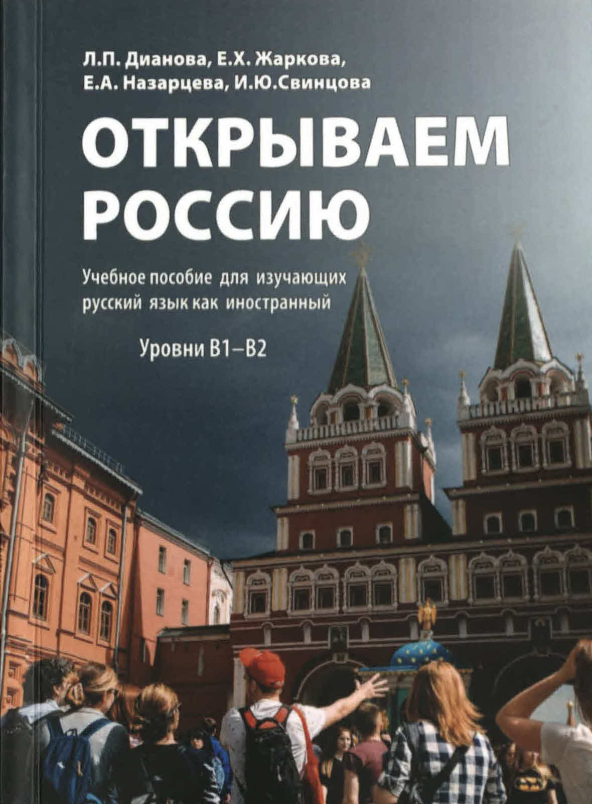
Открываем Россию : : учебное пособие для изучающих русский язык как иностранный : уровни В1-В2 / Л. П. Дианова, Е. Х. Жаркова, Е. А. Назарцева, И. Ю. Свинцова. - Москва : Наука, 2023. - 166 с. : ил., портр., табл.
ОХЛ 81.2 О-83
ОХЛ 81.2 О-83
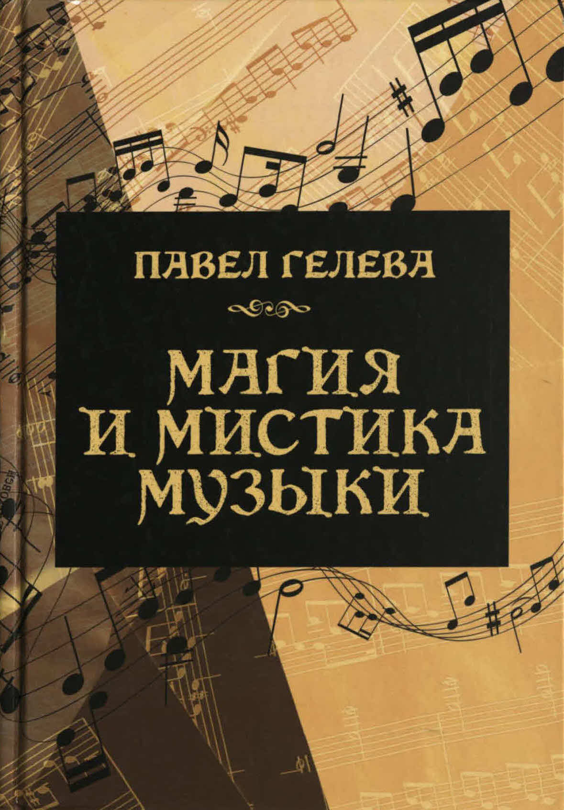
Гелева, Павел Алексеевич.
Магия и мистика музыки : музыканты о музыке, о жизни и о себе / Павел Гелева. - Нижний Новгород : А. Г. Москвичев, 2023. - 497 с. - (Magic-kniga).
ОХЛ, Чит. з. 85.31 Г-31, 785.2 Г-311
Магия и мистика музыки : музыканты о музыке, о жизни и о себе / Павел Гелева. - Нижний Новгород : А. Г. Москвичев, 2023. - 497 с. - (Magic-kniga).
ОХЛ, Чит. з. 85.31 Г-31, 785.2 Г-311
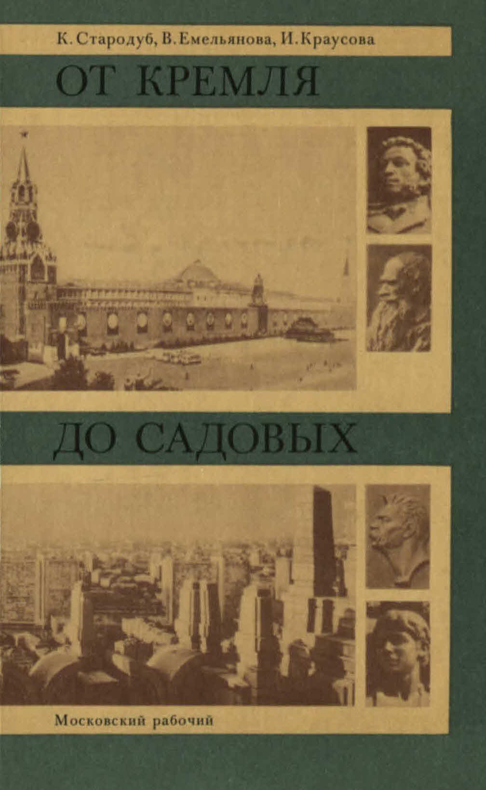
Стародуб, Корнелия Вячеславовна.
От Кремля до Садовых : Путеводитель по литературным местам Москвы / К.В. Стародуб, В.В. Емельянова, И.В. Краусова. - Москва : Московский рабочий, 1984. - 256 c. : 24 л. ил.
ОХЛ 26.89(2-2М) С-77
От Кремля до Садовых : Путеводитель по литературным местам Москвы / К.В. Стародуб, В.В. Емельянова, И.В. Краусова. - Москва : Московский рабочий, 1984. - 256 c. : 24 л. ил.
ОХЛ 26.89(2-2М) С-77
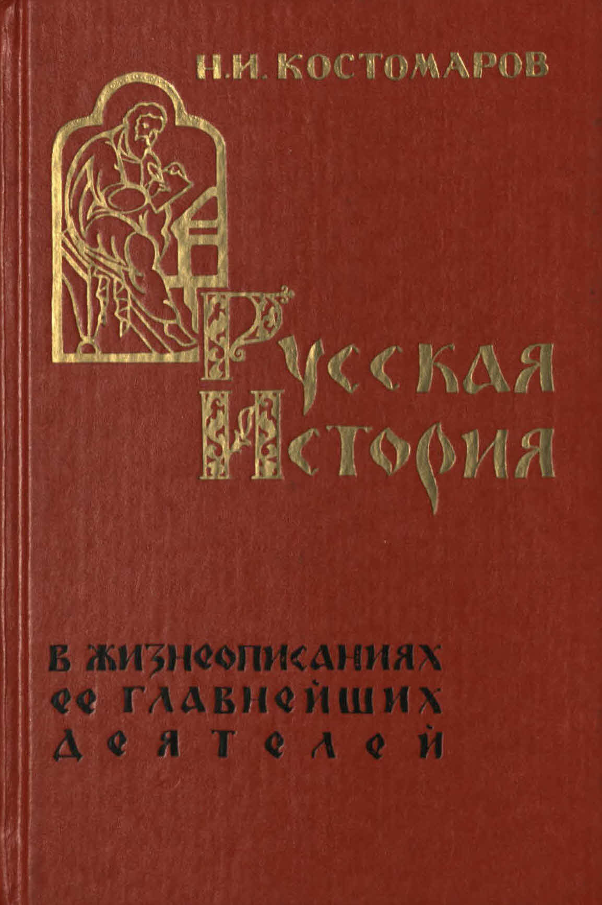
Костомаров, Николай Иванович.
Русская история в жизнеописаниях ее главнейших деятелей / Н. И. Костомаров. - Москва : Мысль, 1991. - 616,[2] с. - (Литературные памятники). Библиогр. в примеч.: с. 615-617.
ОХЛ 63.3(2) К-72
Русская история в жизнеописаниях ее главнейших деятелей / Н. И. Костомаров. - Москва : Мысль, 1991. - 616,[2] с. - (Литературные памятники). Библиогр. в примеч.: с. 615-617.
ОХЛ 63.3(2) К-72
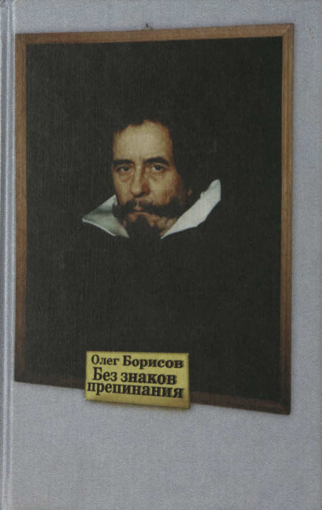
Борисов, Олег Иванович.
Без знаков препинания : Дневник, 1974-1994 / Олег Борисов; [Подгот. текста Ю. А. Борисова]. - Москва : Артист. Режиссер. Театр, 1999. - 366, [1] с.
ОХЛ 85.33 Б-82
Без знаков препинания : Дневник, 1974-1994 / Олег Борисов; [Подгот. текста Ю. А. Борисова]. - Москва : Артист. Режиссер. Театр, 1999. - 366, [1] с.
ОХЛ 85.33 Б-82
 Дитрих, Марлен.
Дитрих, Марлен.Азбука моей жизни / М. Дитрих; [Вступ. ст. и примеч. Г. В. Красновой]. - Москва : Вагриус, 1997. - 381,[2] с. : [16] л. ил. - (Мой 20 век). Пер. с нем. яз. - На рус. яз. - На пер. только загл. сер. - Фильмогр.: с. 365-367.
ОХЛ 85.37 Д-49
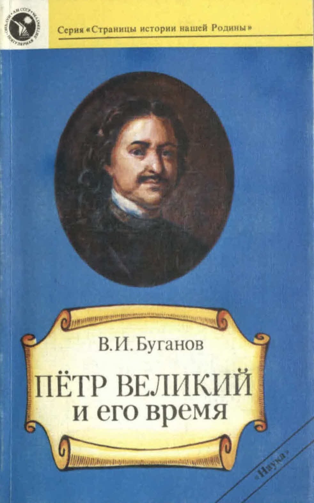
Буганов, Виктор Иванович.
Петр Великий и его время / В. И. Буганов; Отв. ред. А. П. Новосельцев; АН СССР. - Москва : Наука, 1989. - 187,[2] с. - (Страницы истории нашей Родины). Библиогр.: с. 188.
ОХЛ 63.3(2)46 Б-90
Петр Великий и его время / В. И. Буганов; Отв. ред. А. П. Новосельцев; АН СССР. - Москва : Наука, 1989. - 187,[2] с. - (Страницы истории нашей Родины). Библиогр.: с. 188.
ОХЛ 63.3(2)46 Б-90
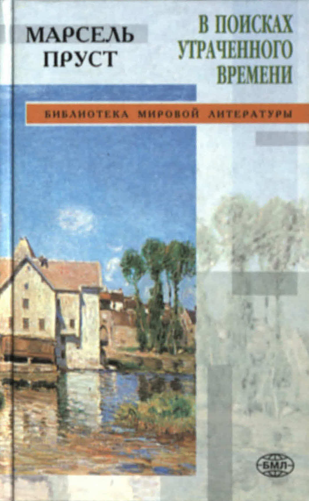
Пруст, Марсель.
В поисках утраченного времени : Пер. с франц. / М. Пруст; [Предисл. Франсуа Мориака]. - СПб. : Кристалл, 2000. - 1133, [2] с. : портр. - (Библиотека мировой литературы). Пер. с фр. яз. - На рус. яз. - Прим.
ОХЛ И(Фра) П-85
В поисках утраченного времени : Пер. с франц. / М. Пруст; [Предисл. Франсуа Мориака]. - СПб. : Кристалл, 2000. - 1133, [2] с. : портр. - (Библиотека мировой литературы). Пер. с фр. яз. - На рус. яз. - Прим.
ОХЛ И(Фра) П-85
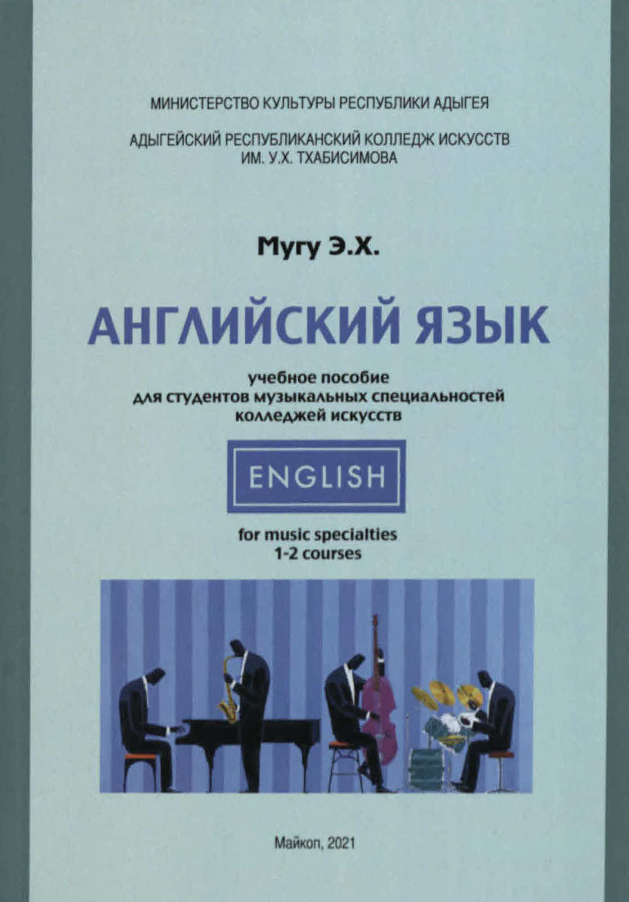
Мугу, Эмма Хасеновна.
Английский язык : : учебное пособие для студентов музыкальных специальностей колледжей искусств / Мугу Э. Х. ; Адыгейский республиканский колледж искусств имени У.Х. Тхабисимова. - Майкоп : Изд-во Магарин О.Г., 2021. - 255, [1] с. : ил. Библиогр.: с. 255-256 (18 назв.). - Текст рус., англ.
ОХЛ 81.2(Анг) М-90
Английский язык : : учебное пособие для студентов музыкальных специальностей колледжей искусств / Мугу Э. Х. ; Адыгейский республиканский колледж искусств имени У.Х. Тхабисимова. - Майкоп : Изд-во Магарин О.Г., 2021. - 255, [1] с. : ил. Библиогр.: с. 255-256 (18 назв.). - Текст рус., англ.
ОХЛ 81.2(Анг) М-90
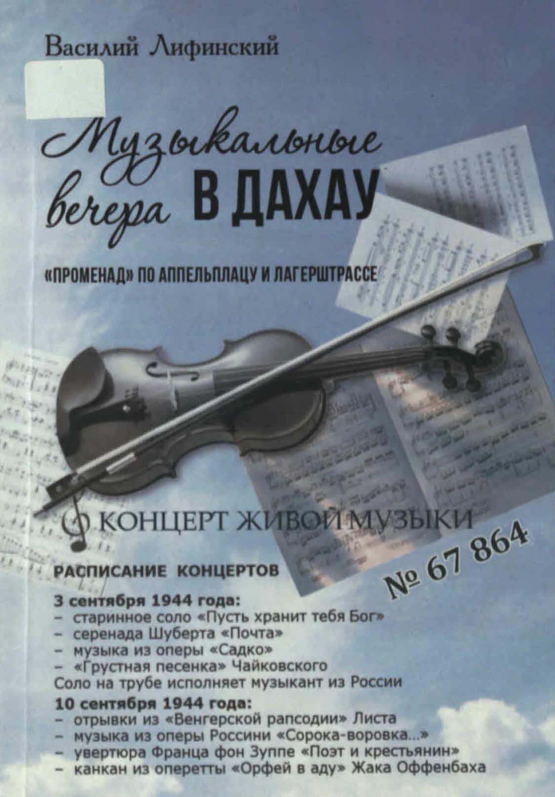
Лифинский , Василий Матвеевич.
Музыкальные вечера в Дахау : "Променад" по аппельплацу и лагерштрассе : [военно-историческая повесть] / Василий Лифинский .- Изд. 5-е, доп. - Москва : ОнтоПринт, 2023. - 320, [2] с., 11 л. ил. : ил., фот. Библиогр.: с. 312-321.
ОХЛ Р2 Л-64
Музыкальные вечера в Дахау : "Променад" по аппельплацу и лагерштрассе : [военно-историческая повесть] / Василий Лифинский .- Изд. 5-е, доп. - Москва : ОнтоПринт, 2023. - 320, [2] с., 11 л. ил. : ил., фот. Библиогр.: с. 312-321.
ОХЛ Р2 Л-64
Читальный зал
Книги
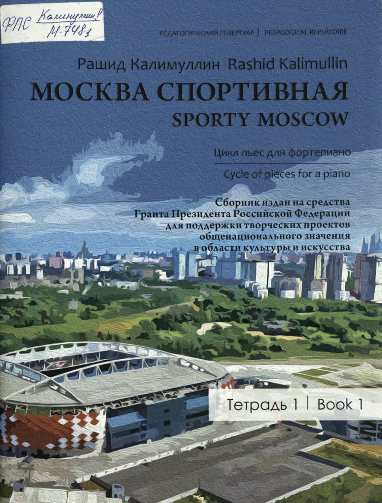
Калимуллин, Рашид Фагимович.
Москва спортивная : цикл пьес для фортепиано / Рашид Калимуллин. - Казань : Интер-Графика, 2022 Парал. русс. англ. Тетр. 1. - 47 с.
Чит. з. ФПС М-748
Москва спортивная : цикл пьес для фортепиано / Рашид Калимуллин. - Казань : Интер-Графика, 2022 Парал. русс. англ. Тетр. 1. - 47 с.
Чит. з. ФПС М-748
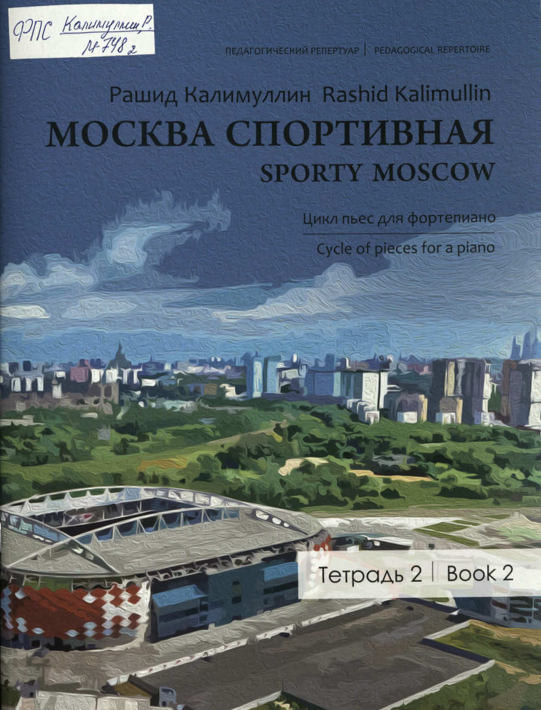
Калимуллин, Рашид Фагимович.
Москва спортивная : цикл пьес для фортепиано / Рашид Калимуллин. - Казань : Интер-Графика, 2022 Парал. русс. англ. Тетр. 2. - 47 с.
Чит. з. ФПС М-748
Москва спортивная : цикл пьес для фортепиано / Рашид Калимуллин. - Казань : Интер-Графика, 2022 Парал. русс. англ. Тетр. 2. - 47 с.
Чит. з. ФПС М-748
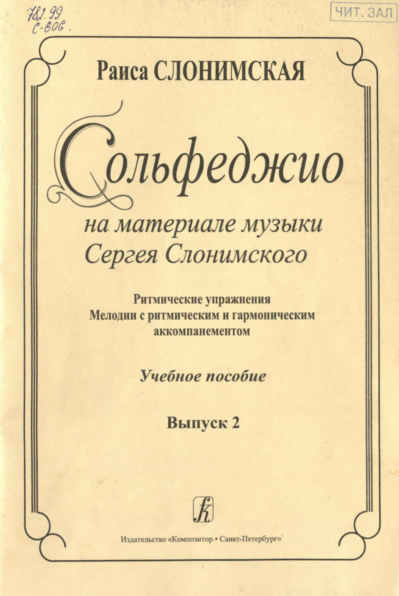
Слонимская, Раиса Николаевна.
Сольфеджио на материале музыки Слонимского. Вып. 2 : учебное пособие / Раиса Слонимская. - Санкт-Петербург : Композитор Санкт-Петербург, 2016. - 71, [1] с.
Чит. з. 782.99 С-606
Сольфеджио на материале музыки Слонимского. Вып. 2 : учебное пособие / Раиса Слонимская. - Санкт-Петербург : Композитор Санкт-Петербург, 2016. - 71, [1] с.
Чит. з. 782.99 С-606
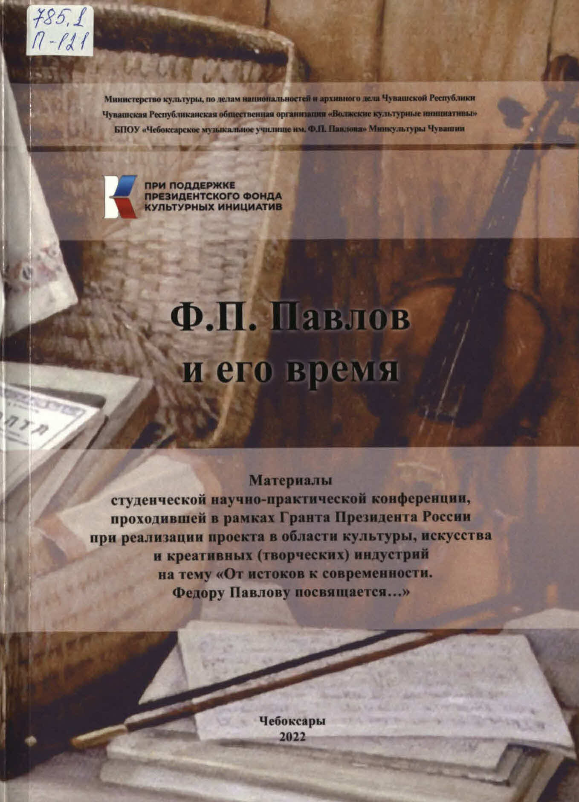
Ф. П. Павлов и его время : материалы студенческой науч.-практ. конф. "От истоков к современности. Федору Павлову посвящается.." / Чебоксарское музыкальное училище имени Ф. П. Павлова. - Чебоксары : ООО "Селина", 2022. - 69 с.
Чит. з. 785.1 П-121, 780.8 П-121
Чит. з. 785.1 П-121, 780.8 П-121
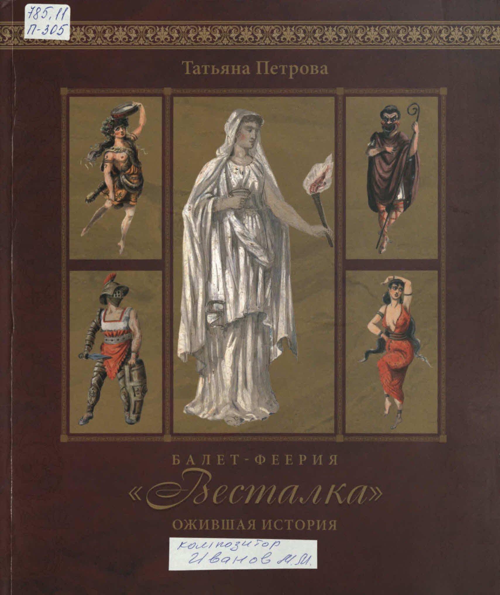
Петрова, Татьяна В.
Балет-феерия "Весталка" : ожившая история : к 135-летию премьеры спектакля / Татьяна Петрова; [музыка М.М. Иванов; либретто С.Н. Худеков; хореограф М.И. Петипа]. - Рязань : Рязанская областная типография, 2023. - 67 с. : ил., портр., цв. ил., фот.
Чит. з. 785.11 П-305
Балет-феерия "Весталка" : ожившая история : к 135-летию премьеры спектакля / Татьяна Петрова; [музыка М.М. Иванов; либретто С.Н. Худеков; хореограф М.И. Петипа]. - Рязань : Рязанская областная типография, 2023. - 67 с. : ил., портр., цв. ил., фот.
Чит. з. 785.11 П-305
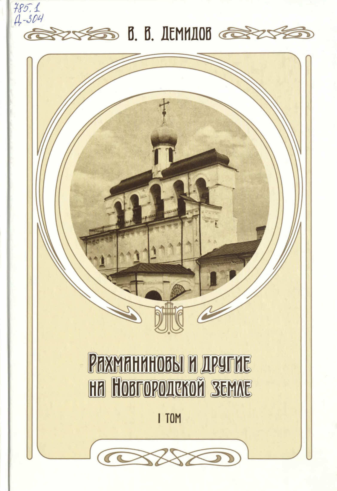
Демидов, Валерий Васильевич.
Рахманиновы и другие на Новгородской земле : [в 2 т.] / В. В. Демидов. - Великий Новгород : Печатный двор, 2023 Т. 1 / В. В. Демидов. - 2023. - 335 с. : ил., фот., портр., цв. ил.
Чит. з. 785.1 Д-304
Рахманиновы и другие на Новгородской земле : [в 2 т.] / В. В. Демидов. - Великий Новгород : Печатный двор, 2023 Т. 1 / В. В. Демидов. - 2023. - 335 с. : ил., фот., портр., цв. ил.
Чит. з. 785.1 Д-304
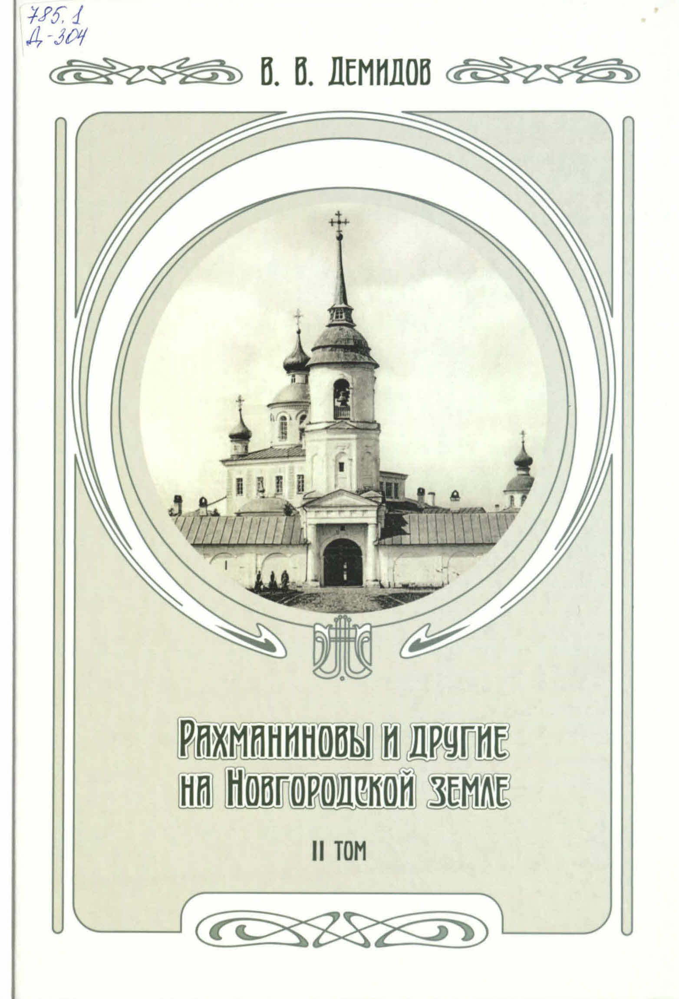
Демидов, Валерий Васильевич.
Рахманиновы и другие на Новгородской земле : [в 2 т.] / В. В. Демидов. - Великий Новгород : Печатный двор, 2023 Т. 2: Очерки и исследования / В. В. Демидов. - 2023. - 303 с. : ил., фот., портр., цв. ил.
Чит. з. 785.1 Д-304
Рахманиновы и другие на Новгородской земле : [в 2 т.] / В. В. Демидов. - Великий Новгород : Печатный двор, 2023 Т. 2: Очерки и исследования / В. В. Демидов. - 2023. - 303 с. : ил., фот., портр., цв. ил.
Чит. з. 785.1 Д-304
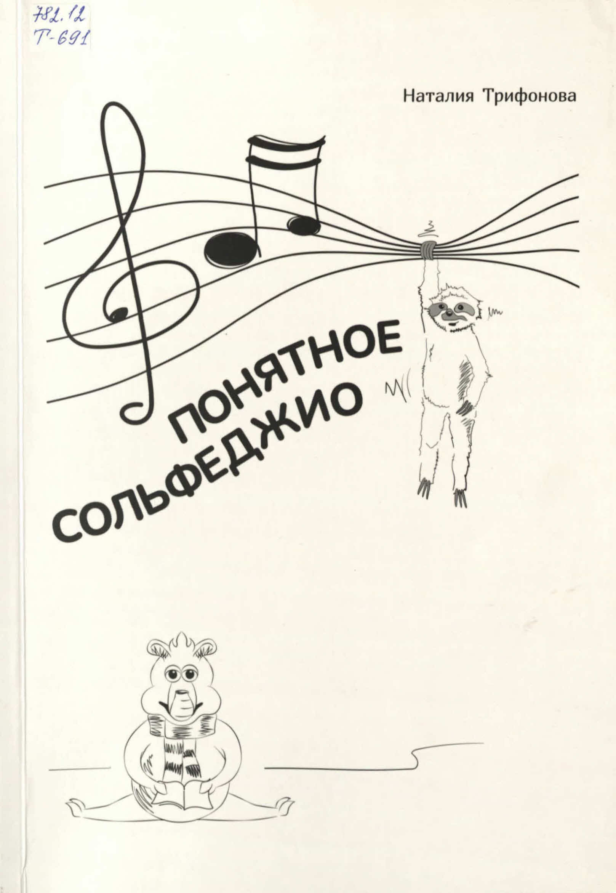
Трифонова, Наталия Сергеевна.
Понятное сольфеджио : [учебник] / Наталия Трифонова. - Санкт-Петербург : Коста, 2023. - 535 с. : ил., ноты Указатели: с. 527-535.
Чит. з. 782.12 Т-691
Понятное сольфеджио : [учебник] / Наталия Трифонова. - Санкт-Петербург : Коста, 2023. - 535 с. : ил., ноты Указатели: с. 527-535.
Чит. з. 782.12 Т-691
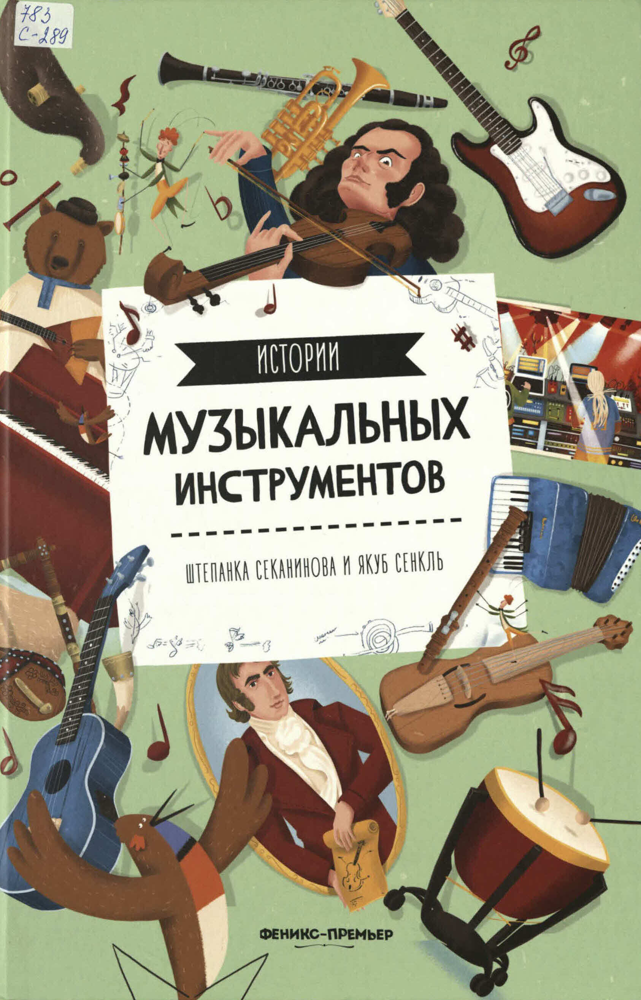
Секанинова, Штепанка.
Истории музыкальных инструментов / Штепанка Секанинова и Якуб Сенкль [ил.]; [пер. с англ. Алины Курышевой]. - Ростов-на-Дону : Феникс, 2023. - 68 с. : ил., цв. ил.
Чит. з. 783 С-289
Истории музыкальных инструментов / Штепанка Секанинова и Якуб Сенкль [ил.]; [пер. с англ. Алины Курышевой]. - Ростов-на-Дону : Феникс, 2023. - 68 с. : ил., цв. ил.
Чит. з. 783 С-289
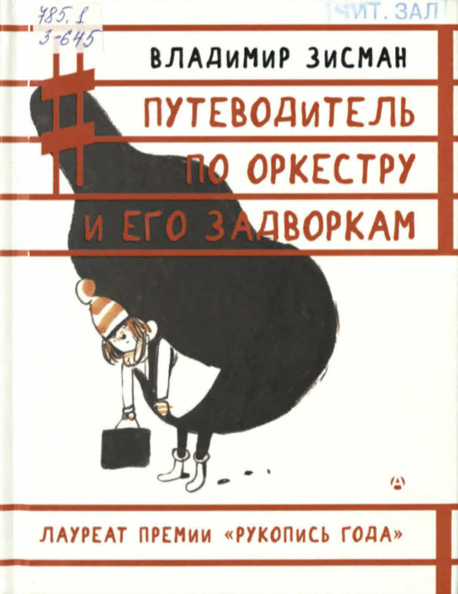
Зисман, Владимир Александрович.
Путеводитель по оркестру и его задворкам / Владимир Зисман .- 2-е изд. - Москва : АСТ, 2023. - 410, [1] с. : ил. - (Записки музыканта). Послесл. к 1-му изд. Оно же предисл. ко 2-му. - На обл.: Лауреат премии "Рукопись года".
Чит. з. 785.1 З-645
Путеводитель по оркестру и его задворкам / Владимир Зисман .- 2-е изд. - Москва : АСТ, 2023. - 410, [1] с. : ил. - (Записки музыканта). Послесл. к 1-му изд. Оно же предисл. ко 2-му. - На обл.: Лауреат премии "Рукопись года".
Чит. з. 785.1 З-645
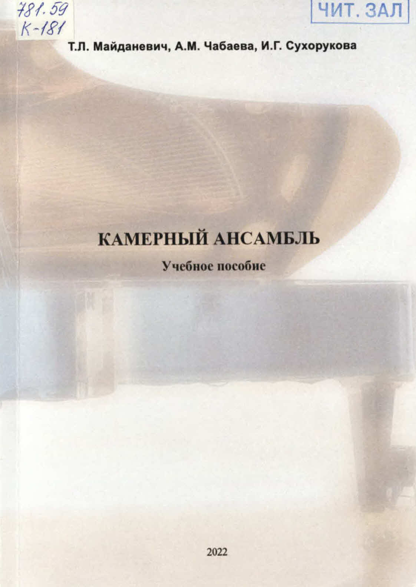
Камерный ансамбль : учебное пособие для бакалавров по направлению подготовки 53.03.02 - Музыкально-инструментальное искусство, профиль фортепиано / сост. Т. П. Майданевич, А. М. Чабаева, И. Г. Сухорукова. - Химки : МГИК, 2022. - 45 с. : табл.
Сост. указаны на обл. - Библиогр.: с. 36-38, библиогр. в конце тем.
Абон., Чит. з. 781.59 К-181
Абон., Чит. з. 781.59 К-181
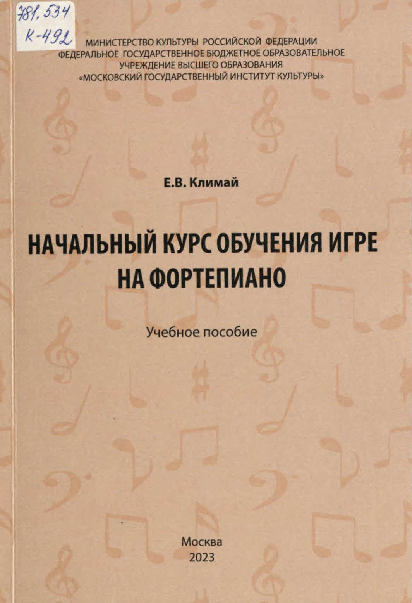
Климай, Екатерина Владимировна.
Начальный курс обучения игре на фортепиано : учебное пособие по дисциплине "Фортепиано" для бакалавров / Е. В. Климай ; Московский государственный институт культуры", Кафедра музыкального образования. - Москва : МГИК, 2023. - 97 с. : ил., нот.
Чит. з. 781.534 К-492
Начальный курс обучения игре на фортепиано : учебное пособие по дисциплине "Фортепиано" для бакалавров / Е. В. Климай ; Московский государственный институт культуры", Кафедра музыкального образования. - Москва : МГИК, 2023. - 97 с. : ил., нот.
Чит. з. 781.534 К-492
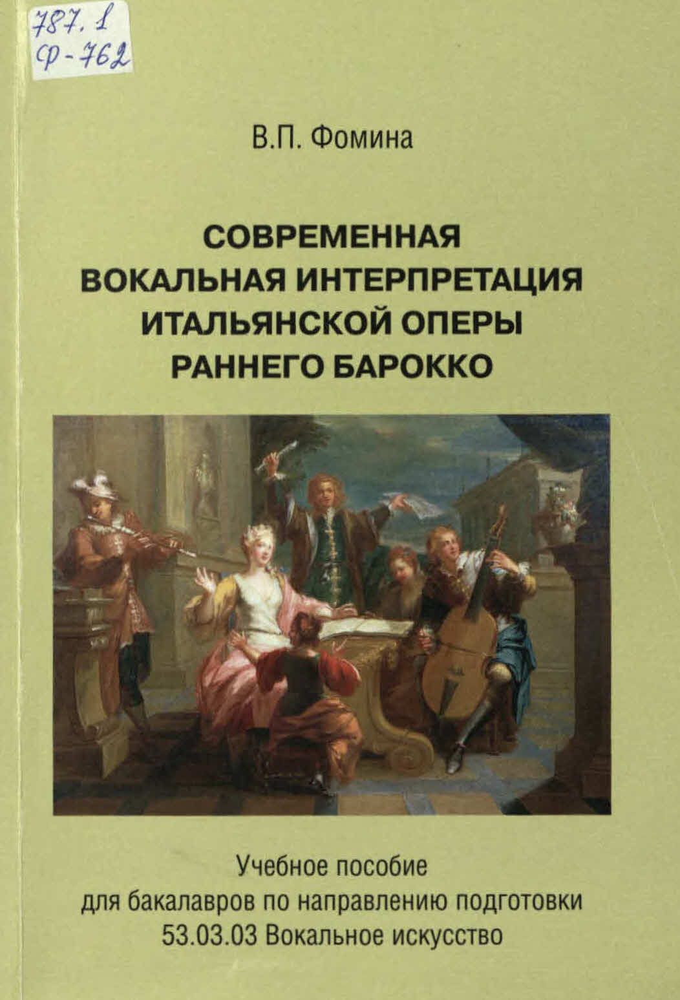
Фомина, Валентина Павловна.
Современная вокальная интерпретация итальянской оперы раннего барокко : учебное пособие для бакалавров по направлению подготовки 53.03.03 Вокальное искусство / В. П. Фомина. - Москва : Ритм, 2023. - 101 с. : ил.
Абон., Чит. з. 787.1 Ф-762, 784.311 Ф-762
Абон., Чит. з. 787.1 Ф-762, 784.311 Ф-762
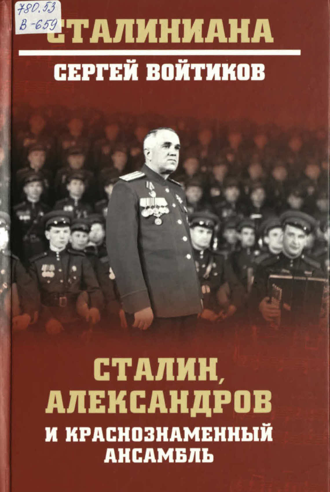
Войтиков, Сергей Сергеевич.
Сталин, Александров и Краснознаменный ансамбль / Сергей Войтиков. - Москва : Вече, 2023. - 284, [19] с. : ил. - (Сталиниана). Библиогр.: с. 252-285.
Чит. з. 780.53 В-659
Сталин, Александров и Краснознаменный ансамбль / Сергей Войтиков. - Москва : Вече, 2023. - 284, [19] с. : ил. - (Сталиниана). Библиогр.: с. 252-285.
Чит. з. 780.53 В-659
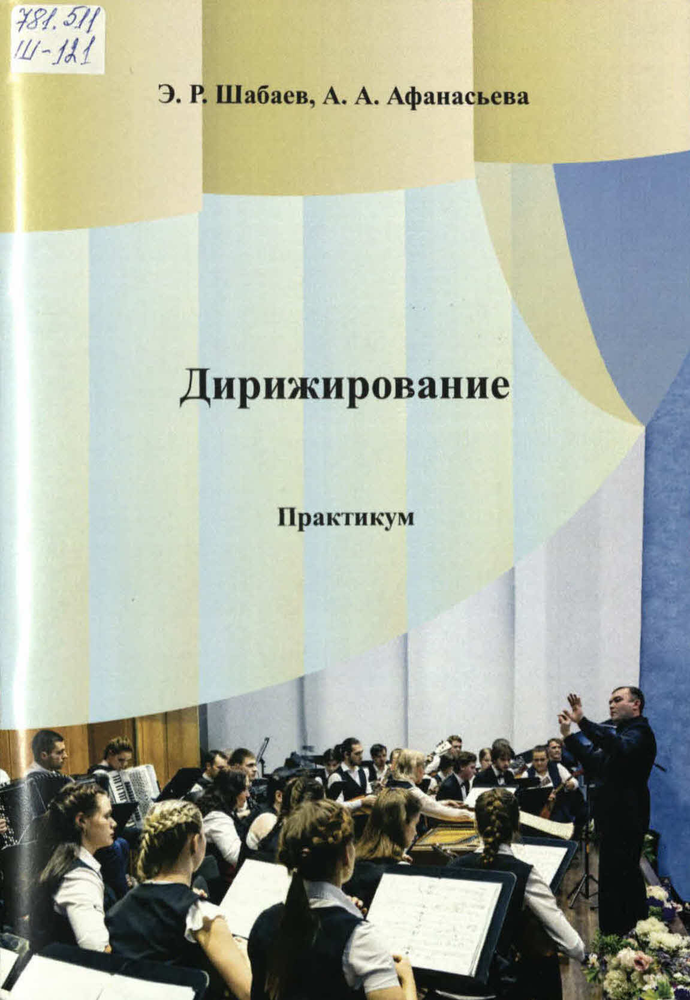
Шабаев, Эльбрус Рамильевич.
Дирижирование : практикум : направление подготовки: 53.03.02 "Музыкально-инструментальное искусство" / Э. Р. Шабаев А. А. Афанасьева ; Кемеровский государственный институт культуры". - Кемерово : КемГИК, 2023. - 65 с. : ил., табл. Библиогр.: с. 54-56.
Чит. з. 781.511 Ш-121
Дирижирование : практикум : направление подготовки: 53.03.02 "Музыкально-инструментальное искусство" / Э. Р. Шабаев А. А. Афанасьева ; Кемеровский государственный институт культуры". - Кемерово : КемГИК, 2023. - 65 с. : ил., табл. Библиогр.: с. 54-56.
Чит. з. 781.511 Ш-121
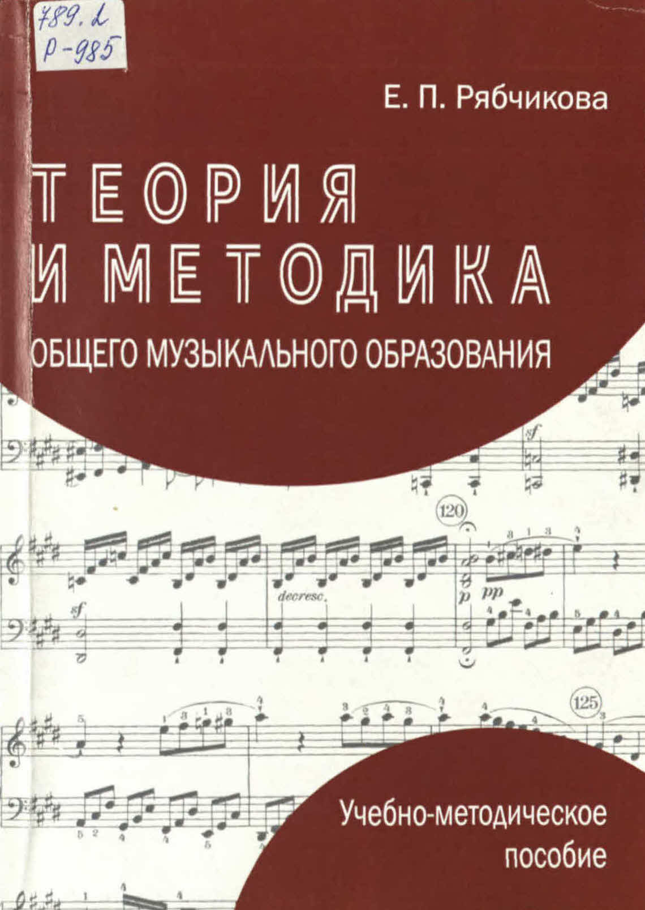
Рябчикова, Елена Павловна.
Теория и методика общего музыкального образования : учебно-методическое пособие для учителей музыки общеобразовательных организаций / Е. П. Рябчикова.- 2-е изд., испр. и доп. - Нижний Новгород : Нижегородский институт развития образования, 2022. - 330, [1] с. : ил., нот., портр., табл. Библиогр.: с. 324-328 (43 назв.).
Чит. з. 789.2 Р-985
Теория и методика общего музыкального образования : учебно-методическое пособие для учителей музыки общеобразовательных организаций / Е. П. Рябчикова.- 2-е изд., испр. и доп. - Нижний Новгород : Нижегородский институт развития образования, 2022. - 330, [1] с. : ил., нот., портр., табл. Библиогр.: с. 324-328 (43 назв.).
Чит. з. 789.2 Р-985
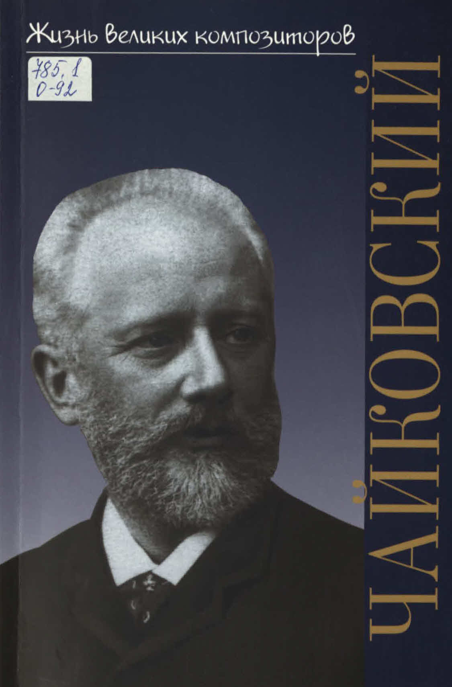
Охалова, Ирина Васильевна.
Петр Ильич Чайковский / И.В. Охалова. - Москва : Музыка; Гамма-Пресс, 2023. - 197, [2] с. : ил., портр. - (Жизнь великих композиторов). Предисл. авт. - На обл. авт. не указан.
Чит. з. 785.1 О-92
Петр Ильич Чайковский / И.В. Охалова. - Москва : Музыка; Гамма-Пресс, 2023. - 197, [2] с. : ил., портр. - (Жизнь великих композиторов). Предисл. авт. - На обл. авт. не указан.
Чит. з. 785.1 О-92
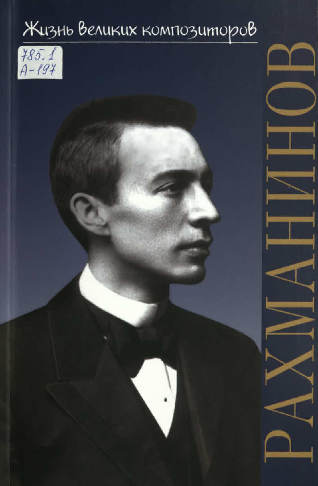
Аверьянова, Ольга Ивановна.
Сергей Васильевич Рахманинов / О.И. Аверьянова. - Москва : Музыка; Гамма-Пресс, 2023. - 274, [5] с. : ил., портр. - (Жизнь великих композиторов). На обл. авт. не указан.
Чит. з. 785.1 А-197
Сергей Васильевич Рахманинов / О.И. Аверьянова. - Москва : Музыка; Гамма-Пресс, 2023. - 274, [5] с. : ил., портр. - (Жизнь великих композиторов). На обл. авт. не указан.
Чит. з. 785.1 А-197
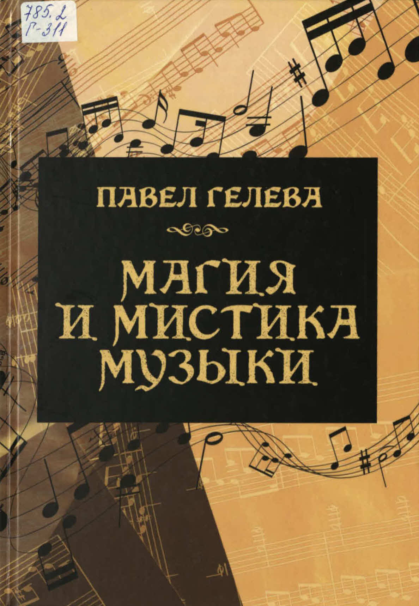
Гелева, Павел Алексеевич.
Магия и мистика музыки : музыканты о музыке, о жизни и о себе / Павел Гелева. - Нижний Новгород : А. Г. Москвичев, 2023. - 497 с. - (Magic-kniga).
ОХЛ, Чит. з. 85.31 Г-31, 785.2 Г-311
Магия и мистика музыки : музыканты о музыке, о жизни и о себе / Павел Гелева. - Нижний Новгород : А. Г. Москвичев, 2023. - 497 с. - (Magic-kniga).
ОХЛ, Чит. з. 85.31 Г-31, 785.2 Г-311
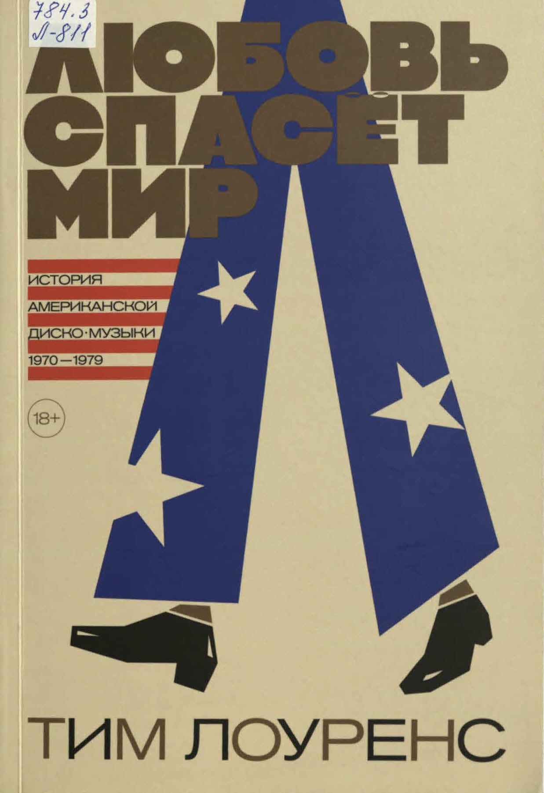
Лоуренс, Тим.
Любовь спасёт мир = Love saves the day : a history of american dance music culture, 1970-1979 : история американской диско-музыки 1970-1979 / Тим Лоуренс; [пер. Илья Воронин]. - Москва : Белое яблоко, 2023. - 430 с. : ил., портр., фот. Прим.: с. 385-393, избр. дискогр.: с. 395-406, алф. указ.: с. 411-430. - Библиогр.: с. 407-409.
Чит. з. 784.3 Л-811
Любовь спасёт мир = Love saves the day : a history of american dance music culture, 1970-1979 : история американской диско-музыки 1970-1979 / Тим Лоуренс; [пер. Илья Воронин]. - Москва : Белое яблоко, 2023. - 430 с. : ил., портр., фот. Прим.: с. 385-393, избр. дискогр.: с. 395-406, алф. указ.: с. 411-430. - Библиогр.: с. 407-409.
Чит. з. 784.3 Л-811
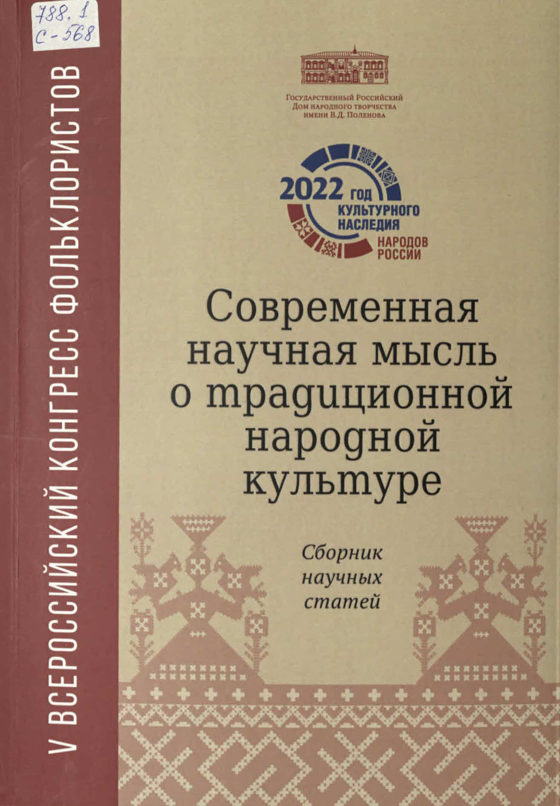
Современная научная мысль о традиционной народной культуре : V Всероссийский конгресс фольклористов : сборник научных статей / ред.-сост.: Е. А. Дорохова, Д. В. Морозов. - Москва : Государственный российский дом народного творчества им. В.Д. Поленова, 2022. - 409 с., [4] л. ил. : ил., нот., портр., цв. ил.
Чит. з. 788.1 С-568, 780.8 С-568
Чит. з. 788.1 С-568, 780.8 С-568
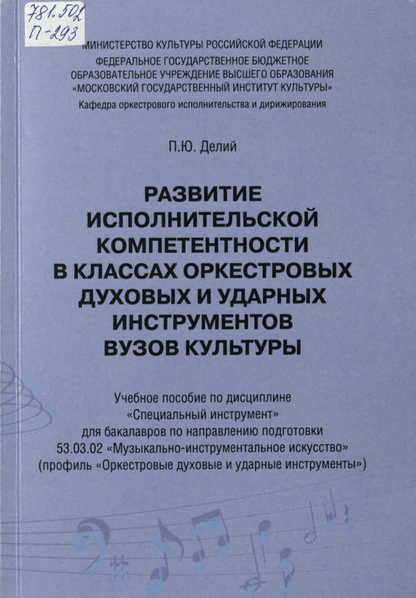
Делий, Павел Юрьевич.
Развитие исполнительской компетентности в классах оркестровых духовых и ударных инструментов вузов культуры : учебное пособие по дисциплине "Специальный инструмент" для бакалавров / П. Ю. Делий. - Москва : МГИК; Ритм, 2023. - 70 с. : ил., нот., табл. Библиогр.: с. 64-67.
781.502 Д-293
Развитие исполнительской компетентности в классах оркестровых духовых и ударных инструментов вузов культуры : учебное пособие по дисциплине "Специальный инструмент" для бакалавров / П. Ю. Делий. - Москва : МГИК; Ритм, 2023. - 70 с. : ил., нот., табл. Библиогр.: с. 64-67.
781.502 Д-293
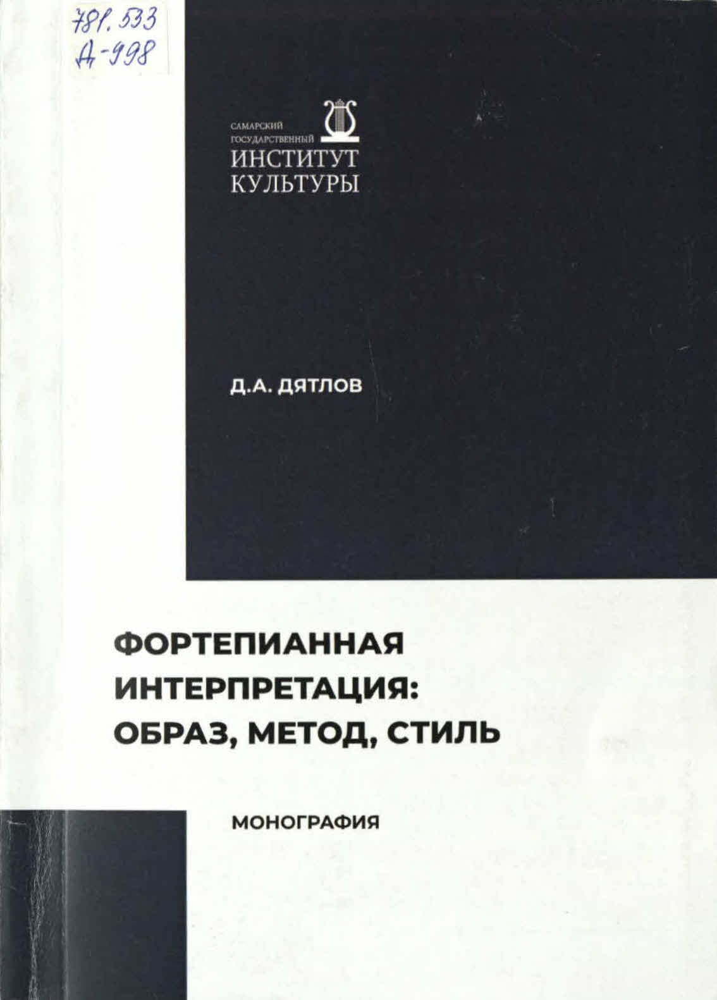
Дятлов, Дмитрий Алексеевич.
Фортепианная интерпретация: образ, метод, стиль : монография / Д. А. Дятлов ; . - Самара : Самар. гос. ин-т культуры, 2020. - 228 с. : нот. Библиогр.: с. 212-227.
Чит. з. 781.533 Д-998
Фортепианная интерпретация: образ, метод, стиль : монография / Д. А. Дятлов ; . - Самара : Самар. гос. ин-т культуры, 2020. - 228 с. : нот. Библиогр.: с. 212-227.
Чит. з. 781.533 Д-998
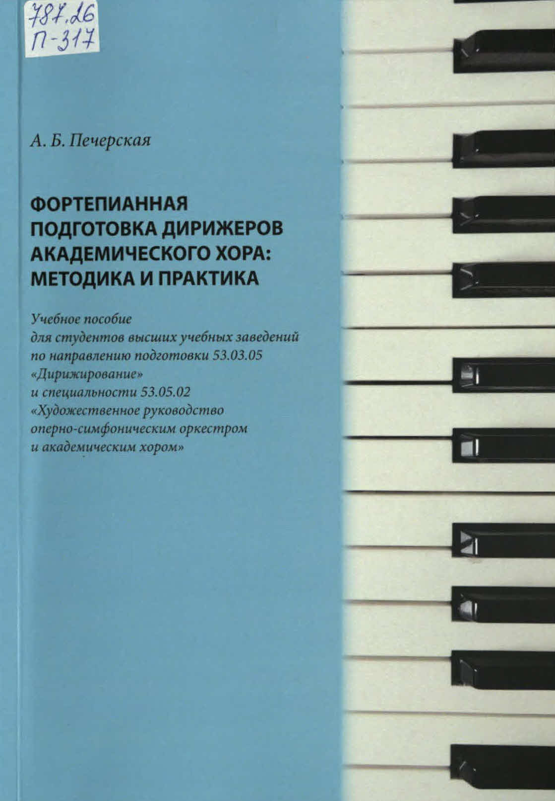
Печерская, Александра Борисовна.
Фортепианная подготовка дирижеров академического хора: методика и практика : учебное пособие для студентов высших учебных заведений / А.Б. Печерская, Московский государственный институт музыки имени А.Г. Шнитке. - Москва : Согласие, 2022. - 61, [1] с.
Абон., Чит. з. 787.26 П-317
Фортепианная подготовка дирижеров академического хора: методика и практика : учебное пособие для студентов высших учебных заведений / А.Б. Печерская, Московский государственный институт музыки имени А.Г. Шнитке. - Москва : Согласие, 2022. - 61, [1] с.
Абон., Чит. з. 787.26 П-317
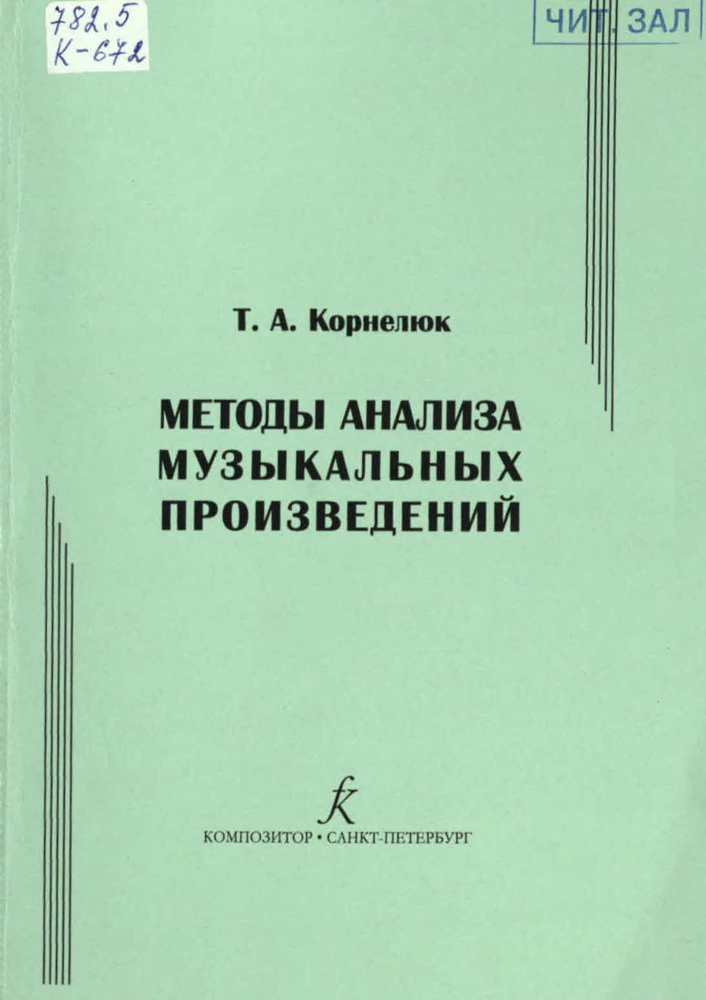
Корнелюк, Татьяна Александровна.
Методы анализа музыкальных произведений : учебное пособие для студентов музыкальных вузов и музыкальных факультетов вузов искусств / Т. А. Корнелюк ; Дальневосточный государственный институт искусств. - Санкт-Петербург : Композитор, 2023. - 98 с. : ил., табл.
Чит. з. 782.5 К-672
Методы анализа музыкальных произведений : учебное пособие для студентов музыкальных вузов и музыкальных факультетов вузов искусств / Т. А. Корнелюк ; Дальневосточный государственный институт искусств. - Санкт-Петербург : Композитор, 2023. - 98 с. : ил., табл.
Чит. з. 782.5 К-672
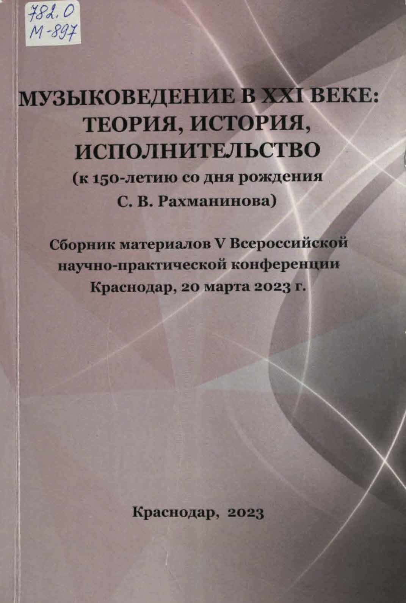
Музыковедение в XXI веке: теория, история, исполнительство : (к 150-летию со дня рождения С.В. Рахманинова) : сборник материалов V Всероссийской научно-практической конференции, Краснодар, 20 марта 2023 г. / ред.: Т.Ф. Шак, С.В. Аникиенко; рец.: Л.В. Саввина, Г.Р. Тараева. - Краснодар : КГИК, 2023. - 350 с. : нот., табл., фот., ил., цв. ил.
Чит. з. 782.0 М-897, 780.8 М-897
Чит. з. 782.0 М-897, 780.8 М-897
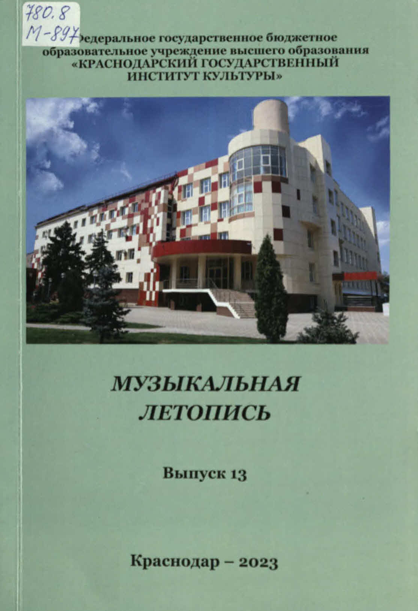
Музыкальная летопись : сборник статей / Краснодарский государственный институт культуры, Консерватория ; [редактор-составитель: Хватова С.И.]. - Краснодар : КГИК, 2020 -
Вып. 13 / ред.-сост. Хватова С.И., науч. ред. Луганская Г.Б., ред.: Зенгин С.С., Гангур Н.А., Шак Т.Ф. - Краснодар : КГИК, 2023. - 350 с. : нот., табл., ил., фот.
Чит. з. 780.8 М-897
Чит. з. 780.8 М-897
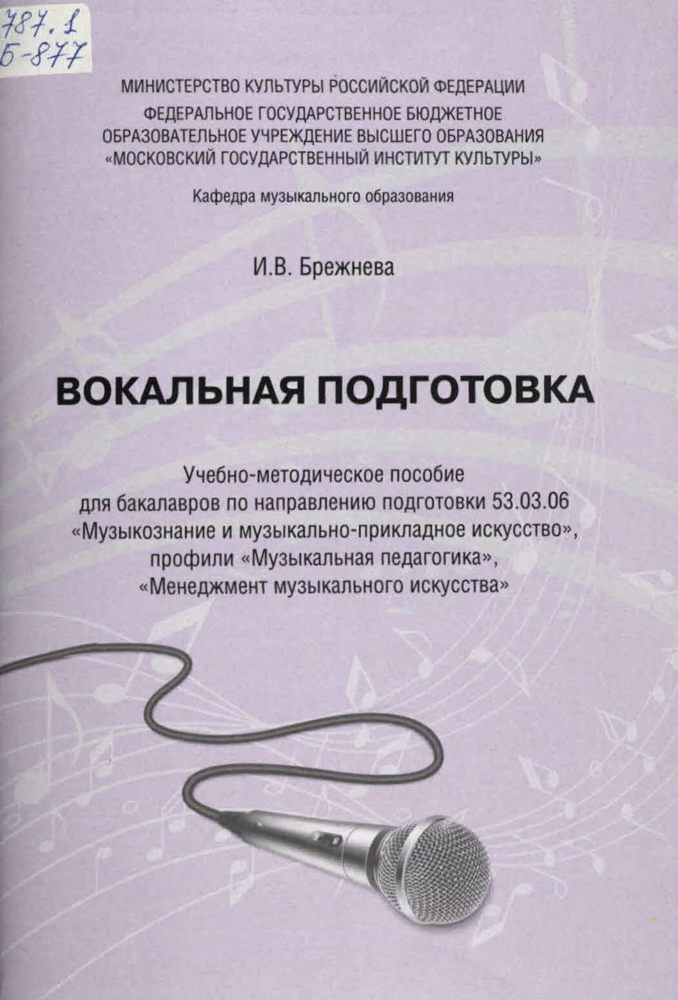
Брежнева, Ирина Владимировна.
Вокальная подготовка : учебно-методическое пособие для бакалавров / И.В. Брежнева. - Москва : МГИК; Ритм, 2023. - 57 с. : ил., табл. Библиогр.: с. 54-56.
Абон., Чит. з. 787.1 Б-877
Вокальная подготовка : учебно-методическое пособие для бакалавров / И.В. Брежнева. - Москва : МГИК; Ритм, 2023. - 57 с. : ил., табл. Библиогр.: с. 54-56.
Абон., Чит. з. 787.1 Б-877
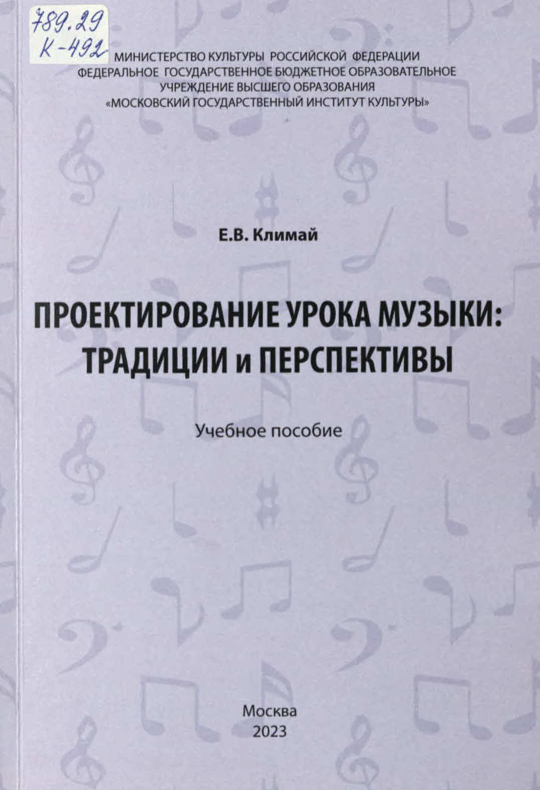
Климай, Екатерина Владимировна.
Проектирование урока музыки: традиции и перспективы : учебное пособие по дисциплинам "Музыкальная педагогика и психология", "Методика преподавания профессиональных дисциплин", "Учебная педагогическая практика", "Производственная педагогическая практика" / Е. В. Климай. - Москва : МГИК, 2023. - 98 с. : ил., нот. Чит. з. 789.29 К-492
Проектирование урока музыки: традиции и перспективы : учебное пособие по дисциплинам "Музыкальная педагогика и психология", "Методика преподавания профессиональных дисциплин", "Учебная педагогическая практика", "Производственная педагогическая практика" / Е. В. Климай. - Москва : МГИК, 2023. - 98 с. : ил., нот. Чит. з. 789.29 К-492
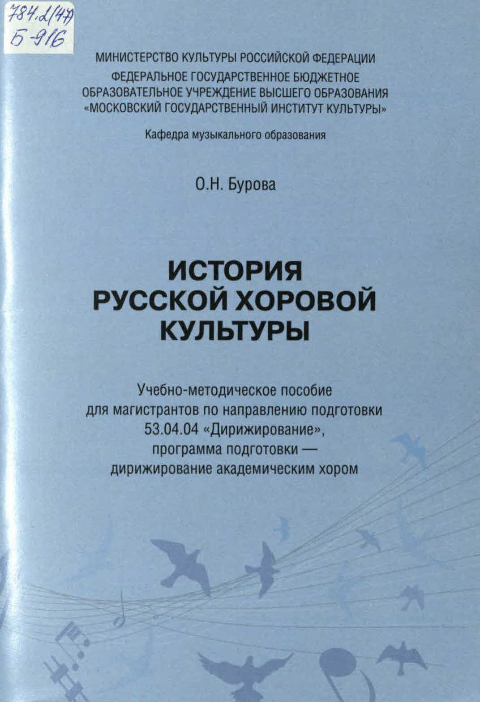
Бурова, Ольга Николаевна.
История русской хоровой культуры : учебно-методическое пособие для магистрантов / О. Н. Бурова. - Москва : МГИК; Ритм, 2023. - 54 с. : ил., табл. Библиогр.: с. 36-44.
Чит. з. 784.2(47) Б-916, 787.21 Б-916
История русской хоровой культуры : учебно-методическое пособие для магистрантов / О. Н. Бурова. - Москва : МГИК; Ритм, 2023. - 54 с. : ил., табл. Библиогр.: с. 36-44.
Чит. з. 784.2(47) Б-916, 787.21 Б-916
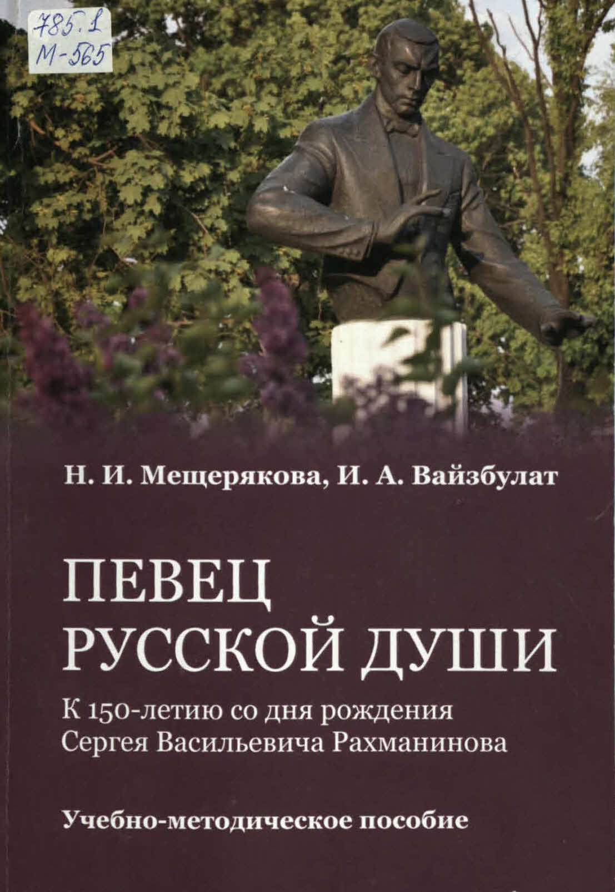
Мещерякова, Наталья Ивановна.
Певец русской души : к 150-летию со дня рождения Сергея Васильевича Рахманинова : учебно-методическое пособие / Н. И. Мещерякова, И. А. Вайзбулат. - Волгоград : Волгоградский государственный университет (ВолГУ), 2023. - 81, [1] с. : нот., ил., портр., цв. ил.
Абон., Чит. з. 785.1 М-565
Певец русской души : к 150-летию со дня рождения Сергея Васильевича Рахманинова : учебно-методическое пособие / Н. И. Мещерякова, И. А. Вайзбулат. - Волгоград : Волгоградский государственный университет (ВолГУ), 2023. - 81, [1] с. : нот., ил., портр., цв. ил.
Абон., Чит. з. 785.1 М-565
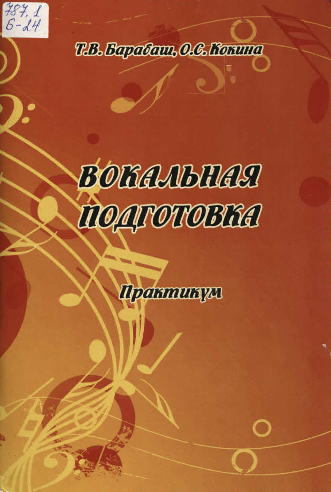
Барабаш, Татьяна Владимировна.
Вокальная подготовка : практикум / Т.В. Барабаш, О.С. Кокина. - Кемерово : КемГИК, 2023. - 57 с. : ил. Библиогр.: с. 24-26. Чит. з. 787.1 Б-24, 787.22 Б-24
Вокальная подготовка : практикум / Т.В. Барабаш, О.С. Кокина. - Кемерово : КемГИК, 2023. - 57 с. : ил. Библиогр.: с. 24-26. Чит. з. 787.1 Б-24, 787.22 Б-24
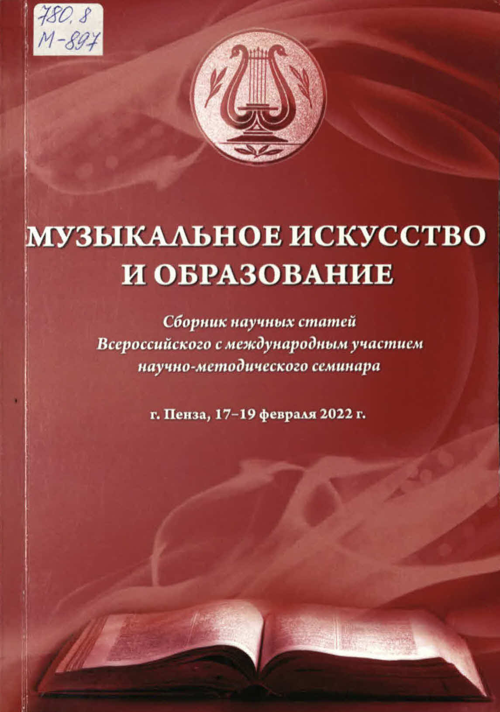
Музыкальное искусство и образование : сборник научных статей Всероссийского с международным участием научно-методического семинара, г. Пенза, 17-19 февраля 2022 г. / отв. ред.: Т. А. Шипилкина, В. В. Михалева. - Пенза : Изд-во ПГУ, 2022. - 190, [1] с. : ил., нот.
Библиогр. в конце ст. - Свед. об авт.: с. 184-187.
Чит. з. 780.8 М-897
Чит. з. 780.8 М-897
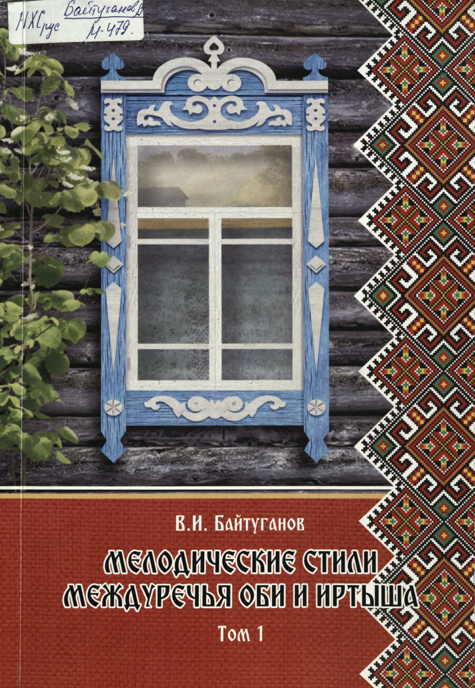
Байтуганов, Владимир Иванович.
Мелодические стили междуречья Оби и Иртыша / В. И. Байтуганов. - Новосибирск : ГАУК НСО НГОНБ, 2023- На рус. яз. - Лит. текст на рус. яз. Т. 1: Песенные стили отдельных локальных традиций Новосибирской области и Алтайского края. - Новосибирск : ГАУК НСО НГОНБ, 2023. - 224, [1] с.
Чит. з. НХСрус М-479
Мелодические стили междуречья Оби и Иртыша / В. И. Байтуганов. - Новосибирск : ГАУК НСО НГОНБ, 2023- На рус. яз. - Лит. текст на рус. яз. Т. 1: Песенные стили отдельных локальных традиций Новосибирской области и Алтайского края. - Новосибирск : ГАУК НСО НГОНБ, 2023. - 224, [1] с.
Чит. з. НХСрус М-479
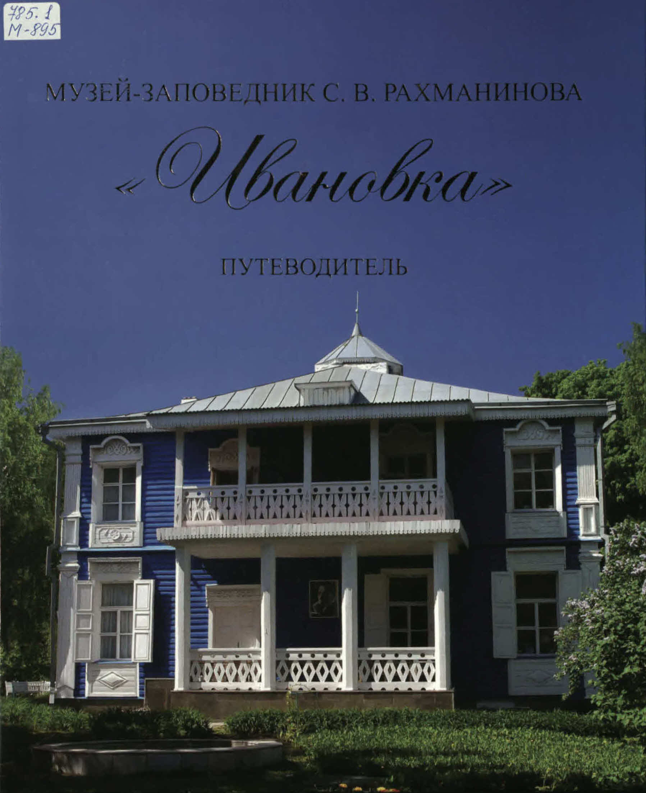
Музей-заповедник С.В. Рахманинова "Ивановка" : путеводитель : [фотоальбом] / сост. А.И. Ермаков; отв. ред. И.Н. Вановская. - Тамбов : Музей-заповедник С.В. Рахманинова "Ивановка", 2023. - 260 с. : ил., фот., цв. ил.
Соч. С.В. Рахманинова, над кот. он работал в Ивановке: с. 249-59, режим работы: с. 260.
Чит. з. 785.1 М-895
Чит. з. 785.1 М-895
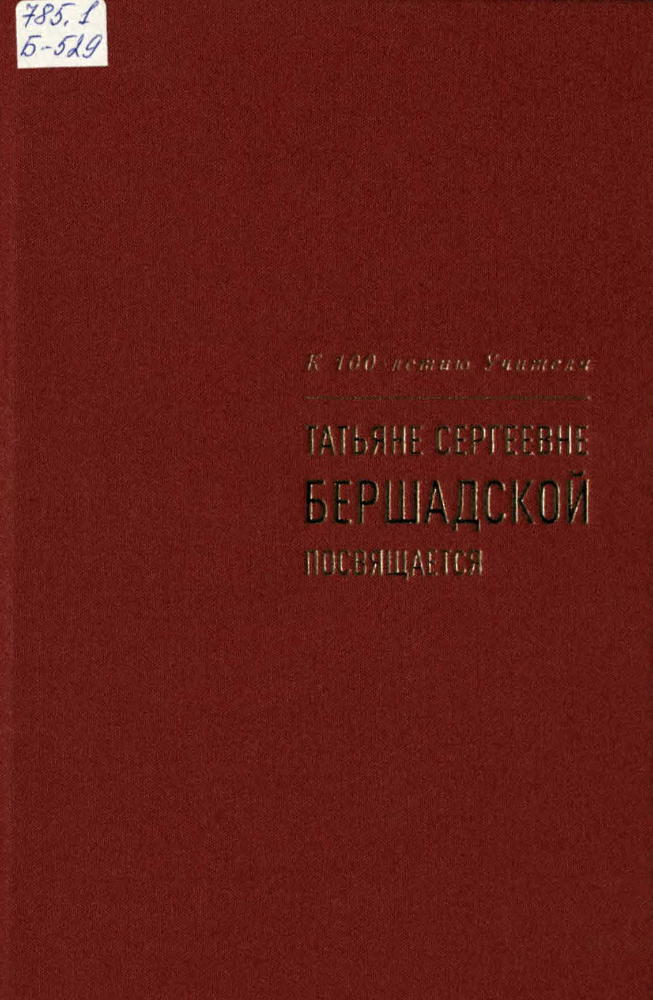
Татьяне Сергеевне Бершадской посвящается : к 100-летию учителя : [сборник статей] / ред.-сост. Е.В. Титова, А.В. Денисов, Т.И. Твердовская. - Санкт-Петербург : Санкт-Петербургская государственная консерватория; Скифия-принт, 2023. - 347 с. : ил., нот., портр., цв. ил., факс.
Список работ Т. С. Бердашской: с. 285-290 (76 назв.)
Чит. з. 785.1 Б-529
Чит. з. 785.1 Б-529
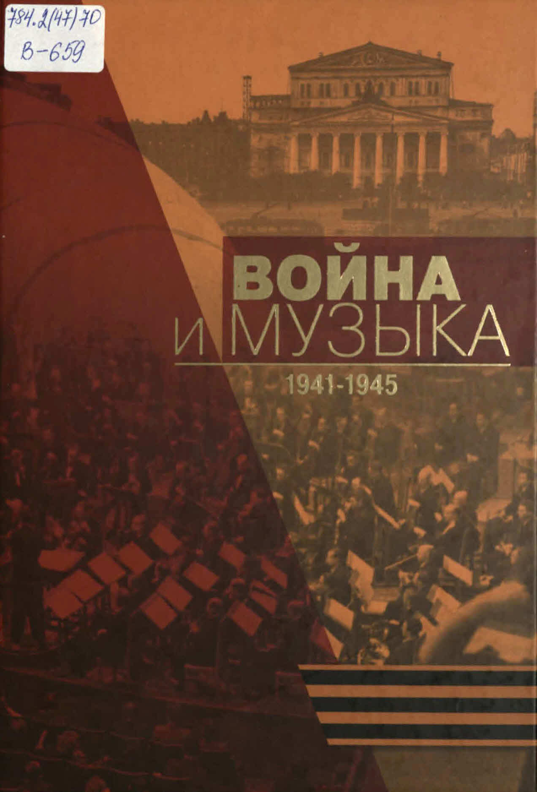
Война и музыка : Большой театр в годы войны : 1945-2015 / авт. идеи и сост. Л.Д. Рыбакова; конс. С.Н. Звягина .- Изд. 2-е испр. и доп. - Москва : Театралис, 2015. - 329, [6] с., [32] л. ил. : портр., фот.
Чит. з. 784.2(47)70 В-659
Чит. з. 784.2(47)70 В-659
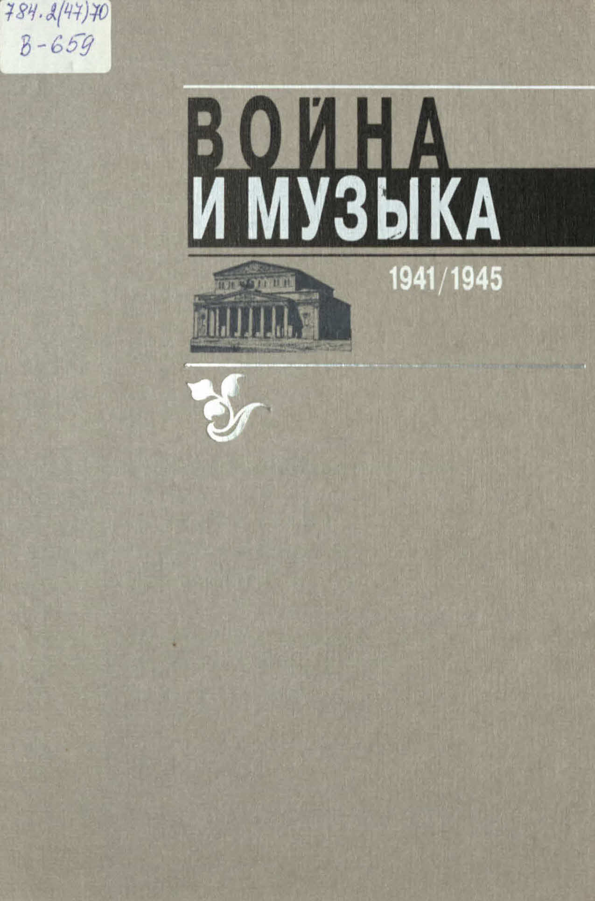
Война и музыка : Большой театр в годы войны : 1945/2005 / авт. идеи и сост. Л.Д. Рыбакова; конс. С.Н. Звягина. - Владимир : Фолиант, 2005. - 300, [1] с., [24] л. ил. : портр., фот.
Чит. з. 784.2(47)70 В-659
Чит. з. 784.2(47)70 В-659
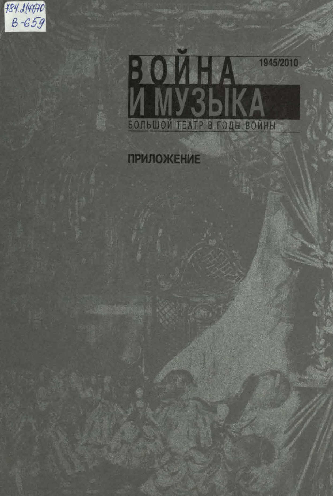
Война и музыка : Большой театр в годы войны : 1945/2010 : приложение / [авт. идеи и сост. Л.Д. Рыбакова]. - Москва : Театралис, 2010. - 71 с.
Книга памяти (участники боевых действий, фронтовых ансамблей и концертных бригад 1941-1945): с. 50-71.
Чит. з. 784.2(47)70 В-65
Чит. з. 784.2(47)70 В-65
Ноты
 Фридкин, Григорий Абрамович.
Фридкин, Григорий Абрамович.Музыкальные диктанты : учебное пособие : для музыкальных школ и училищ / составитель Г. А. Фридкин. - Москва : Музыка, 2022. - 203, [1] с. Метод. указ.: с.3-4.
Чит. з. 782.99 Ф-88
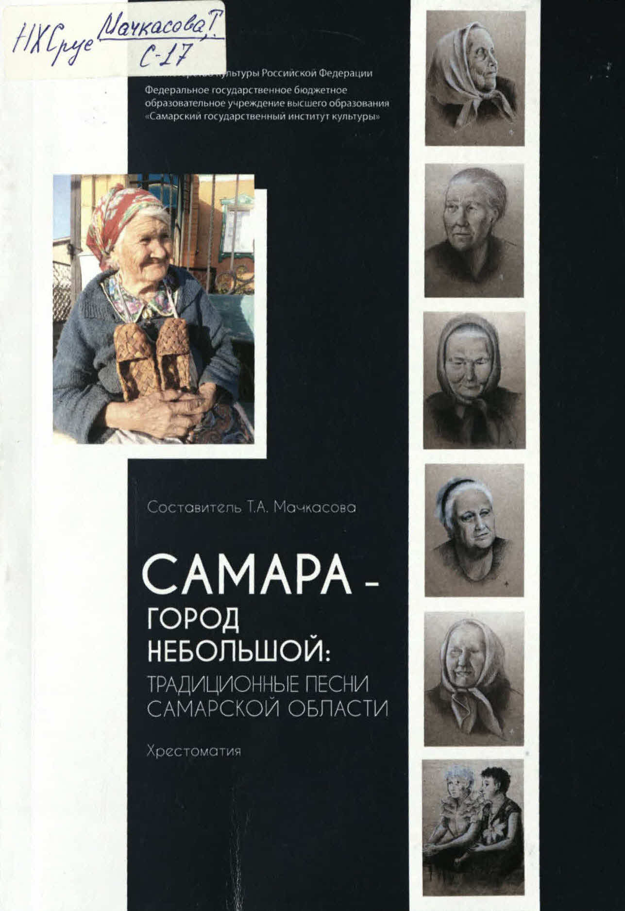
Самара - город небольшой : традиционные песни Самарской области : хрестоматия : [для народного голоса, ансамбля без сопровождения] / составитель Т. А. Мачкасова. - С предисл. - Самара : Самарский гос. ин-т культуры, 2021. - 265 с. : ил.
С предисл. - Библиогр.: с. 263-265.
Чит. з. НХСрус С-17
Чит. з. НХСрус С-17
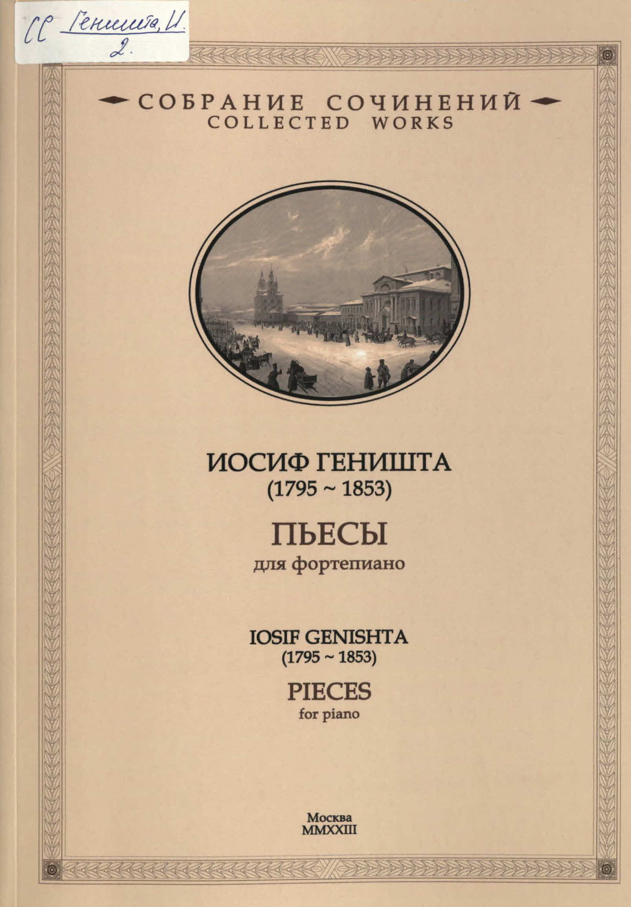
Геништа, Иосиф Иосифович.
Собрание сочинений = Collected Works : для учащихся музыкальных колледжей и вузов, широкому кругу музыкантов-любителей : в 14 томах / подготовка публикации, составитель: М. Р. Морозов. - Москва : МАКС Пресс, 2022- Т. 2: Пьесы : для фортепиано : . - 2023. - 90 с. : портр.
Абон., Чит. з. СС 2
Собрание сочинений = Collected Works : для учащихся музыкальных колледжей и вузов, широкому кругу музыкантов-любителей : в 14 томах / подготовка публикации, составитель: М. Р. Морозов. - Москва : МАКС Пресс, 2022- Т. 2: Пьесы : для фортепиано : . - 2023. - 90 с. : портр.
Абон., Чит. з. СС 2
"Хиндустанские песни" Хидайят Инайят Хана, Нур Инайят Хан, Маххебуб Хана, Хазрат Инайят Хана. Переложение для сопрано и камерного оркестра (квинтета) : учебное пособие : для сопрано и камерного оркестра / С. А. Овчинников. - Новосибирск : Новосибирская гос. консерватория (академия) имени М.И. Глинки, 2022. - 100, [2] с.
Чит. з. ВП Х-47
Чит. з. ВП Х-47
Русский карильон : сборник пьес и переложений для карильона : для студентов кафедры органа, клавесина и карильона / редактор-составитель Мария Лобецкая ; коллектив авторов. - Санкт-Петербург : [б. и.], 2022. - 131 с. - (С предисл. от сост.).
Чит. з. УдС Р-894
Чит. з. УдС Р-894
Зацепин, Александр Сергеевич.,br>
Есть только миг .. : песни из кинофильмов : для голоса в сопровождении фортепиано / Александр Зацепин ; на стихи Леонида Дербенёва. - Москва : Музыка, 2020. - 70 с. : цв. портр.
Хран., Чит. з. ВС Е-86
Хран., Чит. з. ВС Е-86
Хасбиуллина, Алсу Афгановна.
Хоровые произведения башкирских композиторов : хрестоматия по дирижированию : учебное пособие / Хасбиуллина Алсу Афгановна ; Хафизова, Гузель Мингажевна; [вступительная статья авторов]. - [Хоровая партитура]. - Уфа : Уфимская государственная академия искусств имени Загира Исмагилова, 2022. - 160 с.
Чит. з. ХС Х-802
Хоровые произведения башкирских композиторов : хрестоматия по дирижированию : учебное пособие / Хасбиуллина Алсу Афгановна ; Хафизова, Гузель Мингажевна; [вступительная статья авторов]. - [Хоровая партитура]. - Уфа : Уфимская государственная академия искусств имени Загира Исмагилова, 2022. - 160 с.
Чит. з. ХС Х-802
Юнек, Елена Валерьевна.
Всенощное бдение : сочинение для однородного хора : хрестоматия : для студентов-хормейстеров, студентов-регентов вузов культуры, духовных учебных заведений / автор-составитель Е. В. Юнек. - [Хоровая партитура]. - Самара : Самарский гос. ин-т культуры, 2022. - 82 с. Лит. текст на церковнослав. яз. - Библиогр.: с. 82.
Чит. з. ХС В-848
Всенощное бдение : сочинение для однородного хора : хрестоматия : для студентов-хормейстеров, студентов-регентов вузов культуры, духовных учебных заведений / автор-составитель Е. В. Юнек. - [Хоровая партитура]. - Самара : Самарский гос. ин-т культуры, 2022. - 82 с. Лит. текст на церковнослав. яз. - Библиогр.: с. 82.
Чит. з. ХС В-848
Ансамбли для медных духовых духовых инструментов и фортепиано : хрестоматия / редакторы-составители : доцент К.В. Апалько, доцент В.А. Валеев. - Москва : Научно-издательский центр "Московская консерватория", 2023. - 143, [1] c.
Чит. з., Абон., Хран. ИАПС А-71
Чит. з., Абон., Хран. ИАПС А-71
Май 2023
Читальный зал
Книги
Зарубежная музыка о России (музыкальная россика) = Foreign music about Russia (musical rossica) : коллективная монография : [учебное пососбие] для студентов высших учебных заведений / ред.-сост.: Л. П. Казанцева; авт. кол.: Т.С. Андрущак [и др.]. - Санкт-Петербург : Союз художников, 2023. - 322 с. : нот.
Библиогр.: с. 270-294.
Чит. з. 784.0 З-356
Чит. з. 784.0 З-356
Кушнарёв, Андрей Анатольевич.
Модест Мусоргский: "Оперный новатор" / Андрей Кушнарёв. - Москва : Майор : Осипенко А.И., 2023. - 191 с. : фот., нот. - (Серия книг "Неформальные биографии" / основана в 2008 г. Осипенко А.И.).
Чит. з. 785.1 К-964
Модест Мусоргский: "Оперный новатор" / Андрей Кушнарёв. - Москва : Майор : Осипенко А.И., 2023. - 191 с. : фот., нот. - (Серия книг "Неформальные биографии" / основана в 2008 г. Осипенко А.И.).
Чит. з. 785.1 К-964
Проблемы теории и практики постановки голоса : материалы IX Международной научно-практической конференции (29-30 ноября 2022 года) / [общ. ред. А.В. Филиппова, Ю.Ю. Андреевой, И.Э. Рахимбаевой]; . - Саратов : Саратовский источник, 2022. - 123 с. : ил., нот., фот.
Чит. з. 787.12 П-781
Чит. з. 787.12 П-781
Никитин, Алексей Алексеевич.
Энергетика музыкально-исполнительского искусства : (монография) / А.А. Никитин. - Москва : Delibri, 2023. - 224, [1] с. : нот. Библиогр.: с. 211-219. - Прил.: с. 220-225.
Чит. з. 781.5 Н-624
Энергетика музыкально-исполнительского искусства : (монография) / А.А. Никитин. - Москва : Delibri, 2023. - 224, [1] с. : нот. Библиогр.: с. 211-219. - Прил.: с. 220-225.
Чит. з. 781.5 Н-624
Музыкально-компьютерные технологии в образовании : учебно-методическое пособие / Л. Н. Каримова, Ш. А. Биккузина, И. М. Тулыбаев. - Уфа : Аэтерна, 2023. - 81 с. : ил., табл.
Библиогр.: с. 68-77. - Прил.: с. 78-81.
Чит. з. 781.61 К-231, 789.29 К-231
Чит. з. 781.61 К-231, 789.29 К-231
Соловьева, Ирина Николаевна.
Региональные народно-певческие стили : учебное пособие по направлению подготовки 53.03.04 "Искусство народного пения" / И.Н. Соловьева. - Барнаул : Изд-во Алтайского государственного института культуры, 2019. - 198, [1] c. : ил., нот. Библиогр.: с. 185-190. - Сл. терм.: с. 164-184, прил.: с. 191-198.
Чит. з. 788.21 С-603
Региональные народно-певческие стили : учебное пособие по направлению подготовки 53.03.04 "Искусство народного пения" / И.Н. Соловьева. - Барнаул : Изд-во Алтайского государственного института культуры, 2019. - 198, [1] c. : ил., нот. Библиогр.: с. 185-190. - Сл. терм.: с. 164-184, прил.: с. 191-198.
Чит. з. 788.21 С-603
Щербакова, Анна Иосифовна.
Философия музыки: онтология, гносеология, аксиология : монография / А. И. Щербакова, И. А. Корсакова ; Московский государственный институт музыки имени А. Г. Шнитке. - Москва : Согласие, 2022. - 218, [1] с.
Чит. з. 781.1 Щ-612
Философия музыки: онтология, гносеология, аксиология : монография / А. И. Щербакова, И. А. Корсакова ; Московский государственный институт музыки имени А. Г. Шнитке. - Москва : Согласие, 2022. - 218, [1] с.
Чит. з. 781.1 Щ-612
Дятлов, Дмитрий Алексеевич.
Исполнительский анализ музыкального произведения : учебно-методическое пособие / Д. А. Дятлов. - Самара : Самар. гос. ин-т культуры, 2020. - 74 с. : нот. Авт. указан на обл. - Библиогр.: с. 70-73.
Чит. з. 781.533 Д-998
Исполнительский анализ музыкального произведения : учебно-методическое пособие / Д. А. Дятлов. - Самара : Самар. гос. ин-т культуры, 2020. - 74 с. : нот. Авт. указан на обл. - Библиогр.: с. 70-73.
Чит. з. 781.533 Д-998
МПГУ (Московский педагогический государственный университет).
Традиции и инновации в вокально-хоровом искусстве : материалы Всероссийской научно-практической конференции, г. Щёлково, 15 декабря 2021 г. : [к 150-летию со дня рождения И. И. Юхова] / под общ. ред. Г.П. Стуловой. - Москва : МПГУ, 2022. - 203 с. : ил., нот, портр.
Чит. з. 787.2 Т-65
Чит. з. 787.2 Т-65
Актуальные вопросы фортепианной педагогики : межвузовский сборник научных статей / Московский государственный институт музыки имени А.Г. Шнитке. Каф. фортепианного искусства ; [ред.-сост. Р.Р. Шайхутдинов]. - Москва : Изд-во "Согласие", 2017 -
Вып. 2. - 2022. - 164, [1] с. : нот., ил., фот.
Чит. з. 780.8 А-437
Чит. з. 780.8 А-437
 Лукашева, Светлана Сергеевна.
Лукашева, Светлана Сергеевна.Формирование профессиональной компетентности музыкантов-исполнителей средствами информационных технологий : монография / С.С. Лукашева. - Самара : Самар. гос. ин-т культуры, 2021. - 161 с. Авт. указан на обл. - Библиогр.: с. 138-161.
Чит. з. 781.61 Л-84
Музыка в системе межкультурных коммуникаций : [сб. ст.] : / ред.-сост.: И.М. Ромащук; сост. И.В. Красотина, Т.А. Лукашина, И.А. Грайфер. - Москва : ГМПИ им. М.М. Ипполитова-Иванова, 2023-
Вып. 2: Национальные композиторские школы: межкультурный диалог : материалы XII Международной научно-практической конференции, 30 марта 2022 года. - 2023. - 119 с. : нот.
Чит. з. 781.3 М-897, 780.8 М-897
Чит. з. 781.3 М-897, 780.8 М-897
Перформанс и перформативные практики в музыке рубежа XX-XXI веков : монография / [В. Н. Демина и др.]; отв. ред.: В. Н. Демина, Е.В. Кисеева, А.В. Крылова. - Ростов-на-Дону : Изд-во Ростовской гос. консерватории им. С.В. Рахманинова, 2022. - 499 с. : ил., нот., табл., фот.
Чит. з. 784.3 П-278
Чит. з. 784.3 П-278
Перформанс и перформативные практики в музыке рубежа XX-XXI веков : монография / [В. Н. Демина и др.]; отв. ред.: В. Н. Демина, Е.В. Кисеева, А.В. Крылова. - Ростов-на-Дону : Изд-во Ростовской гос. консерватории им. С.В. Рахманинова, 2022. - 499 с. : ил., нот., табл., фот.
Чит. з. 784.3 П-278
Чит. з. 784.3 П-278
Тенденции развития музыкального образования в современной Франции = Development trends music education in modern France : монография / Л. А. Бурякова [и др.]. - Ростов-на-Дону; Таганрог : Изд-во Ступина С.А., 2022. - 365 с. : нот., ил., табл.
Хран., Чит. з. 789.15 Т-33
Хран., Чит. з. 789.15 Т-33
Гирфанова, Марина Евгеньевна.
Фуга на хорал в духовных кантатах И. С. Баха : учебное пособие по курсу "Полифония" / М. Е. Гирфанова. - Казань : Казанская государственная консерватория (академия) имени Н.Г. Жиганова, 2022. - 58, [2] с. : нот. Библиогр.: с. 57 (15 назв.).
Абон., Чит. з. 785.1 Г-512
Фуга на хорал в духовных кантатах И. С. Баха : учебное пособие по курсу "Полифония" / М. Е. Гирфанова. - Казань : Казанская государственная консерватория (академия) имени Н.Г. Жиганова, 2022. - 58, [2] с. : нот. Библиогр.: с. 57 (15 назв.).
Абон., Чит. з. 785.1 Г-512
Карась, Светлана Степановна.
Образное мышление в фортепианной игре : [учебник] / Светлана Карась. - [Б. м.] : Издательские решения, 2023. - 218, [3] с. : нот., ил.
Хран., Чит. з. 781.532 К-214
Образное мышление в фортепианной игре : [учебник] / Светлана Карась. - [Б. м.] : Издательские решения, 2023. - 218, [3] с. : нот., ил.
Хран., Чит. з. 781.532 К-214
Лащева, Елена Владимировна.
Практический курс элементарной теории музыки : учебно-методическое пособие для обучающихся музыкального кадетского корпуса / Е. В. Лащева, Е. В Новикова. - Краснодар : КГИК, 2022. - 78 с. : ил., нот. Библиогр.: с. 78.
Чит. з. 782.1 Л-324
Практический курс элементарной теории музыки : учебно-методическое пособие для обучающихся музыкального кадетского корпуса / Е. В. Лащева, Е. В Новикова. - Краснодар : КГИК, 2022. - 78 с. : ил., нот. Библиогр.: с. 78.
Чит. з. 782.1 Л-324
Профессиональное музыкальное искусство в контексте мировой культуры : материалы VII Международной научно-практической конференции, 13 апреля 2021 г. - Самара : Самарский гос. ин-т культуры, 2021. - 272 с. : ил., нот., табл.
Чит. з. 780.8 П-841
Чит. з. 780.8 П-841
 Томилин, Дмитрий Валентинович.
Томилин, Дмитрий Валентинович.Особенности пластической подготовки артиста мюзикла : монография / Д. В. Томилин. - Москва : Известия, 2022. - 73 с. : цв. ил., табл. Библиогр.: с. 73 (11 назв.).
Чит. з. 784.31 Т-564
 Традиционная хореография и народные игры Западного побережья Белого моря / сост.: Г. В. Емельянова, Ю.И. Марченко, Е.В. Самойлова; отв. ред.: С.В. Подрезова; ред. Е.А. Пархомова, Е.И. Якубовская. - Санкт-Петербург : [б. и.], 2023 (Саратов : ООО "Амирит", 2023). - 541, [1] с., [12] л. ил. : ил., нот., портр., цв. ил.
Библиогр.: с. 492-495. - Прил.: с. 496-534, сп. сокр.: с. 535.
Традиционная хореография и народные игры Западного побережья Белого моря / сост.: Г. В. Емельянова, Ю.И. Марченко, Е.В. Самойлова; отв. ред.: С.В. Подрезова; ред. Е.А. Пархомова, Е.И. Якубовская. - Санкт-Петербург : [б. и.], 2023 (Саратов : ООО "Амирит", 2023). - 541, [1] с., [12] л. ил. : ил., нот., портр., цв. ил.
Библиогр.: с. 492-495. - Прил.: с. 496-534, сп. сокр.: с. 535.Чит. з. 788.24 Т-65
 Петенева, Евгения Сергеевна.
Петенева, Евгения Сергеевна.Развитие творческого мышления на уроках сольфеджио : (на примере учебных пособий М. А. Котляревской-Крафт) : учебное пособие : для студентов высших учебных заведений / Е.С. Петенева. - Москва : Изд-во "Согласие", 2022. - 46, [1] с. : ил., нот. ил. Библиогр.: с. 37-41 и в конце гл.
Хран., Чит. з. 782.12 П-291
 Фу, Сяодзяо.
Фу, Сяодзяо.Теория музыкальной формы в современной учебной литературе Китая : учебное пособие / Фу Сяоцзяо; науч. ред. Н.В. Дуда. - Ростов-на-Дону : Изд-во РГК им. С.В. Рахманинова, 2023. - 110 с. : нот. Библиогр.: с. 59-67. - Прил.
Чит. з. 782.5 Ф-94, 784.2(5) Ф-94
 Брейтбург, Ким Александрович.
Брейтбург, Ким Александрович.Размышления о мюзикле : сборник научных статей / Ким Брейтбург, Валерия Брейтбург. - Москва : Согласие, 2023. - 109, [1] с. : нот. Библиогр. в конце ст.
Чит. з. 784.31 Б-877
 Петенева, Евгения Сергеевна.
Петенева, Евгения Сергеевна.Самопознание личности в процессе музыкальной деятельности : учебное пособие : для студентов высших учебных заведений, / Е. С. Петенева; Московский государственный институт музыки имени А. Г. Шнитке. - Москва : Согласие, 2022. - 42, [1] с. : ил., табл. Библиогр.: с. 40-43 и в конце гл.
Чит. з. 781.24 П-291
 Совершенствование профессиональной подготовки педагога-музыканта: теория и практика : материалы Всероссийской научно-практической конференции, г. Москва, 29 марта 2022 г. / под общ. ред. Г.П. Стуловой, Т.Г. Мариупольской. - Москва : МПГУ, 2022. - 119 с. : ил., нот., фот., табл.
Совершенствование профессиональной подготовки педагога-музыканта: теория и практика : материалы Всероссийской научно-практической конференции, г. Москва, 29 марта 2022 г. / под общ. ред. Г.П. Стуловой, Т.Г. Мариупольской. - Москва : МПГУ, 2022. - 119 с. : ил., нот., фот., табл.Чит. з. 789.29 С-56
 Шмакова, Ольга Владимировна.
Шмакова, Ольга Владимировна.Классические вариации в творчестве Людвига ван Бетховена : учебно-методическое пособие по "Анализу музыкальных произведений" / О.В. Шмакова, Г.В. Пархоменко. - Волгоград : ИП Никулина М.Г., 2023. - 55 с. : ил., нот. Библиогр.: с. 46.
Чит. з., Абон. 785.1 Ш-711
 Ко, Иоханн Сергеевич.
Ко, Иоханн Сергеевич.Исполнительский анализ сонаты для скрипки и фортепиано Д. Д. Шостаковича на примере интерпретации Д. Ф. Ойстраха и С. Т. Рихтера : учебно-методическое пособие для студентов музыкальных вузов / Иоханн Ко. - Москва : Наука, 2023. - 38, [1] с. : нот. Библиогр.: с. 38-39. - На обл. указ. год осн. изд. - 1727.
Чит. з., Абон. 785.1 К-55
 Безуглова, И.В.
Безуглова, И.В.Форма и художественно-образная система поздних сонат Бетховена ор. 90-111 : лекции по курсу "История исполнительского искусства" : учебно-методическое пособие для студентов высших учебных заведений / И. В. Безуглова, Е. Н. Наумкина. - Волгоград : ИП Никулина М.Г., 2022. - 83 с. Библиогр.: с. 83 (13 назв.).
Чит. з., Абон. 785.1 Б-406
 Хватова, Светлана Ивановна.
Хватова, Светлана Ивановна.Эволюция гармонии Ференца Листа : [материалы для самостоятельной работы по дисциплине "Историко-стилевая гармония"] / С. И. Хватова; [посвящ.] памяти .. Марка Ароновича Этингера. - Краснодар : КГИК, 2022. - 99 с. : нот. Библиогр.: с. 67-70.
Чит. з., Абон. 785.1 Х-304
 Мирошниченко, Светлана Витальевна.
Мирошниченко, Светлана Витальевна.А.Т. Гречанинов. Неизвестные произведения позднего творчества композитора : учебное пособие в трех выпусках / С.В. Мирошниченко. - Москва : МПГУ, 2023 Вып. 1: Литургия № 4 "Новый обиход", ор. 177 / С.В. Мирошниченко. - 2023. - 74, [1] с. : ил., нот., табл. Библиогр.: с. 69-70. - Прил.: с. 71-75.
785.1 М-645
 Мирошниченко, Светлана Витальевна.
Мирошниченко, Светлана Витальевна.А.Т. Гречанинов. Неизвестные произведения позднего творчества композитора : учебное пособие в 3-х выпусках / С.В. Мирошниченко. - Москва : МПГУ, 2023 Вып. 2: Романсы, ор. 179 / С.В. Мирошниченко, Л.В. Биглер, О.Е. Морозова. - 2023. - 46, [1] с. : ил., нот., табл. Библиогр.: с. 37-39. - Прил.: с. 40-47.
Чит. з., Абон. 785.1 М-645
 Мозгот, Валерий Георгиевич.
Мозгот, Валерий Георгиевич.Человек в мире музыки: коллективное и индивидуальное = The person in the world of music: collective and individual : [монография] / В.Г. Мозгот.- 2-е изд., исп. и доп. - Москва : МПСУ, 2023. - 407 с. : ил. Библиогр.: с. 359-390. - Прил. - Тит. л., содерж., парал. рус., англ. яз., аннотац. англ. яз.
Чит. з. 781.2 М-747
 Музыкальная культура Восточной Европы XIX-XX веков / ред.-сост.: С.М. Платонова, А.Т. Садуова. - Уфа : Уфимский гос. ин-т искусств им. Загира Исмагилова, 2020-
Вып. 2 : к 150-й годовщине памяти Станислава Монюшко : по материалам Междунар. науч. конференции / ред.-сост.: С.М. Платонова, А.Т. Садуова. - 2023. - 149 с. : нот., фот.
Музыкальная культура Восточной Европы XIX-XX веков / ред.-сост.: С.М. Платонова, А.Т. Садуова. - Уфа : Уфимский гос. ин-т искусств им. Загира Исмагилова, 2020-
Вып. 2 : к 150-й годовщине памяти Станислава Монюшко : по материалам Междунар. науч. конференции / ред.-сост.: С.М. Платонова, А.Т. Садуова. - 2023. - 149 с. : нот., фот.
Хран., Чит. з. 780.8 М-897
 История и антропология музыки мусульманского мира : традиции регионов / сост., науч. ред. к. искусствоведения, доц. Т.М. Джани-Заде (РАМ им. Гнесиных). - Москва : Садра, 2023. - 661 с. : ил., портр., нот. - (Единство красоты. Ислам и музыка ; вып. 2).
Библиогр. в конце ст. - Указ.терминов: с. 647-653, указ. имен: с. 654-661.
История и антропология музыки мусульманского мира : традиции регионов / сост., науч. ред. к. искусствоведения, доц. Т.М. Джани-Заде (РАМ им. Гнесиных). - Москва : Садра, 2023. - 661 с. : ил., портр., нот. - (Единство красоты. Ислам и музыка ; вып. 2).
Библиогр. в конце ст. - Указ.терминов: с. 647-653, указ. имен: с. 654-661.Хран., Чит. з. 784.0 И-907, 780.8 И-907
Цифровое музыковедение : учебная программа дисциплины : основная профессиональная образовательная программа "Музыковедение" / разраб. П.А. Песенкой. - Москва : Научно-издательский центр "Московская консерватория", 2023. - 21, [1] с.
Библиогр.: с. 15-18.
Хран., ИБО, Чит. з., Абон. 780.621.1 Ц-752
Хран., ИБО, Чит. з., Абон. 780.621.1 Ц-752
Бородин, Александр Порфирьевич.
Письма. В 4-х т. 1857-1887 : [полное собрание, критически сверенное с подлинными текстами] / Александр Порфирьевич Бородин ; сост., научно-текстолог. ред. А.В. Булычевой ; [предисл. С.А. Дианина]. - Челябинск : Авто Граф, 2020. Т. 3. 1878-1882: Письма. - 2023. - IX, [1], 340 с. : ил., портр., нот.
Чит. з. 785.1 Б-833
Письма. В 4-х т. 1857-1887 : [полное собрание, критически сверенное с подлинными текстами] / Александр Порфирьевич Бородин ; сост., научно-текстолог. ред. А.В. Булычевой ; [предисл. С.А. Дианина]. - Челябинск : Авто Граф, 2020. Т. 3. 1878-1882: Письма. - 2023. - IX, [1], 340 с. : ил., портр., нот.
Чит. з. 785.1 Б-833
Коган, Ева Бенедиктовна.
Научное наследие Евы Коган : [сборник научно-методических разработок Евы Бенедиктовны Коган] / [Ева Коган]; [ред.- сост.] Е.Г. Гимарат; Казахская национальная консерватория имени Курмангазы. - Алматы : [б. и.], 2023. - 111 с. : фот., нот., цв. фот. Текст на рус. яз.: с. 10-43, на каз. яз.: 43-77, на англ. яз.: с. 77-109.
Чит. з. 785.1 К-57
Научное наследие Евы Коган : [сборник научно-методических разработок Евы Бенедиктовны Коган] / [Ева Коган]; [ред.- сост.] Е.Г. Гимарат; Казахская национальная консерватория имени Курмангазы. - Алматы : [б. и.], 2023. - 111 с. : фот., нот., цв. фот. Текст на рус. яз.: с. 10-43, на каз. яз.: 43-77, на англ. яз.: с. 77-109.
Чит. з. 785.1 К-57
Каракулов, Булат Ишанбаевич.
Музыкальная симметрология / Булат Каракулов ; [под ред. И.К. Кожабекова]. - Алматы : СаГа, 2019 - Т. 2: Гармония времени / Булат Каракулов ; [под ред. И.К. Кожабекова]. - 2021. - 303 с. : табл., схем. Раскрытие новых граней симметрии в музыке.
Чит. з., Хран. 782 К-211
Музыкальная симметрология / Булат Каракулов ; [под ред. И.К. Кожабекова]. - Алматы : СаГа, 2019 - Т. 2: Гармония времени / Булат Каракулов ; [под ред. И.К. Кожабекова]. - 2021. - 303 с. : табл., схем. Раскрытие новых граней симметрии в музыке.
Чит. з., Хран. 782 К-211
Пенкин, Александр Геннадьевич.
Владимир Касторский: пленительный бас Мариинской оперы : [в 2 ч.] / А.Г. Пенкин ; Историко-культурный комплекс "Вятское" имени Е.А. Анкудиновой. - Ярославль : Издательское бюро "ВНД", 2015-2017 Ч. 1: Биографический очерк. - 266, [1] с. - 266, [1] с., [20] л.: фот., портр., ил. Библиогр.: с. 241-253. - Сп. сокр.: с. 253-254, им. указ.: 255-266. Чит. з. 785.1 П-251
Владимир Касторский: пленительный бас Мариинской оперы : [в 2 ч.] / А.Г. Пенкин ; Историко-культурный комплекс "Вятское" имени Е.А. Анкудиновой. - Ярославль : Издательское бюро "ВНД", 2015-2017 Ч. 1: Биографический очерк. - 266, [1] с. - 266, [1] с., [20] л.: фот., портр., ил. Библиогр.: с. 241-253. - Сп. сокр.: с. 253-254, им. указ.: 255-266. Чит. з. 785.1 П-251
Пенкин, Александр Геннадьевич.
Владимир Касторский: пленительный бас Мариинской оперы : [в 2 ч.] / А.Г. Пенкин ; Ист.-культ. комплекс "Вятское" имени Е.А. Анкудиновой. - Ярославль : Издательское бюро "ВНД", 2015-2017 Ч. 2: Справочные и генеалогические материалы. - 2017. - 245, [2] с., XX с.: фот., портр., табл. Библиогр.: с. 229-231. - Сп. сокр.: с. 232-233, имен. указ.: с. 234-246.
Чит. з. 785.1 П-251
Владимир Касторский: пленительный бас Мариинской оперы : [в 2 ч.] / А.Г. Пенкин ; Ист.-культ. комплекс "Вятское" имени Е.А. Анкудиновой. - Ярославль : Издательское бюро "ВНД", 2015-2017 Ч. 2: Справочные и генеалогические материалы. - 2017. - 245, [2] с., XX с.: фот., портр., табл. Библиогр.: с. 229-231. - Сп. сокр.: с. 232-233, имен. указ.: с. 234-246.
Чит. з. 785.1 П-251
Дубкова, Ирина Анатольевна.
Методические рекомендации по производственной педагогической практике для студентов, обучающихся по специальности 53.05.06 "Композиция" : учебно-методическое пособие / И.А. Дубкова, . - Москва : Научно-издательский центр "Московская консерватория", 2023. - 23 с. : табл. Библиогр.: c. 13-15. - Прил.: с. 16-23.
782.7 Д-794
Методические рекомендации по производственной педагогической практике для студентов, обучающихся по специальности 53.05.06 "Композиция" : учебно-методическое пособие / И.А. Дубкова, . - Москва : Научно-издательский центр "Московская консерватория", 2023. - 23 с. : табл. Библиогр.: c. 13-15. - Прил.: с. 16-23.
782.7 Д-794
Полифония : учебная программа дисциплины : основная профессиональная образовательная программа Музыковедение / разраб. И.К. Кузнецовым, Н.И. Тарасевичем. - Москва : Научно-издательский центр "Московская консерватория", 2023. - 23, [1] с. : ил.
Библиогр.: с. 19-23.
Чит. з., Хран., ИБО, Абон. 780.621.2 П-507
Чит. з., Хран., ИБО, Абон. 780.621.2 П-507
Cтиль Рахманинова : к 150-летию со дня рождения : коллективная монография / гл. редактор, сост. И.А. Скворцова, ред. Н.В. Гурьева; рец. Н.И. Ефимова, Е.Б. Баратова-Долинская. - Москва : [б. и.], 2023 (Москва : Анта Пресс, 2023). - 302, [1] с., [4] л. фот. : ил., фот., нот., цв. фот.
Предисл. от ред.-сост.
Чит. з., Абон. 785.1 С-802
Чит. з., Абон. 785.1 С-802
Ермаков, Александр Иванович.
Знаменское : имение Рахманиновых / А.И. Ермаков, отв. ред. И.Н. Вановская. - Тамбов : Музей-заповедник С.В. Рахманинова "Ивановка", 2023. - 123, [2] с. : ил., фот., цв. ил.
История дворянского имения Знаменское, с 1761 по 1917 год принадлежавшего представителям рода дворян Рахманиновых.
Чит. з. 785.1 Е-721
Знаменское : имение Рахманиновых / А.И. Ермаков, отв. ред. И.Н. Вановская. - Тамбов : Музей-заповедник С.В. Рахманинова "Ивановка", 2023. - 123, [2] с. : ил., фот., цв. ил.
История дворянского имения Знаменское, с 1761 по 1917 год принадлежавшего представителям рода дворян Рахманиновых.
Чит. з. 785.1 Е-721
Шопина, Людмила Павловна.
Синергия ценностного пространства русской народной песни : учебно-методическое пособие : для студентов высших учебных заведений / Л. П. Шопина, [автор фортепианных обработок Ю. Н. Тюлин]. - Липецк : ЛГПУ (Липецк. гос. пед. ун-т), 2021. - 53 с. С предисл. и метод. разраб. - Библиогр.: с. 52.
Чит. з. ФПС С-383
Синергия ценностного пространства русской народной песни : учебно-методическое пособие : для студентов высших учебных заведений / Л. П. Шопина, [автор фортепианных обработок Ю. Н. Тюлин]. - Липецк : ЛГПУ (Липецк. гос. пед. ун-т), 2021. - 53 с. С предисл. и метод. разраб. - Библиогр.: с. 52.
Чит. з. ФПС С-383
Программа дисциплины "Специальный класс" : вид подготовки Ансамблевое исполнительство на фортепиано :
очная форма обучения : .. [учебное пососбие] .. (ассистентура-стажировка) / сост. И.В. Красотина, Н.А.
Рубинштейн. - Москва : Научно-издательский центр "Московская консерватория", 2017. - 71, [1] с. : ил.
Хран., ИБО, Чит. з., Абон. 780.621.5 П-784
Хран., ИБО, Чит. з., Абон. 780.621.5 П-784
Мастерская педагогических идей : сборник материалов по итогам регионального конкурса методических работ
преподавателей образовательных организаций культуры и искусства Тверской области "Мастерская
педагогических идей". - Тверь : Изд-во ООО "Триада", 2022-..
Часть II. - 40 с.
Чит. з. СмС М-328
Чит. з. СмС М-328
Ноты
Урманче, Баки Идрисович.
Музыка жизни Баки Урманче : [для пения без сопровождения] / Наиля Альмеева. - Казань : Заман, 2017. - 96 с. : С илл., фот. + CD Парал. русс. татар. яз. - Статья о Баки Урманче с. 6-21.
Чит. з. ВС М-897
Музыка жизни Баки Урманче : [для пения без сопровождения] / Наиля Альмеева. - Казань : Заман, 2017. - 96 с. : С илл., фот. + CD Парал. русс. татар. яз. - Статья о Баки Урманче с. 6-21.
Чит. з. ВС М-897
 Играет национальный оркестр НТТ РС(Я) : Инструментальные произведения для народных оркестров / уч. М-во культуры и духовного развития Респ. Саха (Якутия), Национальный оркестр НТТ РС(Я). - Якутск : [б. и.], 2010-..
Выпуск III: Звуки узора : [для оркестра народных инструментов] / С.А. Зверев. - [Партитура]. - Якутск : [б. и.], 2010. - 191 с.
Играет национальный оркестр НТТ РС(Я) : Инструментальные произведения для народных оркестров / уч. М-во культуры и духовного развития Респ. Саха (Якутия), Национальный оркестр НТТ РС(Я). - Якутск : [б. и.], 2010-..
Выпуск III: Звуки узора : [для оркестра народных инструментов] / С.А. Зверев. - [Партитура]. - Якутск : [б. и.], 2010. - 191 с.Чит. з. ПнС З-441
Играет национальный оркестр НТТ РС(Я) : Инструментальные произведения для народных оркестров / уч. М-во культуры и духовного развития Респ. Саха (Якутия), Национальный оркестр НТТ РС(Я). - Якутск : [б. и.], 2010-..
Выпуск IV: Праздник оленеводов : инструментальные произведения : / С.А. Зверев. - [Партитура]. - Якутск : [б. и.], 2010. - 101 с.
Чит. з. ПнС П-688
Чит. з. ПнС П-688
Играет национальный оркестр НТТ РС(Я) : Инструментальные произведения для народных оркестров / уч. М-во культуры и духовного развития Респ. Саха (Якутия). - Якутск : [б. и.], 2010-..
Выпуск VI: Якутская классическая музыка : (переложения для оркестра национальных инструментов) / С.А. Зверев. - [Партитура]. - Якутск : [б. и.], 2012. - 113 с.
Чит. з. ПнС Я-498
Чит. з. ПнС Я-498
Николаев, Евгений Иванович.
Благодать : хоровая сюита в шести частях на стихи Алексея Мишина / Евгений Николаев. - Смоленск : [б. и.], 1010. - 25 с. : Цв. илл. Крат. свед. об авторе с. 3-5.
Чит. з. Х Б-681
Благодать : хоровая сюита в шести частях на стихи Алексея Мишина / Евгений Николаев. - Смоленск : [б. и.], 1010. - 25 с. : Цв. илл. Крат. свед. об авторе с. 3-5.
Чит. з. Х Б-681
Николаев, Евгений Иванович.
Фортепианные миниатюры / Евгений Николаев. - Смоленск : Смоленская городская типография, 2014. - 20 с.
Чит. з. ФПС Ф-801
Фортепианные миниатюры / Евгений Николаев. - Смоленск : Смоленская городская типография, 2014. - 20 с.
Чит. з. ФПС Ф-801
Писаренко, Николай Егорович.
Произведения на стихи Михаила Исаковского : [для пения с сопровождением фортепиано] / Николай Писаренко. - Смоленск : [б. и.], 2019. - 36 с. Крат. биогр. справка об авторе с. 2 обл.
Чит. з. ВС П-800
Произведения на стихи Михаила Исаковского : [для пения с сопровождением фортепиано] / Николай Писаренко. - Смоленск : [б. и.], 2019. - 36 с. Крат. биогр. справка об авторе с. 2 обл.
Чит. з. ВС П-800
Писаренко, Николай Егорович.
Господи, услышь меня : [сборник музыкальных произведений для хора и солистов] / муз. ред., сост. и авт. Николай. Писаренко ; комп. набор М.Н. Минченкова ; комп. верстка А.В. Кузнецов. - Смоленск : Смоленская городская типография, 2012. - 67 с. : портр.
Хран., Чит. з. ХС Г-722
Господи, услышь меня : [сборник музыкальных произведений для хора и солистов] / муз. ред., сост. и авт. Николай. Писаренко ; комп. набор М.Н. Минченкова ; комп. верстка А.В. Кузнецов. - Смоленск : Смоленская городская типография, 2012. - 67 с. : портр.
Хран., Чит. з. ХС Г-722
 Писаренко, Николай Егорович.
Писаренко, Николай Егорович.[Мать моя Мария Митрофановна] Арии из оратории "Мать моя Мария Митрофановна" : для низкого голоса с фортепиано / Николай Писаренко; на стихи Александра Твардовского и по воспоминаниям Ивана Твардовского. - Россия, Смоленская обл. : Смоленская городская типография, 2008. - 48 с. : Ч.-б. илл.
Чит. з. ОтС М-350
Калимуллин, Рашид Фагимович.
Москва любимая : цикл пьес для фортепиано. - Казань : Интер-Графика, 2019 Парал. русс. англ. Тетрадь 2
Чит. з. ФПС М-821,2
Москва любимая : цикл пьес для фортепиано. - Казань : Интер-Графика, 2019 Парал. русс. англ. Тетрадь 2
Чит. з. ФПС М-821,2
Калимуллин, Рашид Фагимович.
Москва любимая : цикл пьес для фортепиано. - Казань : Интер-Графика, 2019 Парал. русс. англ. Тетрадь 1. - 48 с.
Чит. з. ФПС М-821,1
Москва любимая : цикл пьес для фортепиано. - Казань : Интер-Графика, 2019 Парал. русс. англ. Тетрадь 1. - 48 с.
Чит. з. ФПС М-821,1
Романсы смоленских композиторов : сборник : [для голоса с фортепиано] / муз. ред., сост. Н.Е. Писаренко ; Смолен. регион. отд-ние обществ. орг. "Союза композиторов России" ; комп. набор М.Н. Минченкова ; комп. верстка А.В. Кузнецов. - Смоленск : Смоленская городская типография, 2010. - 61 с.
Хран., Чит. з. ВС Р-695
Хран., Чит. з. ВС Р-695
Симонова, Татьяна Робертовна.
В Новоспасском. Впечатления : восемь фортепианных эскизов / Татьяна Симонова. - Смоленск : [б. и.], 2020. - 38 с. Крат. биогр. справка об авторе с. 4 обл.
Чит. з. ФПС В-115
В Новоспасском. Впечатления : восемь фортепианных эскизов / Татьяна Симонова. - Смоленск : [б. и.], 2020. - 38 с. Крат. биогр. справка об авторе с. 4 обл.
Чит. з. ФПС В-115
Станчинский, Алексей Владимирович.
Сборник романсов : [для пения с сопровождением фортепиано] / Алескей Станчинский. - Смоленск : Смоленская городская типография, 2013. - 40 с.
Чит. з. ВС С-232
Сборник романсов : [для пения с сопровождением фортепиано] / Алескей Станчинский. - Смоленск : Смоленская городская типография, 2013. - 40 с.
Чит. з. ВС С-232
Станчинский, Алексей Владимирович.
Избранные произведения для детей и юношества : [для фортепиано соло] / Алексей Станчинский. - Смоленск : [Б. и.], 2020. - 63 с.
Чит. з. ФПС И-328
Избранные произведения для детей и юношества : [для фортепиано соло] / Алексей Станчинский. - Смоленск : [Б. и.], 2020. - 63 с.
Чит. з. ФПС И-328
Голованов, Николай Семенович.
Избранные романсы : для голоса и фортепиано / Николай Голованов ; ред.-сост. [и авт. вступ. ст.] О. П. Кузина. - Москва : изд-во "У Никитских ворот", 2022. - 69, [8] с. : портр., факс. Чит. з. ВС И-328
Избранные романсы : для голоса и фортепиано / Николай Голованов ; ред.-сост. [и авт. вступ. ст.] О. П. Кузина. - Москва : изд-во "У Никитских ворот", 2022. - 69, [8] с. : портр., факс. Чит. з. ВС И-328
Денисов, Эдисон Васильевич.
Иван-солдат : опера в 5 карт. / Э. Денисов; либретто Э. Денисова по мотивам рус. нар. сказок; версия клавира Ю. Каспарова. - [Клавир]. - [Б.м.: б.и., 20--]. - 182 с. Неопубл. соч. Самодел. переплет и набор.
Чит. з. Кл И-180
Иван-солдат : опера в 5 карт. / Э. Денисов; либретто Э. Денисова по мотивам рус. нар. сказок; версия клавира Ю. Каспарова. - [Клавир]. - [Б.м.: б.и., 20--]. - 182 с. Неопубл. соч. Самодел. переплет и набор.
Чит. з. Кл И-180
Слонимский, Сергей Михайлович.
Корейская сюита : 5 пьес для фортепиано с движущейся пентатоникой в мелодии / С.М. Слонимский. - Москва : Гармония, 2003. - 22 с. В нотах также: Слонимский С. Прелюдия и фуга.
Чит. з. ФП К-663
Корейская сюита : 5 пьес для фортепиано с движущейся пентатоникой в мелодии / С.М. Слонимский. - Москва : Гармония, 2003. - 22 с. В нотах также: Слонимский С. Прелюдия и фуга.
Чит. з. ФП К-663
Абсалямова, Жамиля Габделахатовна.
Прощай, Белебей! : [для пения без сопровождения] / Жамиля Абсалямова. - Уфа : Изд-во автора, 2022. - 80 с. Титульный лист, заглавие, коммент. парал. татар., русс. и англ. яз. ; лит. текст на татар. яз.
Чит. з. НВС П-848
Прощай, Белебей! : [для пения без сопровождения] / Жамиля Абсалямова. - Уфа : Изд-во автора, 2022. - 80 с. Титульный лист, заглавие, коммент. парал. татар., русс. и англ. яз. ; лит. текст на татар. яз.
Чит. з. НВС П-848
Маркелов, Сергей Юрьевич.
Современное сольфеджио : для широкого круга музыкантов, преподавателей, учащихся для освоения музыкальной грамоты и обучения пению по нотам / автор-составитель С. Ю. Маркелов. - Москва : Издание автора, 2022. - 168 с. : ил.
Чит. з. 782.99 М-266
Современное сольфеджио : для широкого круга музыкантов, преподавателей, учащихся для освоения музыкальной грамоты и обучения пению по нотам / автор-составитель С. Ю. Маркелов. - Москва : Издание автора, 2022. - 168 с. : ил.
Чит. з. 782.99 М-266
От прыказней до прыпявней : песни и обряды Злынковского района [Брянской области] : (по материалам экспедиции 2021 года) / автор-составитель Шелухо Е. В. - Брянск : Аверс, 2022. - 67 с., [2] л. цв. ил. : ноты. - (Антология фольклора Брянской области ; вып. 6).
Чит. з. НХСрус О-80
Чит. з. НХСрус О-80
Лучшие песни : [для голоса с фортепиано] / В. П. Соловьев-Седой ; автор-составитель В. Соловьев-Седой; автор концепции А. Китина. - Оренбург : Оренбургская книга, 2023. - 671 с.
Чит. з. ВС Л-876
Чит. з. ВС Л-876
Гвоздецкий, Алексей Алексеевич.
Разливается, рассыпается за рекой соловей : из репертуара Русского хора СПбГИК : хрестоматия : направление подготовки 53.03.04 "Искусство народного пения" / А. А. Гвоздецкий. - Санкт-Петербург : СПбГИК, 2023. - 71 с. С предисл., метод. рек. и закл. - Библиогр.: с. 70: 7 назв.
Чит. з. ХС Р-174
Разливается, рассыпается за рекой соловей : из репертуара Русского хора СПбГИК : хрестоматия : направление подготовки 53.03.04 "Искусство народного пения" / А. А. Гвоздецкий. - Санкт-Петербург : СПбГИК, 2023. - 71 с. С предисл., метод. рек. и закл. - Библиогр.: с. 70: 7 назв.
Чит. з. ХС Р-174
Молчанова, Татьяна Станиславовна.
Уж ты, волюшка : лирические песни села Верхняя Покровка Белгородской области : хрестоматия : "Искусство народного пения" : / Т. С. Молчанова. - Санкт-Петербург : СПбГИК, 2023. - 83 с. : ил., ноты, портр. На рус. яз. - Лит. текст на рус. яз. - Библиогр.: с. 81-82 (24 назв.).
Чит. з. НХСрус У-33
Уж ты, волюшка : лирические песни села Верхняя Покровка Белгородской области : хрестоматия : "Искусство народного пения" : / Т. С. Молчанова. - Санкт-Петербург : СПбГИК, 2023. - 83 с. : ил., ноты, портр. На рус. яз. - Лит. текст на рус. яз. - Библиогр.: с. 81-82 (24 назв.).
Чит. з. НХСрус У-33
Аксенов, Михаил Николаевич.
Народные песни деревни Гололобовка : Жиздринского района Калужской области : [для народного голоса без сопровождения] / Михаил Аксёнов. - Брянск : Дубльлайн, 2021. - 43, [1] с. : фот., портр., ил., цв. ил. Предисл. от авт.
Хран., Чит. з. НХС рус Н-303
Народные песни деревни Гололобовка : Жиздринского района Калужской области : [для народного голоса без сопровождения] / Михаил Аксёнов. - Брянск : Дубльлайн, 2021. - 43, [1] с. : фот., портр., ил., цв. ил. Предисл. от авт.
Хран., Чит. з. НХС рус Н-303
Друцкая, Мария Владимировна.
Народные песни Тамбовской области в записях конца XX века : : учебно-методическое пособие : [для хорового и сольного пения без сопровождения] / М. В. Друцкая. - Казань : Бук, 2021. - 70 с. С предисл. и коммент. от авт.
Чит. з. НХС рус Н-301
Народные песни Тамбовской области в записях конца XX века : : учебно-методическое пособие : [для хорового и сольного пения без сопровождения] / М. В. Друцкая. - Казань : Бук, 2021. - 70 с. С предисл. и коммент. от авт.
Чит. з. НХС рус Н-301
Панин, Виктор Александрович.
Хрестоматия по чтению партитур и дирижированию оркестром русских народных инструментов : / авторы-составители: В. А. Панин, С. П. Яшина. - [Партитура]. - Москва : Изд. "Литера Скрипта", 2021- Часть 1 / авторы-составители: В. А. Панин, С. П. Яшина. - [Партитура]. - Москва : Изд. "Литера Скрипта", 2021. - 72 с.
Чит. з. Пн Х-917
Хрестоматия по чтению партитур и дирижированию оркестром русских народных инструментов : / авторы-составители: В. А. Панин, С. П. Яшина. - [Партитура]. - Москва : Изд. "Литера Скрипта", 2021- Часть 1 / авторы-составители: В. А. Панин, С. П. Яшина. - [Партитура]. - Москва : Изд. "Литера Скрипта", 2021. - 72 с.
Чит. з. Пн Х-917
Панин, Виктор Александрович.
Хрестоматия по чтению партитур и дирижированию оркестром русских народных инструментов : / авторы-составители: В. А. Панин, С. П. Яшина. - [Партитура]. - Москва : Изд. "Литера Скрипта", 2021- Часть 2 / авторы-составители: В. А. Панин, С. П. Яшина. - [Клавир]. - Москва : Изд. "Литера Скрипта", 2021. - 72 с.
Чит. з. Кл Х-917
Хрестоматия по чтению партитур и дирижированию оркестром русских народных инструментов : / авторы-составители: В. А. Панин, С. П. Яшина. - [Партитура]. - Москва : Изд. "Литера Скрипта", 2021- Часть 2 / авторы-составители: В. А. Панин, С. П. Яшина. - [Клавир]. - Москва : Изд. "Литера Скрипта", 2021. - 72 с.
Чит. з. Кл Х-917
Ирдынеев, Юрий Ирдынеевич.
Уянгата баялиг : [сборник вокальных и хоровых произведений с сопровождением фортепиано и без] / Юрий Ирдынеев. - Улан-Удэ : Изд-во "Республиканская типография", 2021. - 256 с. Пер. загл.: Музыкальное наследие Тексты песен на бурятском языке.
Чит. з. ВС У-996
Уянгата баялиг : [сборник вокальных и хоровых произведений с сопровождением фортепиано и без] / Юрий Ирдынеев. - Улан-Удэ : Изд-во "Республиканская типография", 2021. - 256 с. Пер. загл.: Музыкальное наследие Тексты песен на бурятском языке.
Чит. з. ВС У-996
Козловский, Осип Антонович.
Te Deum laudamus : [для солистов, двух смешанных хоров, симфонического оркестра : переложение для пения и фортепиано] / Язеп Казлоускi; [переложение для пения с фортепиано Г. Каржаневской]. - [Клавир]. - Мiнск : Тэхналогiя, 2008. - 157, [1] с. На белорус. яз. - Лит. текст на лат. яз. - С предисл.
Чит. з. Кл T-29
Te Deum laudamus : [для солистов, двух смешанных хоров, симфонического оркестра : переложение для пения и фортепиано] / Язеп Казлоускi; [переложение для пения с фортепиано Г. Каржаневской]. - [Клавир]. - Мiнск : Тэхналогiя, 2008. - 157, [1] с. На белорус. яз. - Лит. текст на лат. яз. - С предисл.
Чит. з. Кл T-29
Песни Великой войны и Великой Победы : [для пения с фортепиано] / сост. Нелли Леонидовна Покровская. -
Москва : Издательство "ГИТИС", 2015. - 35 с. : ил., фот.
Чит. з., Хран. ВС П-282
Чит. з., Хран. ВС П-282
Конов, Лев.
Король Матиуш Первый : опера для детей в 2 актах по книге Януша Корчака : соч. 2011 г. / Л. Конов ; либретто - сценарий Л. Конова. - Клавир. - Москва : Конов Л.Н., 2011. - 190 с. На рус. яз. - Лит. текст на англ. яз.
Хран., Чит. з. Кл К-683
Король Матиуш Первый : опера для детей в 2 актах по книге Януша Корчака : соч. 2011 г. / Л. Конов ; либретто - сценарий Л. Конова. - Клавир. - Москва : Конов Л.Н., 2011. - 190 с. На рус. яз. - Лит. текст на англ. яз.
Хран., Чит. з. Кл К-683
Конов, Лев Николаевич.
Асгард : Asgard : опера-эпос : (синтез-опера) : для детей : в 2 актах : соч. 1994 г. / Лев Конов ; по книге Снорри Стурлусона "Младшая Эдда" ; на музыку Эдварда Грига (op. 12, op. 50) и Льва Конова ; либр.-сценарий Льва Конова. - Москва : [Б. м. : б. и.], 2012. - 152 с. : цв. портр. Обл. и тит. с. парал. рус., англ.
Хран., Чит. з. Кл А-90
Асгард : Asgard : опера-эпос : (синтез-опера) : для детей : в 2 актах : соч. 1994 г. / Лев Конов ; по книге Снорри Стурлусона "Младшая Эдда" ; на музыку Эдварда Грига (op. 12, op. 50) и Льва Конова ; либр.-сценарий Льва Конова. - Москва : [Б. м. : б. и.], 2012. - 152 с. : цв. портр. Обл. и тит. с. парал. рус., англ.
Хран., Чит. з. Кл А-90
Тихонова, Юлия Валериевна.
Хоровые сочинения / Юлия Тихонова. - [Хоровая партитура]. - Москва : Композитор, 2015. - 90 с. Обложка, тит. лист и названия песен парал. русс. англ.
Чит. з. ХС Х-802
Хоровые сочинения / Юлия Тихонова. - [Хоровая партитура]. - Москва : Композитор, 2015. - 90 с. Обложка, тит. лист и названия песен парал. русс. англ.
Чит. з. ХС Х-802
Нотный альбом. - Москва : Научтехлитиздат, 2006-. - портр.
Ежемесячно.
[Вып.] 6: Произведения для фортепиано, фортепиано и скрипки / гл. ред. Т.Г. Самхарадзе. - Москва :
Научтехлитиздат, 2022. - 40 с. : Портр. композиторов. - (Нотный альбом).
Чит. з. СмС Н-852
Чит. з. СмС Н-852
Нотный альбом. - Москва : Научтехлитиздат, 2006-. - портр.
Ежемесячно.
[Вып.] 9: Произведения для гитары / гл. ред. Т.Г. Самхарадзе. - Москва : Научтехлитиздат, 2022. - 40 с. :
Портр. композиторов. - (Нотный альбом).
Чит. з. СмС Н-852
Чит. з. СмС Н-852
 Нотный альбом. - Москва : Научтехлитиздат, 2006-. - портр.
Ежемесячно.
[Вып.] 8: Произведения для фортепиано / гл. ред. Т.Г. Самхарадзе. - Москва : Научтехлитиздат, 2022. - 40
с. : Портр. композиторов. - (Нотный альбом).
Нотный альбом. - Москва : Научтехлитиздат, 2006-. - портр.
Ежемесячно.
[Вып.] 8: Произведения для фортепиано / гл. ред. Т.Г. Самхарадзе. - Москва : Научтехлитиздат, 2022. - 40
с. : Портр. композиторов. - (Нотный альбом).Чит. з. СмС Н-852
Волжская мозаика : фольклорный сборник по материалам экспедиций 2022 года : [для пения без сопровождения].
- Казань : Казанская государственная консерватория (академия) имени Н.Г. Жиганова, 2022. - 100 с. -
(Музыкальные традиции России для молодежи).
Чит. з. НВС В-637
Чит. з. НВС В-637
10 пьес на сюжет "Ave Maria" в переложении для трубы (in B) и фортепиано : к вопросам работы над
музыкальной образностью в кантилене : учеб.-метод. пособие / перелож., метод. и технолог. рек. Д. М.
Иванова. - [Клавир, партия]. - Петрозаводск : Версо, 2022. - 58 с., 1 парт. (12 с.)
С предисл., метод. рек. и исполн. коммент. - Загл. пьес перед нот. текстом лат.
Чит. з. ТС П-964
Чит. з. ТС П-964
Брейтбург, Валерия Вячеславовна.
Песни из мюзиклов. Вып. 2 : аранжировки для вокальных эстрадно-джазовых ансамблей [жен. и смеш. анс. с сопровожд. фп. и без сопровожд.] : учеб.-метод. пособие / Валерия Брейтбург ; с коммент. автора ; Рос. акад. музыки имени Гнесиных. - Москва : Согласие, 2023. - 68 с. : портр. Лит. текст на англ. яз. - Крат. сведения об авт.: с. 4 обл.
Чит. з., Хран. ВАС П-282
Песни из мюзиклов. Вып. 2 : аранжировки для вокальных эстрадно-джазовых ансамблей [жен. и смеш. анс. с сопровожд. фп. и без сопровожд.] : учеб.-метод. пособие / Валерия Брейтбург ; с коммент. автора ; Рос. акад. музыки имени Гнесиных. - Москва : Согласие, 2023. - 68 с. : портр. Лит. текст на англ. яз. - Крат. сведения об авт.: с. 4 обл.
Чит. з., Хран. ВАС П-282
Домашний концерт : самые известные произведения для фортепиано / сост. Н.В. Сазонова .- 8-е изд. - Ростов
н/Д : Феникс, 2023. - 58 с. - (Любимые мелодии).
Чит. з. ФПС Д-660
Чит. з. ФПС Д-660
Воробьев, Геннадий Васильевич.
Вокальная музыка : [для пения (соло, хор с сопровожд. фп. и без сопровожд.)] / сост., науч. ред. и автор вступ. ст. М.Г. Кондратьев. - Чебоксары : ЧГИГН, 2022. - 110 с. : портр. - (Сочинения / Г.В. Воробьев ; вып. 5). В содерж.: песни, романсы, обработки нар. песен (все тексты на чуваш. яз.) Предисл. и коммент. рус.
Чит. з., Хран. СмС В-660
Вокальная музыка : [для пения (соло, хор с сопровожд. фп. и без сопровожд.)] / сост., науч. ред. и автор вступ. ст. М.Г. Кондратьев. - Чебоксары : ЧГИГН, 2022. - 110 с. : портр. - (Сочинения / Г.В. Воробьев ; вып. 5). В содерж.: песни, романсы, обработки нар. песен (все тексты на чуваш. яз.) Предисл. и коммент. рус.
Чит. з., Хран. СмС В-660
Аттеньян, Пьер.
Танцы эпохи Возрождения. Париж, 1530-1557 : избран. произведения из семи танцевальных сборников: для консорта блокфлейт [4-5 инструментов] / П. Аттеньян, К. Жервез, Э. Дю Тертр; расшифровка, редакция нот. текста и предисл. В. Молодцова ; переводчик А. Павлова. - [Партитура]. - Павловск : Муз. изд-во В. Молодцова, 2022. - 99 с.
Чит. з., Хран. IVдПС Т-187, VдПС Т-187
Танцы эпохи Возрождения. Париж, 1530-1557 : избран. произведения из семи танцевальных сборников: для консорта блокфлейт [4-5 инструментов] / П. Аттеньян, К. Жервез, Э. Дю Тертр; расшифровка, редакция нот. текста и предисл. В. Молодцова ; переводчик А. Павлова. - [Партитура]. - Павловск : Муз. изд-во В. Молодцова, 2022. - 99 с.
Чит. з., Хран. IVдПС Т-187, VдПС Т-187
Рахманинов, Сергей Васильевич.
От сердца к сердцу : сочинения, переложения и аранжировки для детского хора из репертуара детского хора "Весна" имени А.С. Пономарёва : [для хора a cappella и с сопровожд. фп.] / С.В. Рахманинов ; [ред.-сост. и автор вступ. ст. Н. Аверина]. - Москва : Акрополь, 2023. - 87 с. : портр.
Чит. з., Хран. ХСдет О-80
От сердца к сердцу : сочинения, переложения и аранжировки для детского хора из репертуара детского хора "Весна" имени А.С. Пономарёва : [для хора a cappella и с сопровожд. фп.] / С.В. Рахманинов ; [ред.-сост. и автор вступ. ст. Н. Аверина]. - Москва : Акрополь, 2023. - 87 с. : портр.
Чит. з., Хран. ХСдет О-80
Прач, Иван.
Избранные произведения, 1787 - 1818 : [для фортепиано и др. средств исполнения] / Иван Прач; сост., науч. ред. и предисл.: И.Е. Путятин, П.Г. Сербин, А.В. Смирнов. - Москва : Фонд наследия дворянской культуры, 2022. - 236, [1] c. : ил. обл. : портр., ил., факс.
Чит. з., Хран. СмС И-328
Избранные произведения, 1787 - 1818 : [для фортепиано и др. средств исполнения] / Иван Прач; сост., науч. ред. и предисл.: И.Е. Путятин, П.Г. Сербин, А.В. Смирнов. - Москва : Фонд наследия дворянской культуры, 2022. - 236, [1] c. : ил. обл. : портр., ил., факс.
Чит. з., Хран. СмС И-328
Таррега, Франсиско.
Полное собрание сочинений. Транскрипции для гитары = Complete works. Transcriptions for guitar / Ф. Таррега. - Москва : Тороповъ, 2022. - 81 c. : портр. - (Библиотека гитариста).
Чит. з., Хран. ГтС С-695
Полное собрание сочинений. Транскрипции для гитары = Complete works. Transcriptions for guitar / Ф. Таррега. - Москва : Тороповъ, 2022. - 81 c. : портр. - (Библиотека гитариста).
Чит. з., Хран. ГтС С-695
Тлецерук, Ким Хамидович.
Адыгские танцевальные мелодии : [для гармони, баяна или аккордеона] / Ким Тлецерук (обработка и составление) ; Мин-во культуры Республики Адыгея ; [вступ. ст. А. Соколовой]. - Майкоп : Изд-во Магарин О.Г., 2021. - 118 с. : цв. ил., портр. Тит. л. адыг. Обл. рус. Предисл. рус., адыг, тур.
Чит. з. Гм А-329, Ба А-329, Ак А-329
Адыгские танцевальные мелодии : [для гармони, баяна или аккордеона] / Ким Тлецерук (обработка и составление) ; Мин-во культуры Республики Адыгея ; [вступ. ст. А. Соколовой]. - Майкоп : Изд-во Магарин О.Г., 2021. - 118 с. : цв. ил., портр. Тит. л. адыг. Обл. рус. Предисл. рус., адыг, тур.
Чит. з. Гм А-329, Ба А-329, Ак А-329
Бетховен, Людвиг ван.
Сонаты : для фортепиано : [в 2 т.] / Л. ван Бетховен ; ред. А. Гольденвейзера. - Москва : Музыка, 2017 С предисл. и примеч. Т. 1: NN 1-15. - 453 с. : портр.
Абон., Хран., Чит. з. ФПС S-72
Сонаты : для фортепиано : [в 2 т.] / Л. ван Бетховен ; ред. А. Гольденвейзера. - Москва : Музыка, 2017 С предисл. и примеч. Т. 1: NN 1-15. - 453 с. : портр.
Абон., Хран., Чит. з. ФПС S-72
Апрель 2023
Читальный зал
Книги
Смирнов, Борис Федорович.
Дирижерско-исполнительское искусство : ретроспективный аннотированный библиографический указатель : [учебное пособие] / Б.Ф. Смирнов, Челябинская государственная академия культуры и искусств. - Челябинск : Челябинский дом печати, 2000. - 197, [2] c.
Чит. з. 781.51 С-506, 780.301 С-506
Дирижерско-исполнительское искусство : ретроспективный аннотированный библиографический указатель : [учебное пособие] / Б.Ф. Смирнов, Челябинская государственная академия культуры и искусств. - Челябинск : Челябинский дом печати, 2000. - 197, [2] c.
Чит. з. 781.51 С-506, 780.301 С-506
 Тугаринов, Евгений Святославович.
Тугаринов, Евгений Святославович.Встречи : [сборник рассказов] / Евгений Тугаринов. - Москва : Паломник, 2018. - 575 с., [16] л. ил. : фот., портр., цв. ил.
Чит. з. 785.1 Т-814
Абдоков, Юрий Борисович.
Поэтика оркестра : (анализ оркестровых партитур) : учебное пособие: "Художественное руководство оперно-симфоническим оркестром и академическим хором"; "Композиция" / Ю.Б. Абдоков. - Москва : Научно-издательский центр "Московская консерватория", 2023. - 69, [1] с. Реком. литература: с. 47-49. - Прил.: с. 50-70.
Чит. з., Хран., ИБО, Абон. 782.6 А-139
Поэтика оркестра : (анализ оркестровых партитур) : учебное пособие: "Художественное руководство оперно-симфоническим оркестром и академическим хором"; "Композиция" / Ю.Б. Абдоков. - Москва : Научно-издательский центр "Московская консерватория", 2023. - 69, [1] с. Реком. литература: с. 47-49. - Прил.: с. 50-70.
Чит. з., Хран., ИБО, Абон. 782.6 А-139
 Метрические структуры в хоровых произведениях : учебно-методическое пособие /
редакторы-составители: Л. В. Каплун, О. А. Махьянова ; Пермский государственный
гуманитарно-педагогический университет.[Хоровая партитура].Пермь : ПГГПУ, 2022-
Часть 1.[Хоровая партитура].Пермь : ПГГПУ, 2022.81 с.
Метрические структуры в хоровых произведениях : учебно-методическое пособие /
редакторы-составители: Л. В. Каплун, О. А. Махьянова ; Пермский государственный
гуманитарно-педагогический университет.[Хоровая партитура].Пермь : ПГГПУ, 2022-
Часть 1.[Хоровая партитура].Пермь : ПГГПУ, 2022.81 с.Чит. з., Хран. Х М-546
 Никитина, Вера Николаевна.
Никитина, Вера Николаевна.Казаки-некрасовцы : к 60-летию возвращения в Россию : этнографический альбом : [в 2 т.] / Вера Никитина.Москва : [б. и.], 2022 (Москва : Центр полиграфических услуг "Радуга", 2022) Т. 2 / Вера Никитина.2022.307 с. : ил., фот. + CD
Чит. з. 788.2 Н-624
 Никитина, Вера Николаевна.
Никитина, Вера Николаевна.Казаки-некрасовцы : к 60-летию возвращения в Россию : этнографический альбом : [в 2 т.] / Вера Никитина.Москва : [б. и.], 2022 (Москва : Центр полиграфических услуг "Радуга", 2022) Т. 2 / Вера Никитина.2022.318, [1] с. : ил., фот., цв. ил. + DVD Крат. библиогр.: с.294-298.Краткое содержание на англ. и турец. яз.
Чит. з. 788.2 Н-624
 Педагогическая практика : учебная программа производственной практики : специальность 53.05.06
"Композиция" / разраб. Л.А. Джумановой, А.В. Комиссаренко; Московская консерватория.
Научно-композиторский факультет.Москва : Научно-издательский центр "Московская консерватория",
2023.24, [3] с. : табл.
Библиогр.: с. 15-21.Прил.
Педагогическая практика : учебная программа производственной практики : специальность 53.05.06
"Композиция" / разраб. Л.А. Джумановой, А.В. Комиссаренко; Московская консерватория.
Научно-композиторский факультет.Москва : Научно-издательский центр "Московская консерватория",
2023.24, [3] с. : табл.
Библиогр.: с. 15-21.Прил.Абон., ИБО, Хран., Чит. з. 780.621.1 П-24
 Учебная программа дисциплины "Чтение партитур" : уровень высшего образования : специальность
53.05.06 Композиция / разраб. С.В. Голубковым; Московская консерватория; Кафедра
инструментовки.Москва : Научно-издательский центр "Московская консерватория", 2023.46, [1] с. :
табл.
Библиогр.: с. 43-46.
Учебная программа дисциплины "Чтение партитур" : уровень высшего образования : специальность
53.05.06 Композиция / разраб. С.В. Голубковым; Московская консерватория; Кафедра
инструментовки.Москва : Научно-издательский центр "Московская консерватория", 2023.46, [1] с. :
табл.
Библиогр.: с. 43-46.Абон., ИБО, Хран., Чит. з. 780.621.1 У-91
 Русское музыкальное барокко : тенденции и перспективы исследования : материалы междунар. науч.
конференции (18-19 ноября 2019 г.).Москва : Государственный институт искусствознания (ГИИ),
2016-
Вып. 3, ч. 2: Нотные материалы / ред.-сост. Н.Ю. Плотникова; муз. ред. С.М. Мовчан.Москва :
Научно-издательский центр "Московская консерватория", 2023.79 c.
Русское музыкальное барокко : тенденции и перспективы исследования : материалы междунар. науч.
конференции (18-19 ноября 2019 г.).Москва : Государственный институт искусствознания (ГИИ),
2016-
Вып. 3, ч. 2: Нотные материалы / ред.-сост. Н.Ю. Плотникова; муз. ред. С.М. Мовчан.Москва :
Научно-издательский центр "Московская консерватория", 2023.79 c.Хран., Чит. з., Абон. ХС Р-895
 Булошников, Марк Леонидович.
Булошников, Марк Леонидович.Метафорический стиль Валентина Сильвестрова / Марк Булошников.Санкт-Петербург : Jaromir Hladik press, 2022.205, [2] с. : нот. Примеч.: с. 189-206.Изд. осущ. при поддержке кн. дистриб.: "Медленные книги", Дома творчества "Переделкино".
Чит. з. 785.1 Б-907
 Рахманинов, Сергей Васильевич.
Рахманинов, Сергей Васильевич.Литературное наследие : в 3 т. / С. Рахманинов; сост.-ред., авт. вступит. ст., коммент., указ. З.А. Апетян; Российский национальный музей музыки .- Изд. 2-е, испр. и доп.Москва : Музыка, 2023 Т. 1: Воспоминания ; Статьи ; Интервью ; Письма.2023.604, [1] с., [12] л. ил. : фот., портр., ил. Письма за период 1890-1909 г.; коммент.: с.429-590. I
Абон., Чит. з. 785.1 Р-273
 Рахманинов, Сергей Васильевич.
Рахманинов, Сергей Васильевич.Литературное наследие : в 3 т. / С. Рахманинов; сост.-ред., авт. вступит. ст., коммент., указ. З.А. Апетян; Российский национальный музей музыки .- Изд. 2-е, испр. и доп.Москва : Музыка, 2023 Т. 2: Письма.2023.582, [1] с., [12] л. ил. : фот., портр., ил. Письма за период 1910-1933 г.; коммент.: с. 343-567.
Абон., Чит. з. 785.1 Р-273
 Рахманинов, Сергей Васильевич.
Рахманинов, Сергей Васильевич.Литературное наследие : в 3 т. / С. Рахманинов; сост.-ред., авт. вступит. ст., коммент., указ. З.А. Апетян; Российский национальный музей музыки .- Изд. 2-е, испр. и доп.Москва : Музыка, 2023 Т. 3: Письма.2023.616, [1] с., [8] л. ил. : фот., портр., ил., нот. Письма за период 1934-1943 г.; коммент.: с. 223-430; прил.: с. 433-604.
Абон., Чит. з. 785.1 Р-273
 Декало, А.В.
Декало, А.В.Создание аранжировки с применением музыкально-компьютерных технологий : учебно-методическое пособие / Декало А.В., Политаева Т.И.; Башкирский государственный педагогический университет имени М. Акмуллы".Уфа : Аэтерна, 2023.65 с. : ил. Библиогр.: с. 61-65.
Чит. з. 781.61 Д-28, 789.31 Д-28
 Методические разработки А.Г. Бабенкова для обучающихся по специальности "Ударные инструменты" /
Тверской областной учебно-методический центр учебных заведений культуры и искусства.Тверь :
Изд-во "Триада", 2022.47 с. : ил., портр., фот.
Библиогр.: с. 17-21.Об авт.
Методические разработки А.Г. Бабенкова для обучающихся по специальности "Ударные инструменты" /
Тверской областной учебно-методический центр учебных заведений культуры и искусства.Тверь :
Изд-во "Триада", 2022.47 с. : ил., портр., фот.
Библиогр.: с. 17-21.Об авт.Чит. з. 781.5 М-545
 Российские педагогические ассамблеи искусств в Магнитогорске ; Межкультурный диалог в искусстве
и художественном образовании : сборник докладов Всероссийской научно-практической конференции,
22-25 ноября 2022 г. / редкол.: Г.Е. Гун (сост.), И. Л. Пивоварова [и др.].Магнитогорск :
Магнитогорская государственная консерватория (академия) имени М.И. Глинки, 2022.208 с. : ил.,
фот., нот.
Российские педагогические ассамблеи искусств в Магнитогорске ; Межкультурный диалог в искусстве
и художественном образовании : сборник докладов Всероссийской научно-практической конференции,
22-25 ноября 2022 г. / редкол.: Г.Е. Гун (сост.), И. Л. Пивоварова [и др.].Магнитогорск :
Магнитогорская государственная консерватория (академия) имени М.И. Глинки, 2022.208 с. : ил.,
фот., нот.Чит. з. 780.8 Р-764
 Белобрагин, Виталий Викторович.
Белобрагин, Виталий Викторович.Проблемы управления имиджем в музыкальной индустрии: социально-психологический подход : монография / В.В. Белобрагин; Национальный исследовательский университет "МЭИ", Кафедра философии, политологии, социологии имени Г.С. Арефьевой.Москва : Голос-Пресс, 2023.90 с.
ОХЛ, Чит. з. 88 Б-43, 781.25 Б-435
 Теоретико-методологические аспекты подготовки обучающихся Китайской Народной Республики в
условиях высшего музыкально-педагогического образования : монография / А. А. Коновалов [и др.] ;
отв. ред. Е. П. Красовская; Московский педагогический государственный университет.Москва : МПГУ,
2022.250, [1] с. : портр., табл.
Библиогр.: с. 218-239 (251 назв.).Свед. об авт.: с. 240-251.
Теоретико-методологические аспекты подготовки обучающихся Китайской Народной Республики в
условиях высшего музыкально-педагогического образования : монография / А. А. Коновалов [и др.] ;
отв. ред. Е. П. Красовская; Московский педагогический государственный университет.Москва : МПГУ,
2022.250, [1] с. : портр., табл.
Библиогр.: с. 218-239 (251 назв.).Свед. об авт.: с. 240-251.Чит. з. 789.32 Т-338
 Корчмар, Леонид Овшиевич.
Корчмар, Леонид Овшиевич.К проблеме авторских метрономов Л. Бетховена в историческом контексте : учебное пособие по дисциплине оперно-симфоническое дирижирование / Л.О. Корчмар, Санкт-Петербургская консерватория. Кафедра оперно-симфонического дирижирования.Санкт-Петербург; Саратов : Амирит, 2022.165 с. : ил., нот., фот. Прил.: с. 144-163.Библиогр.: с. 164-165.
Абон., Чит. з. 785.1 К-703
 В. Л. Мессман и адыгейская музыкальная культура : воспоминания, статьи, письма : [к 100-летию
государственности Адыгеи] / [В.Л. Мессман; составление, подготовка текстов, научное
редактирование, биографический очерк, комментарии Г. Б. Луганской]; Адыгейский республиканский
институт гуманитарных исследований имени Т. М. Керашева.Майкоп : ОАО "Полиграф-Юг", 2022.288 с.
: ил., нот., портр., цв. ил.
Библиогр.: с. 266-271.
В. Л. Мессман и адыгейская музыкальная культура : воспоминания, статьи, письма : [к 100-летию
государственности Адыгеи] / [В.Л. Мессман; составление, подготовка текстов, научное
редактирование, биографический очерк, комментарии Г. Б. Луганской]; Адыгейский республиканский
институт гуманитарных исследований имени Т. М. Керашева.Майкоп : ОАО "Полиграф-Юг", 2022.288 с.
: ил., нот., портр., цв. ил.
Библиогр.: с. 266-271.
Чит. з. 785.1 М-533
 Эпические и песенные традиции саха в творческом наследии У.Г. Нохсорова / В.Г. Григорьева, под
общ. ред. О.Э. Добжанской; отв. за вып. С.С. Игнатьева; Институт гуманитарных исследований и
проблем малочисленных народов севера Сибирского отделения РАН.Новосибирск : Наука, 2023.254, [1]
с., [5] л. ил. : нот., ил., фот., цв. ил.(Сказители земли Олонхо ; вып. 2).
Библиогр.: с. 245-255.Прил.
Эпические и песенные традиции саха в творческом наследии У.Г. Нохсорова / В.Г. Григорьева, под
общ. ред. О.Э. Добжанской; отв. за вып. С.С. Игнатьева; Институт гуманитарных исследований и
проблем малочисленных народов севера Сибирского отделения РАН.Новосибирск : Наука, 2023.254, [1]
с., [5] л. ил. : нот., ил., фот., цв. ил.(Сказители земли Олонхо ; вып. 2).
Библиогр.: с. 245-255.Прил.Чит. з. 785.1 Г-834
 Полвека профессиональной музыкально-образовательной деятельности : краткие
историко-документальные очерки о преподавателях, концертмейстерах, студентах и выпускниках /
автор-составитель В. А. Ивановский; Санкт-Петербургский государственный институт культуры,
Факультет искусств, Кафедра духовых и ударных инструментов.Санкт-Петербург : СПбГИК, 2022.135 с.
: ил., цв. ил.
Полвека профессиональной музыкально-образовательной деятельности : краткие
историко-документальные очерки о преподавателях, концертмейстерах, студентах и выпускниках /
автор-составитель В. А. Ивановский; Санкт-Петербургский государственный институт культуры,
Факультет искусств, Кафедра духовых и ударных инструментов.Санкт-Петербург : СПбГИК, 2022.135 с.
: ил., цв. ил.
ИБО, Чит. з. 780.6 И-221
 Васильев, Юрий Васильевич (дирижёр).
Васильев, Юрий Васильевич (дирижёр).Энциклопедия музыкально-театрального искусства Чувашии / Ю.В. Васильев; науч. ред. Л.И. Бушуева.Чебоксары : Чуваш. кн. изд-во, 2022.382, [1] с. Предисл. от авт., прил.
ИБО, Чит. з. 780.10 В-191, 784.312 В-191
 Немецкие музыканты в городе на Неве = Deutsche Musiker in der Stadt an der Newa : сборник
авторских статей о малоизвестных страницах петербургской музыкальной культуры / отв. ред. и
сост. Л. В. Попкова, науч. конс. сб. В.А. Гуревич, пер. на нем. яз. К.Нееф, И. Сантовски, М.
Бунковски; пер. на рус. яз. В. Гуревич, Л. Попкова.Санкт-Петербург : Келлер, 2022.367 с. : ил.,
портр.
Текст на рус., нем. яз.
Немецкие музыканты в городе на Неве = Deutsche Musiker in der Stadt an der Newa : сборник
авторских статей о малоизвестных страницах петербургской музыкальной культуры / отв. ред. и
сост. Л. В. Попкова, науч. конс. сб. В.А. Гуревич, пер. на нем. яз. К.Нееф, И. Сантовски, М.
Бунковски; пер. на рус. яз. В. Гуревич, Л. Попкова.Санкт-Петербург : Келлер, 2022.367 с. : ил.,
портр.
Текст на рус., нем. яз.Чит. з. 785.2 Н-501
 Шаренда, Олег Геннадьевич.
Шаренда, Олег Геннадьевич.Народные музыкальные нструменты : учебное пособие для студентов, обучающихся по направлению подготовки 53.03.04 "Искусство народного пения" / О. Г. Шаренда ; Восточно-Сибирский государственный институт культуры.Улан-Удэ : Издательско-полиграфический комплекс ФГБОУ ВО ВСГИК, 2022.55, [1] с. : ил., нот. Библиогр.: с. 55.
Чит. з. 781.58 Ш-257
 Методика обучения игре на саксофоне : методические рекомендации для студентов, обучающихся по
направлению подготовки 53.03.01 "Музыкальное искусство эстрады" / авт.-сост. В. А. Симонов;
Восточно-Сибирский государственный институт культуры.Улан-Удэ : Издательско-полиграфический
комплекс ФГБОУ ВО ВСГИК, 2022.31 с. : ил., нот.
Библиогр.: с. 22-24 (25 назв.).
Методика обучения игре на саксофоне : методические рекомендации для студентов, обучающихся по
направлению подготовки 53.03.01 "Музыкальное искусство эстрады" / авт.-сост. В. А. Симонов;
Восточно-Сибирский государственный институт культуры.Улан-Удэ : Издательско-полиграфический
комплекс ФГБОУ ВО ВСГИК, 2022.31 с. : ил., нот.
Библиогр.: с. 22-24 (25 назв.).
Чит. з. 781.57 С-375
 Заповедный край : народная культура села Крестики Оконешниковского района Омской области :
[монография] / Е. Я. Аркин [и др.] ; науч. ред. Н. К. Козлова; Омская региональная общественная
организация "Центр славянских традиций".Омск : Типография "Золотой тираж" (Омскбланкиздата),
2022.207 с. : ил., цв. ил., нот.
Заповедный край : народная культура села Крестики Оконешниковского района Омской области :
[монография] / Е. Я. Аркин [и др.] ; науч. ред. Н. К. Козлова; Омская региональная общественная
организация "Центр славянских традиций".Омск : Типография "Золотой тираж" (Омскбланкиздата),
2022.207 с. : ил., цв. ил., нот.Чит. з. 788.22 З-33
 Нравственно-эстетическое воспитание и профессиональное развитие в музыкальном образовании детей
и молодёжи : материалы межрегю научю-практю конференции, посвящённой 25-летию присвоения ДМШ №
10 г. о. Самара имени Д. Б. Кабалевского / [ред.-сост. А. В. Лазанчина]; Детская музыкальная
школа имени Д. Б. Кабалевского.Самара : Инсома-пресс, 2022.291 с., [1] л. цв. ил. : ил.,
нот.
Нравственно-эстетическое воспитание и профессиональное развитие в музыкальном образовании детей
и молодёжи : материалы межрегю научю-практю конференции, посвящённой 25-летию присвоения ДМШ №
10 г. о. Самара имени Д. Б. Кабалевского / [ред.-сост. А. В. Лазанчина]; Детская музыкальная
школа имени Д. Б. Кабалевского.Самара : Инсома-пресс, 2022.291 с., [1] л. цв. ил. : ил.,
нот.Чит. з. 789.24 Н-269, 780.8 Н-269
Ноты
Моралев, Олег Аркадьевич.
Третья симфония. К Родине : для скрипки с оркестром : [год написания 1984] : / О. Моралёв ; [предисловие Н. В. Королевской]. - Партитура. - Саратов : Саратовская государственная консерватория (академия) имени Л.В. Собинова, 2022. - 171, [1] с., 1 парт. (13 с.) : портр.
Чит. з. П(скр) С-379
Третья симфония. К Родине : для скрипки с оркестром : [год написания 1984] : / О. Моралёв ; [предисловие Н. В. Королевской]. - Партитура. - Саратов : Саратовская государственная консерватория (академия) имени Л.В. Собинова, 2022. - 171, [1] с., 1 парт. (13 с.) : портр.
Чит. з. П(скр) С-379
Дон Карлос = Don Carlo : историческая сцена : премьера к 200-летию со дня рождения Дзузеппе
Верди 17 декабря 2013 года : опера в 4-х действиях : миланская версия 1884 года. - Москва :
Литературно-издательский отдел Большого театра России, 2019 (Москва: ООО "Театралис", 2019). -
223 с. : фот., ил., цв. ил.
Текст част. на агл. яз., либретто парал. на итал. и рус. яз.
Чит. з. 785.11 Д-67
Чит. з. 785.11 Д-67
Антология народной музыки балкарцев и карачаевцев / рук. авт. коллектива А.И. Рахаев. - Нальчик
: Изд-во М. и В. Котляровых (Полиграфсервис и Т), 2015-
788.22 А-724
Т. 2: Нартские песни / рук. авт. коллектива А.И. Рахаев; сост. т. А.И. Рахаев, Т.М. Хаджиева,
Х.Х. Малкондуев. - 2020. - 271 с., [4] л. ил. : нот., фот., портр., цв. ил.
Библиогр.: с.20-22, 28-29.
Чит. з. 788.22 А-724
Чит. з. 788.22 А-724
Рахманинов, Сергей Васильевич.
Полное собрание фортепианных сочинений : в 13 т. - Москва : Музыка; Москва : П. Юргенсон, 2023 - Сер. 1. Сочинения для фортепиано с оркестром. Переложение для двух фортепианою Т. 1: Концерт N 1 : для фортепиано с оркестром : переложение для 2 фортепиано автора : соч. 1 . - 2023. - 196 с. С предисл. парал. рус., англ.
Абон., Чит. з., Хран. ФПС 1
Полное собрание фортепианных сочинений : в 13 т. - Москва : Музыка; Москва : П. Юргенсон, 2023 - Сер. 1. Сочинения для фортепиано с оркестром. Переложение для двух фортепианою Т. 1: Концерт N 1 : для фортепиано с оркестром : переложение для 2 фортепиано автора : соч. 1 . - 2023. - 196 с. С предисл. парал. рус., англ.
Абон., Чит. з., Хран. ФПС 1
 Ситковецкий, Александр Витальевич.
Ситковецкий, Александр Витальевич.It's a Long story.. / А.В. Ситковецкий.Москва : Бослен, 2023.375 с. : суперобложка : ил., фот., портр., цв. ил.
Чит. з. 785.1 С-411
 Брайловская, Ирина Борисовна.
Брайловская, Ирина Борисовна.Чей-то обманчивый голос поёт.. : романсы и песни для женского и мужского голоса в сопровождении фортепиано / И. Б. Брайловская (А. Б. Головенчиц); на стихи Н. Асеева, Р. Бернса, А. Блока, К. Ваншенкина, М. Лермонтова, Н. Огарёва, Я. Полонского, Рафаэля Санти.Санкт-Петербург : Астерион, 2021.38 с.
Чит. з. ВС Ч-340
 Брайловская, Ирина Борисовна.
Брайловская, Ирина Борисовна.Мне вспоминается былое счастье.. : романсы и песни для женского и мужского голоса в сопровождении фортепиано / И. Б. Брайловская (А. Б. Головенчиц) ; на стихи Р. Бернса, И. Бунина, С. Есенина, В. Инбер, Н. Матвеевой, А. Майкова, Н. Огарёва и др.; редакторы: И. Пеева, В. Щербина.СПб : Астерион, 2021.58 с.
Чит. з. ВС М-730
 Макиевский, Станислав Александрович.
Макиевский, Станислав Александрович.Гармония ритма : прогрессивные рудиментальные этюды и упражнения : для малого барабана / Станислав Макиевский.Москва : Маска, 2020 БарС Г-206 Тетр. 2.2020.83 с.
Чит. з. БарС Г-206
 Вершинин, Александр Александрович.
Вершинин, Александр Александрович.Гаммы, арпеджио и упражнения для фортепиано : учебно-методическое пособие / А. Вершинин, А. Струков.Абакан : Изд-во ФГБОУ ВПО "Хакасский гос. ун-т им. Н. Ф. Катанова", 2021.92 с.
Чит. з. ФП Г-185
 Имени Виталия Ходоша : произведения для смешанного и женского хоров без сопровождения : для
хормейстеров, преподавателей кафедр хорового дирижирования музыкальных колледжей и вузов и др. /
составитель А. М. Цукер ; редактор Э. Я. Ходош.Ростов-на-Дону : Ростовская государственная
консерватория им. С. В. Рахманинова, 2018
Имени Виталия Ходоша : произведения для смешанного и женского хоров без сопровождения : для
хормейстеров, преподавателей кафедр хорового дирижирования музыкальных колледжей и вузов и др. /
составитель А. М. Цукер ; редактор Э. Я. Ходош.Ростов-на-Дону : Ростовская государственная
консерватория им. С. В. Рахманинова, 2018 Хран., Чит. з. ХС И-512
 Овсепян , М. И.
Овсепян , М. И.Вокально-педагогический репертуар для лирического и лирико-колоратурного сопрано в сопровождении фортепиано : учебно-методическое пособие для студентов вузов / М.И. Овсепян.Краснодар : КГИК, 2021.55 с. Библ. с. 54.
Чит. з. ВС В-660
 Песни композиторов Кабардино-Балкарии : из репертуара Тимура Гуазова : [для голоса с
сопровождением фортепиано] / сост. Т.А. Гуазов; Северо-Кавказский государственный институт
искусств.Нальчик : Принт Центр, 2021.63, [1] с.
Крат. сведения о композиторах в предисл. от сост.Тит. л., обл., предисл. рус. Сведения перед
нот. текстом и лит. текст рус., кабар.
Песни композиторов Кабардино-Балкарии : из репертуара Тимура Гуазова : [для голоса с
сопровождением фортепиано] / сост. Т.А. Гуазов; Северо-Кавказский государственный институт
искусств.Нальчик : Принт Центр, 2021.63, [1] с.
Крат. сведения о композиторах в предисл. от сост.Тит. л., обл., предисл. рус. Сведения перед
нот. текстом и лит. текст рус., кабар.Хран., Чит. з. ВС П-282, ВСб/515 Г-930
 Щербаченко, Алексей Петрович.
Щербаченко, Алексей Петрович.Для всех солнце всходит : сборник народных и авторских песен в обработке для ансамбля и хора / Алексей Щербаченко.[Хоровая партитура].Саратов : Техно-Декор, 2022.151 с. : портр. Библиогр.: с. 151.
Чит. з. НХС Д-520
 Репертуар первых скрипок : хрестоматия по дисциплине "Изучение оркестровых партий и чтение с
листа" / редакторы составители: С. Г. Гиршенко, А. А. Гуляницкий.Москва : Научно-издательский
центр "Московская консерватория", 2022-
Выпуск 1.[Партия скрипки].Москва : Научно-издательский центр "Московская консерватория",
2022-.59 с.
Репертуар первых скрипок : хрестоматия по дисциплине "Изучение оркестровых партий и чтение с
листа" / редакторы составители: С. Г. Гиршенко, А. А. Гуляницкий.Москва : Научно-издательский
центр "Московская консерватория", 2022-
Выпуск 1.[Партия скрипки].Москва : Научно-издательский центр "Московская консерватория",
2022-.59 с.Чит. з., Хран., Абон. СкрС Х-917
 Симканич, Александр Сергеевич.
Симканич, Александр Сергеевич.Три пьесы в русском стиле : для фортепиано / Александр Симканич.Москва : Эдитус, 2022.11 с.
Чит. з., Хран. ФПС П-964
 Чолий, Ярослав Михайлович.
Чолий, Ярослав Михайлович.Чтение хоровых партитур : учебно-методическое пособие / Я. М. Чолий, М. Т. Чолий ; Восточно-Сибирский государственный институт культуры.[Хоровая партитура].Улан-Удэ : Издательско-полиграфический комплекс ФГБОУ ВО ВСГИК, 2022.31 с. Библиогр.: с. 31.
Чит. з. Х Ч-773
 Селуянов, Юрий Павлович.
Селуянов, Юрий Павлович.Чёрный бриллиант-Бомбардир 1812-2022 : партитура, текст песни / Юрий Селуянов.[Партии].Москва : Перо, 2022.18 парт. (55 с.в общ. паг.) : цв. ил. На тит. л.: В дар армии РФ.
Чит. з., Хран. ВИА Ч-496
 Хлопова, Елена Юрьевна.
Хлопова, Елена Юрьевна.Как во городе Саратове : русские народные песни села Бобровка Красноармейского района Саратовской области в записи 1986-1989 годов : [для народного вокального ансамбля без сопровождения] / Е. Ю. Хлопова ; вступительная статья Соболевой Т. П.Саратов : Техно-Декор, 2022.114 с. : С цвет. ил. Библиогр.: с. 114.
Чит. з. ВАС К-160
 Сольфеджио : [учебное пособие] / Б. Калмыков и Г. Фридкин.Москва : Музыка, cop. 2004
Ч. 1: Одноголосие.174 с.
Сольфеджио : [учебное пособие] / Б. Калмыков и Г. Фридкин.Москва : Музыка, cop. 2004
Ч. 1: Одноголосие.174 с.Абон., Чит. з., Хран. 782.99 К-174
 Репертуар хормейстера XXI века / сост. А.В. Соловьев ; Ассоциация народных и хоровых коллективов
гильдии академического исполнительства Российского Музыкального Союза.Москва : Изд.
"Композитор", 2020-
Вып. 4: Я гашу те заветные свечи : произведения для хора a cappella / Д. Кривицкий ; сост. А.В.
Соловьев.2022.98 с. : портр.
Репертуар хормейстера XXI века / сост. А.В. Соловьев ; Ассоциация народных и хоровых коллективов
гильдии академического исполнительства Российского Музыкального Союза.Москва : Изд.
"Композитор", 2020-
Вып. 4: Я гашу те заветные свечи : произведения для хора a cappella / Д. Кривицкий ; сост. А.В.
Соловьев.2022.98 с. : портр.Чит. з., Хран. ХС Р-441
 Шарафуллин, Фирдуз Ханафиевич.
Шарафуллин, Фирдуз Ханафиевич.Хрестоматия : для ансамблей башкирских традиционных муз. инструментов : учеб.-метод. пособие : [курай, думбыра, кубыз, кыл-кубыз] / Ф.Х. Шарафуллин, Г. Мамбетова; Уфимский гос. ин-т искусств им. Загира Исмагилова.[Партитура].Уфа : "Прокопий", 2022.38 с.
Чит. з., Хран. НИС Х-917
 Кремнёва, Людмила Ивановна.
Кремнёва, Людмила Ивановна.Народные песни стран мира : сборник вокально-педагогического репертуара : [обработки для голоса и фп.] / Л. И. Кремнева, Т. В. Циукаев.Москва : Пробел-2000, 2022.94 с.(Школа Малого театра). С предисл. и метод. рек. от сост.Библиогр.: с. 94 (11 назв.).
Чит. з., Хран. НВС Н-301
Туркичев, Артемий Вячеславович.
От сказки к сказке : музыка из мюзиклов : для голоса [с хором] и фортепиано : [для учащихся детских музыкальных школ и детских вокальных студий] / Артемий Туркичев. - Кемерово: Кузбасский центр искусств, 2022. - 66 с. : ил. обл. : портр. Содерж.: фрагменты из мюзиклов "Карлсон" и "История Герды". - Сведения о композиторе: 4-я с. обл.
Чит. з., Хран. ОтС О-80
От сказки к сказке : музыка из мюзиклов : для голоса [с хором] и фортепиано : [для учащихся детских музыкальных школ и детских вокальных студий] / Артемий Туркичев. - Кемерово: Кузбасский центр искусств, 2022. - 66 с. : ил. обл. : портр. Содерж.: фрагменты из мюзиклов "Карлсон" и "История Герды". - Сведения о композиторе: 4-я с. обл.
Чит. з., Хран. ОтС О-80
 Полторацкий, Виктор Александрович.
Полторацкий, Виктор Александрович.Соната : для альта и фп. op. 12 : (1965) / В. Полторацкий; ред. партии фп. Л. Полторацкая.Москва : Композитор, 2022.21 c., 1 парт. (7 с.)
Чит. з., Хран. А 12
 Бекеров, Рашид Чагирович.
Бекеров, Рашид Чагирович. Произведения для оркестра дагестанских народных инструментов / Рашид Бекеров ; исполн. ред. В.В. Лопатина ; Северо-Кавказский гос. ин-т искусств.Партитура.Нальчик : Принт Центр, 2022.29 c. Содерж.: Попурри на темы лезгинских композиторов; Фантазия на темы М. Хадулаева.
Чит. з., Хран. ПС П-80
 Фортепианный дуэт. Искусство переложения : А. К. Глазунов. Соната № 1 в переложении Сиг.
Блуменфельда для двух фортепиано : учебное пособие по дисциплине "Фортепианный ансамбль" /
ред.-сост. [и авт. предисл.] С.В. Синцова; Петрозав. гос. консерватория им. А.К.
Глазунова.Петрозаводск : Verso, 1922.68 с.(Piano duo : по страницам международного фестиваля ;
вып. 3).
Фортепианный дуэт. Искусство переложения : А. К. Глазунов. Соната № 1 в переложении Сиг.
Блуменфельда для двух фортепиано : учебное пособие по дисциплине "Фортепианный ансамбль" /
ред.-сост. [и авт. предисл.] С.В. Синцова; Петрозав. гос. консерватория им. А.К.
Глазунова.Петрозаводск : Verso, 1922.68 с.(Piano duo : по страницам международного фестиваля ;
вып. 3).Чит. з., Хран. 2ФП4 С-62
 Кудря , Владимир Л.
Кудря , Владимир Л.Современная школа игры на флейте / В.Л. Кудря.Москва : ИПО "У Никитских ворот", 2019 - Ф С-568 Ч. 1, тетр. 4: Ансамбли : для флейты и фортепиано / в аранжировках и обработках В. Кудри.2019.23 с., 3 парт. (2, 6, 7 с.)
Хран., Чит. з. Ф С-568
 Кудря , Владимир Л.
Кудря , Владимир Л.Современная школа игры на флейте / В.Л. Кудря.Москва : ИПО "У Никитских ворот", 2019 - Ф С-568 Ч. 1, тетр. 3: Пьесы : для флейты и фортепиано / в аранжировках и обработках В. Кудри.2019.30 с., 1 парт. (11 с.)
Хран., Чит. з. Ф С-568
 Кудря , Владимир Л.
Кудря , Владимир Л.Современная школа игры на флейте / В.Л. Кудря.Москва : ИПО "У Никитских ворот", 2019 - Ф С-568 Ч. 1, тетр. 2: Сюиты : для флейты и фортепиано / в редакции В. Кудри.2019.20 с., 1 парт. (8 с.)
Хран., Чит. з. Ф С-568
 Дружинин, Федор Серафимович.
Дружинин, Федор Серафимович.Сочинения / Ф.С. Дружинин; ред. Ю.А. Тканов.Москва : Греко-латинский каб. Ю. А. Шичалина (ГЛК), 2022.11 тетр. в 1 футляре На рус. яз.На англ. яз.На тит. с. издательство на англ. яз. СС [Тетр.1]: Сочинения : для альта.2022.32 с.
Чит. з., Абон. СС 1
 Дружинин, Федор Серафимович.
Дружинин, Федор Серафимович.Сочинения / Ф.С. Дружинин; ред. Ю.А. Тканов.Москва : Греко-латинский каб. Ю. А. Шичалина (ГЛК), 2022.11 тетр. в 1 футляре На рус. яз.На англ. яз.На тит. с. издательство на англ. яз. СС [Тетр.2]: Sinfonia a due : для двух альтов : 1987.2022.40 с., 2 пар. (15, 17 с.)
Чит. з., Абон. СС 2
 Дружинин, Федор Серафимович.
Дружинин, Федор Серафимович.Сочинения / Ф.С. Дружинин; ред. Ю.А. Тканов.Москва : Греко-латинский каб. Ю. А. Шичалина (ГЛК), 2022.11 тетр. в 1 футляре На рус. яз.На англ. яз.На тит. с. издательство на англ. яз. СС [Тетр.3]: Восточный эскиз : трио : для скрипки, альта и виолончели : 1992.2022.39 с., 3 пар. (16, 14, 12 с.)
Чит. з., Абон. СС 3
 Дружинин, Федор Серафимович.
Дружинин, Федор Серафимович. Сочинения / Ф.С. Дружинин; ред. Ю.А. Тканов.Москва : Греко-латинский каб. Ю. А. Шичалина (ГЛК), 2022.11 тетр. в 1 футляре На рус. яз.На англ. яз.На тит. с. издательство на англ. яз. СС [Тетр.4]: Квартет : " Uber allen Gipfeln ict Ruh" : для сопрано, флейты, альта и арфы : 1992 / на стихи И.-В. Гете.2022.24 с., 3 пар. (7, 4, 4 с.)
Чит. з., Абон. СС 4
 Дружинин, Федор Серафимович.
Дружинин, Федор Серафимович.Сочинения / Ф.С. Дружинин; ред. Ю.А. Тканов.Москва : Греко-латинский каб. Ю. А. Шичалина (ГЛК), 2022.11 тетр. в 1 футляре На рус. яз.На англ. яз.На тит. с. издательство на англ. яз. СС [Тетр.5]: Ноктюрн : "Ночь и море" : для сопрано и струнного секстета : 1988 / на слова В. Рибера.2022.23 с., 7 пар. (7, 7, 7, 7, 7, 7, 7 с.)
Чит. з., Абон. СС 5
 Дружинин, Федор Серафимович.
Дружинин, Федор Серафимович. Сочинения / Ф.С. Дружинин; ред. Ю.А. Тканов.Москва : Греко-латинский каб. Ю. А. Шичалина (ГЛК), 2022.11 тетр. в 1 футляре На рус. яз.На англ. яз.На тит. с. издательство на англ. яз. СС [Тетр.6]: Детские песни : [для голоса с фортепиано] : 1977 / на стихи Э. Бабаева.2022.27 с.
Чит. з., Абон. СС 6
 Дружинин, Федор Серафимович.
Дружинин, Федор Серафимович.Сочинения / Ф.С. Дружинин; ред. Ю.А. Тканов.Москва : Греко-латинский каб. Ю. А. Шичалина (ГЛК), 2022.11 тетр. в 1 футляре На рус. яз.На англ. яз.На тит. с. издательство на англ. яз. СС [Тетр.7]: Вокальные сочинения.2022.19 с.
Чит. з., Абон. СС 7
 Дружинин, Федор Серафимович.
Дружинин, Федор Серафимович.Сочинения / Ф.С. Дружинин; ред. Ю.А. Тканов.Москва : Греко-латинский каб. Ю. А. Шичалина (ГЛК), 2022.11 тетр. в 1 футляре На рус. яз.На англ. яз.На тит. с. издательство на англ. яз. СС [Тетр.8]: Семь духовных хоров.2022.23 с.
Чит. з., Абон. СС 8
 Дружинин, Федор Серафимович.
Дружинин, Федор Серафимович.Сочинения / Ф.С. Дружинин; ред. Ю.А. Тканов.Москва : Греко-латинский каб. Ю. А. Шичалина (ГЛК), 2022.11 тетр. в 1 футляре На рус. яз.На англ. яз.На тит. с. издательство на англ. яз. СС [Тетр.9]: Фантазия памяти Вадима Борисовского : для альта и фортепиано.2022.19 с., 1парт. (7 с.)
Чит. з., Абон. СС 9
 Дружинин, Федор Серафимович.
Дружинин, Федор Серафимович.Сочинения / Ф.С. Дружинин; ред. Ю.А. Тканов.Москва : Греко-латинский каб. Ю. А. Шичалина (ГЛК), 2022.11 тетр. в 1 футляре На рус. яз.На англ. яз.На тит. с. издательство на англ. яз. СС [Тетр.10]: Фантазия памяти Вадима Борисовского : для альта с оркестром.2022.27 с., 8 парт. (7, 4, 4, 4, 6, 6, 4, 4 с.)
Чит. з., Абон. СС 10
 Дружинин, Федор Серафимович.
Дружинин, Федор Серафимович.Сочинения / Ф.С. Дружинин; ред. Ю.А. Тканов.Москва : Греко-латинский каб. Ю. А. Шичалина (ГЛК), 2022.11 тетр. в 1 футляре На рус. яз.На англ. яз.На тит. с. издательство на англ. яз. СС [Тетр.11]: Обработки и каденции : [для альта и фортепиано].2022.32 с., 1 парт. (20 с.)
Чит. з., Абон. СС 11
Март 2023
Читальный зал
Книги
Композиторы Российской Федерации : сборник статей / ред.-сост. В.И. Казенин; Союз композиторов РСФСР. - Москва : Советский композитор, 1981-1994
Вып. 2. - 1982. - 286, [2] с. : нот., портр.
Абон., Чит. з., Хран. 785.2 К-637
Абон., Чит. з., Хран. 785.2 К-637
Прибалтийский музыковедческий сборник / ред. А. Таурагис. - Вильнюс : VAGA, 1982-
[Вып.] 4 / сост. и науч. ред. Д. Палионите. - Vilnius : Muzika, 1992. - 187, [2] с. : нот., ил.
Предисл. от сост., прил. - Библиогр. в конце ст.
Чит. з., Хран. 784.2(47) П-75
Чит. з., Хран. 784.2(47) П-75
Художественный мир музыкального произведения : межвузовский сборник статей / отв. ред.-сост. и науч. ред. Шаймухаметова Л.Н.; Уфимский государственный институт искусств, Лаборатория музыкальной семантики. - Уфа : [б. и.], 2001. - 126 c. : нот.
Хран., Чит. з. 780.8 Х-981
Хран., Чит. з. 780.8 Х-981
Вопросы музыкального стиля : сборник статей / отв. ред. и сост. М.Г. Арановский; Министерство культуры РСФСР, Ленинградский государственный институт театра, музыки и кинематографии. - Ленинград : ЛГИТМиК, 1978. - 175, [1] с. : нот., ил.
Чит. з. 782.05 В-748
Чит. з. 782.05 В-748
Музыкальная семиотика: перспективы и пути развития : сборник статей по материалам Международной научной конференции 16-17 ноября 2006 года : [в 2 ч.] / гл. ред. Л.В. Саввина. - Астрахань : ГАОУ АО ДПО "АИПКП", 2006.
Ч. 1: Музыкальная семиотика: история и методология науки ; семиотические аспекты музыкального творчества. - 2006. - 437 с. : нот.
Чит. з. 781.12 М-897
Чит. з. 781.12 М-897
Музыкальная семиотика: перспективы и пути развития : сборник статей по материалам Междунар. науч. конф. 16-17 ноября 2006 г. [в 2 ч.] / гл. ред. Л.В. Саввина. - Астрахань : ГАОУ АО ДПО "АИПКП", 2006.
Ч. 2: Музыкальная семиотика как междисциплинарный объект исследования; Знаковые системы и фольклор; Педагогика и исполнительство. - 2006. - 299 с. : нот.
Чит. з. 781.12 М-897
Чит. з. 781.12 М-897
Эстетические очерки : [cборник статей : в 5 вып.] / Моск. гос. консерватория им. П.И. Чайковского. Каф. марксизма-ленинизма. - Москва : Музыка, 1963-1979
Вып. 1 вышел в изд-ве "Сов. композитор".
Вып. 3 / сост. В.К. Скатерщиков. - Москва : Музыка, 1973. - 255, [1] с.
Хран., Чит. з., Абон. 781.3 Э-872
Вып. 1 вышел в изд-ве "Сов. композитор".
Вып. 3 / сост. В.К. Скатерщиков. - Москва : Музыка, 1973. - 255, [1] с.
Хран., Чит. з., Абон. 781.3 Э-872
Русский авангард и Брянщина : cтатьи, исследования, публикации / сост. М.Е. Белодубровский. - Брянск : БГПУ, 1998. - 383 c. : суперобл. : ил., нот., табл., факс.
Предисл. ; Свед. об авт.
Чит. з., Хран. 784.2(47)7 Р-894
Чит. з., Хран. 784.2(47)7 Р-894
 Замятин, Виталий Вадимович.
Замятин, Виталий Вадимович.Проблема анализа оперы Джорджа Гершвина "Порги и Бесс" в североамериканском музыкознании конца XXначала XXI века : монография / Виталий Замятин.Москва : Нобель-пресс; Edinburgh : Lennex Corporation, 2013. - 196 с. Библиогр.: с. 185-196.
Чит. з. 785.1 З-269
 Кинцлер, Елизавета.
Кинцлер, Елизавета.Сергей Васильевич Рахманинов (1873-1943) : биография в стихах, картинах и фотографиях : к 150-летию со дня рождения великого композитора / Елизавета Кинцлер.Москва : "Сам полиграфист", 2022.79 с. : ил., портр., цв. ил. Авт. указан на обл.Предисл. от автора.
Чит. з. 785.1 К-417
 Дмитриенко, Татьяна Ивановна.
Дмитриенко, Татьяна Ивановна.Совершенствование приемов звукоизвлечения на струнных инструментах в процессе исполнительской практики в камерном оркестре : учебно-методическое пособие / Т. И. Дмитриенко; "Краснодарский государственный институт культуры".Краснодар : КГИК, 2022.62 с. : нот. Библиогр.: с. 60-62 (28 назв.).
Чит. з. 781.55 Д-536
 Джамалханова, Лалита Асламбековна.
Джамалханова, Лалита Асламбековна.Введение в основы исследовательской деятельности педагога-музыканта : учебное пособие / Л. А. Джамалханова; Министерство просвещения Российской Федерации, Российский новый университет.Москва : Издательство Российского нового университета, 2022.218 с. : ил. Библиогр.: с. 159-175.Прил.: с. 176-215.
Чит. з. 789.29 Д-40
 Скрипкин, Дмитрий Леонидович.
Скрипкин, Дмитрий Леонидович.Теория музыкальной информатики : [монография] / Д. Скрипкин.Москва : ОнтоПринт, 2022.173 с. : ил. Библиогр.: с. 167-172 (94 назв.).Прил.: с. 173.
Чит. з. 781.61 С-454
 Ремизова, Эмилия Евгеньевна.
Ремизова, Эмилия Евгеньевна.Сольфеджио 2.0 : тесты для самопроверки с ответами и шпаргалками ; тесты для самопроверки с ключами / Э. Е. Ремизова.Москва : АСТ, 2022.59, [2] с. : ил., нот.(Музыкальная школа). Словарь муз. терминов: с. 56-60.
Чит. з. 782.99 Р-38, 789.3 Р-38
 Булатова, Ольга Рафаэльевна.
Булатова, Ольга Рафаэльевна.Работа над штриховой техникой в процессе прохождения педагогической практики : учебно-методическое пособие / О. Р. Булатова; "Краснодарский государственный институт культуры".Краснодар : КГИК, 2022.59 с. : нот. С предисл. и закл.Библиогр.: с. 58-59.
Чит. з. 781.532 Б-907
 Герасимова, Софья Николаевна.
Герасимова, Софья Николаевна.Современное фортепианное искусство : учебное пособие / С. Н. Герасимова; "Краснодарский государственный институт культуры", - Краснодар : КГИК, 2022.65 с. : портр, нот. Библиогр. в конце тем.
Чит. з. 781.53 Г-371
 Пиджоян, Лариса Анатольевна.
Пиджоян, Лариса Анатольевна.Методика обучения игре на музыкальном инструменте : учебно-методическое пособие / Л. А. Пиджоян ; Елецкий государственный университет имени И. А. Бунина. - Елец : Елецкий гос. ун-т им. И.А. Бунина, 2022.88 с. : ил., нот. Библиогр.: с. 87 (8 назв.).
Чит. з. 781.5 П-320, 789.2 П-320
 Красильников, Юрий Владимирович.
Красильников, Юрий Владимирович.Особенности развития техники игры на деревянных духовых инструментах в условиях современной исполнительской практики : учебно-методическое пособие / Ю. В. Красильников ; Краснодарский государственный институт культуры.Краснодар : КГИК, 2022.71 с. : ил., нот. С предисл., метод. указ. и закл.Библиогр.: с. 65-67.
Чит. з. 781.57 К-78, 783.31 К-78
 Глушкова, Надежда Николаевна.
Глушкова, Надежда Николаевна.Детские вокальные циклы отечественных композиторов в учебно-образовательном процессе : учебное пособие для студентов консерваторий и вузов искусств / Н. Н. Глушкова; Магнитогорская государственная консерватория, Кафедра академического пения.Казань : Бук, 2022.88 с. : нот. Библиогр.: с. 80.Прил.: с.81-88.
Чит. з. 787.1 Г-555
 Традиции и новаторство в культуре и искусстве: связь времен : сборник статей по материалам Х
Всероссийской
научно-практической конференции 25 марта 2022 года / гл. ред.: Л.В. Саввина; Астраханская
государственная
консерватория. - .Астрахань : Издатель Забродина Н.В., 2022.167 с. : нот., портр., ил.
Библиогр. в конце ст.Свед. об авт.: с.164-167.
Традиции и новаторство в культуре и искусстве: связь времен : сборник статей по материалам Х
Всероссийской
научно-практической конференции 25 марта 2022 года / гл. ред.: Л.В. Саввина; Астраханская
государственная
консерватория. - .Астрахань : Издатель Забродина Н.В., 2022.167 с. : нот., портр., ил.
Библиогр. в конце ст.Свед. об авт.: с.164-167.Чит. з. 780.8 Т-65
 Музыка в пространстве медиакультуры : сборник статей по материалам Восьмой Международной
научно-практической конференции, 14 апреля 2021 года / ред. коллегия: Т.Ф. Шак, М.Л. Караманова,
А.Н.
Ситалова; Краснодарский государственный институт культуры.-
Краснодар : КГИК, 2021.255 с. : ил., нот.
Библиогр. в конце ст.Предисл. свед. об авт.
Музыка в пространстве медиакультуры : сборник статей по материалам Восьмой Международной
научно-практической конференции, 14 апреля 2021 года / ред. коллегия: Т.Ф. Шак, М.Л. Караманова,
А.Н.
Ситалова; Краснодарский государственный институт культуры.-
Краснодар : КГИК, 2021.255 с. : ил., нот.
Библиогр. в конце ст.Предисл. свед. об авт.Чит. з. 781.6 М-897
 Плотникова, Наталья Юрьевна.
Плотникова, Наталья Юрьевна.Русское партесное многоголосие конца XVII первой половины XVIII века : службы Божии Василия Титова : исследование и публикация : [для мужского хора : на 3, 4 и 8 голосов] / Н.Ю. Плотникова. - Москва : Издательство ПСТГУ, 2022.263, [1] c. : нот., ил.
Чит. з. 784.2(47)3 П-396, 784.2(47)21 П-396
Файзрахманова, Ляля Тагировна.
Музыкально-педагогическое образование в республике Татарстан: документы и персоналии : [монография] / Л.Т. Файзрахманова. - Казань : Изд-во Казанского ун-та, 2021. - 187 с. : ил., фот. Истории музыкального факультета Казанского педагогического института/университета (1960-2010). - Библиогр.: c. 181-186 и в примеч.
Чит. з. 789.141 Ф-179
Музыкально-педагогическое образование в республике Татарстан: документы и персоналии : [монография] / Л.Т. Файзрахманова. - Казань : Изд-во Казанского ун-та, 2021. - 187 с. : ил., фот. Истории музыкального факультета Казанского педагогического института/университета (1960-2010). - Библиогр.: c. 181-186 и в примеч.
Чит. з. 789.141 Ф-179
Вахтель, Лариса Викторовна.
Педагогика и психология высшего музыкального образования : монография / Л. В. Вахтель. - Воронеж : Воронежский государственный педагогический университет, 2022. - 215 с. : ил. Библиогр.: с. 206-214.
Чит. з. 789.32 В-226, 781.2 М-226
Педагогика и психология высшего музыкального образования : монография / Л. В. Вахтель. - Воронеж : Воронежский государственный педагогический университет, 2022. - 215 с. : ил. Библиогр.: с. 206-214.
Чит. з. 789.32 В-226, 781.2 М-226
Основы музыкального интонирования : учебное пособие для студентов музыкальных вузов (специалитет) / И. В. Алексеева, Ф. Б. Ситдикова: УГИИ им. З. Исмагилова, 2022-
Ч. 1 / И. В. Алексеева, Ф. Б. Ситдикова. - 2022. - 89 с.1 : нот., ил.
Спис. муз. образцов для практич. заданий.: с. 84-89. - Библиогр. в конце тем.
Чит. з. 781.5 А-471
Чит. з. 781.5 А-471
Маруфенко, Елена Викторовна.
Исполнительское мастерство в музыкально-театральном искусстве : (академический вокал): учебно-методическое пособие / Е.В. Маруфенко. - Владимир : Изд-во ВлГУ, 2021. - 126 с. : ил., табл. Библиогр.: с. 110-115 (73 назв.).
Чит. з. 787.1 М-296
Исполнительское мастерство в музыкально-театральном искусстве : (академический вокал): учебно-методическое пособие / Е.В. Маруфенко. - Владимир : Изд-во ВлГУ, 2021. - 126 с. : ил., табл. Библиогр.: с. 110-115 (73 назв.).
Чит. з. 787.1 М-296
Овчинникова, Юлия Сергеевна.
Этномузыкальные коды в современном поликультурном пространстве : учебно-методическое пособие / Ю. С. Овчинникова. - Москва : Университетская книга, 2022. - 105 с. : ил. Библиогр.: с. 93-105 и в конце тем.
Чит. з. 788.1 О-355
Этномузыкальные коды в современном поликультурном пространстве : учебно-методическое пособие / Ю. С. Овчинникова. - Москва : Университетская книга, 2022. - 105 с. : ил. Библиогр.: с. 93-105 и в конце тем.
Чит. з. 788.1 О-355
Евдокимова, Нина Кузьминична.
Российское музыкознание второй половины XX века: региональный аспект : учебно-методическое пособие / Н. К. Евдокимова. - Екатеринбург : Уральская гос. консерватория им. М.П. Мусоргского, 2022. - 40 с. Библиогр.: с. 35-39 (66 назв.).
Чит. з. 782.04 Е-155, 780.6 Е-155
Российское музыкознание второй половины XX века: региональный аспект : учебно-методическое пособие / Н. К. Евдокимова. - Екатеринбург : Уральская гос. консерватория им. М.П. Мусоргского, 2022. - 40 с. Библиогр.: с. 35-39 (66 назв.).
Чит. з. 782.04 Е-155, 780.6 Е-155
Работа над выпускными квалификационными исследованиями музыкально-педагогического профиля : учебное пособие / М. Д. Корноухов; Российский государственный педагогический университет им. А.И. Герцена". - Санкт-Петербург. - Санкт-Петербург : Астерион, 2022. - 62 с.
Библиогр.: с. 28-33.
Чит. з. 789.32 К-676
Чит. з. 789.32 К-676
Просветительский компонент профессиональной подготовки музыканта-педагога в вузе : учебное пособие / Е.Н. Шумилова, М.Д. Корноухов; Российский государственный педагогический университет им. А.И. Герцена". - Санкт-Петербург: Астерион, 2022. - 63 с.
Библиогр.: с. 53-63.
Чит. з. 789.32 Ш-961, 781.4 Ш-961
Чит. з. 789.32 Ш-961, 781.4 Ш-961
Домровое искусство Башкортостана : научное издание / И. В. Логинова, С. М. Платонова; Уфимский государственный институт искусств имени Загира Исмагилова". - Уфа : Мир печати, 2022. - 213 с., [12] л. ил. : нот., ил., фот., портр., факс., цв. ил.
Библиогр.: с. 165-196. - Список сокр.: с. 164, прил.: 202-213.
Чит. з. 781.58 Л-694
Чит. з. 781.58 Л-694
Астраханские композиторы - участники III Всероссийского конкурса "AVANTI" (2020 г.) / ред.-сост. К.В. Гузенко, К.Н. Лаврова; Астраханская государственная консерватория. - Астрахань : Издатель Забродина Н.В., 2022. - 124 с. : нот., портр.
Прил.: с. 124.
Чит. з. 785.2 А-912
Чит. з. 785.2 А-912
Композитор Гавриил Дадуев : 100 лет со дня рождения : статьи и материалы / сост. и ред. Л.А. Халтаева; Колледж искусств им. П.И. Чайковского". - Улан-Удэ : ИП Бальжинимаев А. Б., 2014. - 74 с., [12] с. ил. : нот., ил., портр., фот.
Предисл. от ред.-сост., каталог инструм. произв.: с. 50-65, каталог вокал. произв.: с.65-72.
Чит. з. 785.1 К-637
Чит. з. 785.1 К-637
Мишаева, Амина Сеитовна.
Камерно-вокальная музыка композиторов Кабардино-Балкарии: от песни к вокальному циклу / А. С. Мишаева; ред. Б.Г. Ашхотов; Северо-Кавказский государственный институт искусств. - Нальчик : Принт Центр, 2022. - 251 с. : нот. Библиогр.: с. 6-9, 160-195.
Чит. з. 784.3 М-71
Камерно-вокальная музыка композиторов Кабардино-Балкарии: от песни к вокальному циклу / А. С. Мишаева; ред. Б.Г. Ашхотов; Северо-Кавказский государственный институт искусств. - Нальчик : Принт Центр, 2022. - 251 с. : нот. Библиогр.: с. 6-9, 160-195.
Чит. з. 784.3 М-71
 Научно-практические аспекты современного хорового искусства и образования : сборник статей по материалам I Всероссийской конференции "Герценовские хоровые ассамблеи: научно-практические аспекты современного хорового искусства и образования". - Санкт-Петербург : Астерион, 2015 -
Вып. 8 / ред.-сост.: Рычкова М.А. - 2022. - 133 с. : нот.
Научно-практические аспекты современного хорового искусства и образования : сборник статей по материалам I Всероссийской конференции "Герценовские хоровые ассамблеи: научно-практические аспекты современного хорового искусства и образования". - Санкт-Петербург : Астерион, 2015 -
Вып. 8 / ред.-сост.: Рычкова М.А. - 2022. - 133 с. : нот.Чит. з. 787.2 Н-346, 780.8 Н-346
Музыкальная культура глазами молодых ученых : сборник научных трудов / Российский гос. педагогический ун-т имени А.И. Герцена. - Санкт-Петербург : Астерион, 2006 -
Вып. 17 / ред.-сост. Н.И. Верба, науч. ред. Р.Г. Шитикова. - 2022. - 357 с. : ил., нот., табл.
Материалы XVII Международной научно-практической конференции, 9-10 дек. 2021 г.
Чит. з. 780.8 М-897
Чит. з. 780.8 М-897
Музыкальное образование в современном мире. Диалог времен : сборник научных трудов / Российский гос. пед. ун-т им. А.И. Герцена. - Санкт-Петербург : Скифия-принт, 2016 -
Вып. 11 / ред.- сост. М.В. Воротной. - 2021. - 327 с. : ил., нот. Материалы XIII Междунар. науч.-практ. конф., 30 ноября - 01 декабря 2020 г.
Чит. з. 789.1 М-897
Вып. 11 / ред.- сост. М.В. Воротной. - 2021. - 327 с. : ил., нот. Материалы XIII Междунар. науч.-практ. конф., 30 ноября - 01 декабря 2020 г.
Чит. з. 789.1 М-897
Музыка в современном мире: наука, педагогика, исполнительство : сборник статей по материалам XVIII международной научно-практической конференции, 17 февраля 2022 г. / отв. ред. О.В. Немкова. - Тамбов : ТГМПИ им. С.В. Рахманинова, 2022. - 401 с. : фот., нот., ил.
Библиогр. в конце ст. - Свед. об авт.: с. 386-395.
Чит. з. 780.8 М-897
Чит. з. 780.8 М-897
Лобкова, Галина Владимировна.
Собрание народных песен Тульской губернии в записи Николая Соловьёва : (из фондов Научно-исследовательского отдела рукописей Научной музыкальной библиотеки Санкт-Петербурской консерватории): учебно-методическое пособие / Г.В. Лобкова, . - Санкт-Петербург; Саратов : Амирит, 2022. - 294, [1] с. : нот., ил., фот.
Чит. з. 788.21 Л-682
Собрание народных песен Тульской губернии в записи Николая Соловьёва : (из фондов Научно-исследовательского отдела рукописей Научной музыкальной библиотеки Санкт-Петербурской консерватории): учебно-методическое пособие / Г.В. Лобкова, . - Санкт-Петербург; Саратов : Амирит, 2022. - 294, [1] с. : нот., ил., фот.
Чит. з. 788.21 Л-682
Прокофьев, Сергей Сергеевич.
Переписка / С.С. Прокофьев и Н.Я. Мясковский; ред.-сост. Нелли Кравец; Российский государственный архив литературы и искусства. - Москва : Университет Дмитрия Пожарского, 2023. - 805 с., XXXII с. ил. : ил., нот., фот., портр., цв. ил.
Чит. з. 785.2 П-805
Переписка / С.С. Прокофьев и Н.Я. Мясковский; ред.-сост. Нелли Кравец; Российский государственный архив литературы и искусства. - Москва : Университет Дмитрия Пожарского, 2023. - 805 с., XXXII с. ил. : ил., нот., фот., портр., цв. ил.
Чит. з. 785.2 П-805
Кузнецов, Алексей Алексеевич.
С гитарой по жизни свингуя.. / Алексей Кузнецов. - Москва : [б. и.], 2022 (Москва : Буки Веди, 2022). - 335 с. : фот., ил., портр., цв. ил. 100-летию отечественного джаза. - Дискография: 316-335.
Чит. з. 785.1 К-891
С гитарой по жизни свингуя.. / Алексей Кузнецов. - Москва : [б. и.], 2022 (Москва : Буки Веди, 2022). - 335 с. : фот., ил., портр., цв. ил. 100-летию отечественного джаза. - Дискография: 316-335.
Чит. з. 785.1 К-891
Бедерова, Юлия Александровна.
Книга о музыке / Юлия Бедерова, Лев Ганкин, Анна Сокольская при участии Максима Семеляка; проект Дмитрия Ямпольского. - Москва : АСТ, 2022. - 762, [1] с., [4] л. ил. : ил., фот., нот., цв. ил. Интервью: с. 614-648, словарь: с. 649-696, хронолог.: с. 697-763.
Чит. з. 784.1 Б-38
Книга о музыке / Юлия Бедерова, Лев Ганкин, Анна Сокольская при участии Максима Семеляка; проект Дмитрия Ямпольского. - Москва : АСТ, 2022. - 762, [1] с., [4] л. ил. : ил., фот., нот., цв. ил. Интервью: с. 614-648, словарь: с. 649-696, хронолог.: с. 697-763.
Чит. з. 784.1 Б-38
Собрание документальных материалов Фольклорно-этнографического центра имени А.М. Мехнецова Санкт-Петербургской государственной консерватории имени Н. А. Римского-Корсакова : 1962-2021 : учебно-методическое пособие / сост. Е.А. Валевская, К.А. Мехнецова.- 2-е изд., испр. и доп. - Санкт-Петербург; Саратов : Амирит, 2022. - 319 с. : ил.
ИБО, Чит. з. 788.1 С-550
ИБО, Чит. з. 788.1 С-550
Проблемы синтеза искусств в современной музыкальной культуре : сборник статей по материалам IV Всероссийской научной конференции 28-30 марта 2022 / ред.-сост. А.В. Крылова; науч. консультант Н.В. Дуда. - Ростов-на-Дону : Изд-во Ростовской гос. консерватории им. С.В. Рахманинова, 2022. - 276 с. : ил., нот.
Чит. з. 781.39 П-781
Чит. з. 781.39 П-781
Культура, искусство, образование: диалоги в условиях многополярного мира : материалы Международной научно-практической конференции, г. Волгоград, 27 января 2022 г. / ред.-сост. О.Ю. Осадчая, Т.С. Орлова, Е.А. Юнеева. - Волгоград : Волгоградский государственный университет (ВолГУ), 2022. - 252, [1] с. : ил., нот., цв. ил., портр.
Чит. з.
780.8 К-906
Музыкальная культура народов Востока: история и современность : материалы Международной научно-практической конференции, Уфа, 11 апреля 2022 года / ред.-сост. Ахметжанова [и др.]. - Уфа : УГИИ им. З. Исмагилова, 2022. - 155 с. : нот., цв. ил., портр.
Библиогр. в конце ст. - Резюме парал. на рус. и англ. яз. - Свед. об авт.: с. 153-155.
Чит. з. 784.1 М-897, 788.1 М-897
Чит. з. 784.1 М-897, 788.1 М-897
Александр Александрович Александров : слово об Учителе ; воспоминания учеников / сост. О.Ч. Мусорин, А.В. Стародубровский. - Москва : Эдитус, 2022. - 201 с. : ил., фот., портр., цв. ил.
Чит. з. 785.1 А-465
Чит. з. 785.1 А-465
И, Юнай.
Педагогические условия формирования готовности студентов разных национальностей к межкультурному диалогу в музыкально-образовательном процессе вуза : монография / И Юнай, А.С. Петелин. - Воронеж : Воронежский государственный педагогический университет, 2022. - 171 с. : ил.
Библиогр.: с. 140-154. - Глоссарий: с. 155-171.
Чит. з. 789.29 И-11
Чит. з. 789.29 И-11
Умнова, Ирина Геннадьевна.
Основы семантического анализа музыкальных произведений : практикум для укрупненной группы направлений 53.03.00 "Музыкальное искусство" : форма обучения: очная, заочная / И.Г. Умнова. - Кемерово : КемГИК, 2022. - 61 с. Библиогр.: с. 55-59. - Перечень ключ. слов: с. 60. Чит. з. 782.5 У-545
Основы семантического анализа музыкальных произведений : практикум для укрупненной группы направлений 53.03.00 "Музыкальное искусство" : форма обучения: очная, заочная / И.Г. Умнова. - Кемерово : КемГИК, 2022. - 61 с. Библиогр.: с. 55-59. - Перечень ключ. слов: с. 60. Чит. з. 782.5 У-545
Коченда, Марина Владимировна.
Вокальный ансамбль: теория и практика работы : учебное пособие по дисциплине "Вокальный ансамбль и работа с ансамблем" для обучающихся по программе магистратуры "Музыкальная педагогика" / М.В. Коченда. - Челябинск : Челябинский государственный институт культуры (ЧГИК), 2021. - 64 с. : нот., ил. Библиогр.: с. 64.
Чит. з. 781.59 К-755
Вокальный ансамбль: теория и практика работы : учебное пособие по дисциплине "Вокальный ансамбль и работа с ансамблем" для обучающихся по программе магистратуры "Музыкальная педагогика" / М.В. Коченда. - Челябинск : Челябинский государственный институт культуры (ЧГИК), 2021. - 64 с. : нот., ил. Библиогр.: с. 64.
Чит. з. 781.59 К-755
Коченда, Марина Владимировна.
Сольное пение : учебно-методическое пособие по дисциплине "Музыкальное исполнительсво (сольное пение)" для обучающихся по программе магистратуры "Музыкальная педагогика" / М.В. Коченда: Челябинский государственный институт культуры (ЧГИК), 2021. - 52 с. : нот. Библиогр.: с. 52. - Нот. материал для вып. практич. заданий: с. 45.
Чит. з. 787.1 К-755
Сольное пение : учебно-методическое пособие по дисциплине "Музыкальное исполнительсво (сольное пение)" для обучающихся по программе магистратуры "Музыкальная педагогика" / М.В. Коченда: Челябинский государственный институт культуры (ЧГИК), 2021. - 52 с. : нот. Библиогр.: с. 52. - Нот. материал для вып. практич. заданий: с. 45.
Чит. з. 787.1 К-755
Кривенко, Ольга Николаевна.
Народная музыкальная культура : учебно-методический комплекс по дисциплине : конспект лекций / О.Н. Кривенко.- 2-е изд., доп. и расш. - Абакан : Изд-во ФГБОУ ВПО "Хакасский гос. ун-т им. Н. Ф. Катанова", 2022. - 97 с. : ил., нот. Библиогр.: с. 96-97.
Чит. з. 788.3 К-82
Народная музыкальная культура : учебно-методический комплекс по дисциплине : конспект лекций / О.Н. Кривенко.- 2-е изд., доп. и расш. - Абакан : Изд-во ФГБОУ ВПО "Хакасский гос. ун-т им. Н. Ф. Катанова", 2022. - 97 с. : ил., нот. Библиогр.: с. 96-97.
Чит. з. 788.3 К-82
Аксёненко, Юлия Анатольевна.
К вершинам вокального искусства : методическое пособие / Ю.А. Аксёненко. - Новосибирск : СО РАН, 2022. - 77 с : ил., фот., цв. ил. Библиогр.: с. 52.
Чит. з. 787.14 А-429
К вершинам вокального искусства : методическое пособие / Ю.А. Аксёненко. - Новосибирск : СО РАН, 2022. - 77 с : ил., фот., цв. ил. Библиогр.: с. 52.
Чит. з. 787.14 А-429
Петров, Ростислав Эдуардович.
Музыканты - исполнители на тромбоне и тубе Михайловского театра / Р.Э. Петров; [предисл.Б. Табуреткина]. - Санкт-Петербург : Издательство Росток, 2022. - 123 с. : портр., ил., фот., нот. Прил.: с. 110-121.
Чит. з. 785.2 П-305
Музыканты - исполнители на тромбоне и тубе Михайловского театра / Р.Э. Петров; [предисл.Б. Табуреткина]. - Санкт-Петербург : Издательство Росток, 2022. - 123 с. : портр., ил., фот., нот. Прил.: с. 110-121.
Чит. з. 785.2 П-305
Симканич, Александр Сергеевич.
Три пьесы в русском стиле : для фортепиано / Александр Симканич. - Москва : Эдитус, 2022. - 11 с.
Чит. з., Хран. ФПС П-964
Три пьесы в русском стиле : для фортепиано / Александр Симканич. - Москва : Эдитус, 2022. - 11 с.
Чит. з., Хран. ФПС П-964
Черных, Александр Васильевич.
Песенная традиция русских сел Октябрьского района Пермского края в записях конца XX века : [16+] / Черных А. В., Сивков О. С., Русинова И. И. [и др.] - Санкт-Петербург : Издательство "Маматов", 2021. - 455 с. : ил., нот. - (Фольклорный архив. Пермский край). Лит. текст на рус. яз. - На обл. авт. не указаны. - Библиогр.: с. 450-451.
Хран., Чит. з. НХСрус П-28
Песенная традиция русских сел Октябрьского района Пермского края в записях конца XX века : [16+] / Черных А. В., Сивков О. С., Русинова И. И. [и др.] - Санкт-Петербург : Издательство "Маматов", 2021. - 455 с. : ил., нот. - (Фольклорный архив. Пермский край). Лит. текст на рус. яз. - На обл. авт. не указаны. - Библиогр.: с. 450-451.
Хран., Чит. з. НХСрус П-28
 Альтшулер, Марина Сергеевна.
Альтшулер, Марина Сергеевна.Детский фольклор юго-западных районов Калужской области : учебное пособие / М.С. Альтшулер, Московская консерватория, Научный центр народной музыки им. К.В. Квитки.Москва : НИЦ "Московская консерватория", 2022.56 с., [2] л. ил. : нот., фот., цв. фот.(Материалы НЦНМ им. К.В. Квитки в современных исследованиях).
ИБО, Чит. з., Хран., Абон. 788.22 А-589
 Введение в специальность : учебная программа дисциплины Художественное руководство
оперно-симфоническим
оркестром и академическим хором / разраб. А.В. Антипиным, С.С. Терентьевым; Московская
консерватория. -
Москва : НИЦ "Московская
консерватория", 2023.15, [1] с. : таб.
Библиогр.: с. 11-14.
ИБО, Хран., Чит. з., Абон.
780.621.1 В-24
Введение в специальность : учебная программа дисциплины Художественное руководство
оперно-симфоническим
оркестром и академическим хором / разраб. А.В. Антипиным, С.С. Терентьевым; Московская
консерватория. -
Москва : НИЦ "Московская
консерватория", 2023.15, [1] с. : таб.
Библиогр.: с. 11-14.
ИБО, Хран., Чит. з., Абон.
780.621.1 В-24
 Горбенко, Василий Алексеевич.
Горбенко, Василий Алексеевич.Теория и практика ансамблевого и оркестрового исполнительства на медных духовых инструментах : учебное пособие / В.А. Горбенко, Московский государственный институт музыки имени А.Г. Шнитке.Москва : Согласие, 2022.46, [2] с. : нот. Библиогр.: с. 48. 781.57 Г-673, 783.32 Г-673
 Щербаков, Евгений Владимирович.
Щербаков, Евгений Владимирович.Задачи по инструментоведению : учебное пособие : уровень высшего образования специалитет ; специальность 53.05.06 Композиция ; форма обучения: очная / Е.В. Щербаков, Московская консерватория. Научно-композиторский факультет, Кафедра инструментовки; [вступ. ст. Кузьма Бодров].[Б. м.] : Music Well.35 с. : нот., ил. Библиогр.: с. 21. Абон., Чит. з. 783 Щ-612
Пальян, Галина Ильинична.
Сонатная форма в курсе фортепиано для студентов различных специальностей высших учебных заведений : : учебное-методическое пособие / Г. И. Пальян; (на примере Сонатины № 5 op.70 Теодора Кирхнера). - Москва : Буки Веди, 2022. - 23 с. : ноты Библиогр.: с. 12 (7 назв.).
Абон., Чит. з. 782.5 П-147
Сонатная форма в курсе фортепиано для студентов различных специальностей высших учебных заведений : : учебное-методическое пособие / Г. И. Пальян; (на примере Сонатины № 5 op.70 Теодора Кирхнера). - Москва : Буки Веди, 2022. - 23 с. : ноты Библиогр.: с. 12 (7 назв.).
Абон., Чит. з. 782.5 П-147
Супотницкая, Елена Станиславовна.
Из истории вокального искусства : вокально-педагогические взгляды профессора В.Н. Кудрявцевой : (к 110-летию со дня рождения) : учебное пособие / Е.С. Супотницкая ; Е.Ю. Шарма. - Москва : Институт современного искусства, 2022. - 67 с. : ил. С предисл. и метод. коммент. - Библиогр.: с. 67. Абон., Чит. з., Хран. ВС И-32
Из истории вокального искусства : вокально-педагогические взгляды профессора В.Н. Кудрявцевой : (к 110-летию со дня рождения) : учебное пособие / Е.С. Супотницкая ; Е.Ю. Шарма. - Москва : Институт современного искусства, 2022. - 67 с. : ил. С предисл. и метод. коммент. - Библиогр.: с. 67. Абон., Чит. з., Хран. ВС И-32
Учебная программа производственной практики "Преддипломная практика" : Специалитет : специальность Искусство концертного исполнительства: Концертные ударные инструменты, исторические ударные инструменты / разраб. В.М. Барковым. - Москва : Научно-издательский центр "Московская консерватория", 2022. - 20, [3] с. : табл.
Абон., Чит. з., Хран., ИБО 780.621.1 У-91
Абон., Чит. з., Хран., ИБО 780.621.1 У-91
Учебная программа дисциплины История исполнительских стилей : Специалитет : Искусство концертного исполнительства: специализация Орган, клавесин, исторический клавир / разраб. А.С. Семёновым. - Москва : Научно-издательский центр "Московская консерватория", 2022. - 14, [1] с. : табл.
Библиогр.: с. 11-14.
Абон., Чит. з., Хран., ИБО
780.621.3 У-91
780.621.3 У-91
Учебная программа дисциплины "Ансамбль ударных инструментов" : Специалитет : Искусство концертного исполнительства. - Москва : Научно-издательский центр "Московская консерватория", 2022. - 18 с. : табл.
Библиогр.: с. 13-15, муз. литература (исполнит. репертуар): с.15-17.
Абон., Чит. з., ИБО, Хран. 780.621.1 У-91
Абон., Чит. з., ИБО, Хран. 780.621.1 У-91
Зульфира Салехова. Под созвездием Лиры : статьи, воспоминания, материалы / сост. А.И. Заппарова, Л.И. Сарварова; . - Казань : КГК им. Н.Г. Жиганова, 2021. - 126, [1] с., [8] л. ил., портр. : табл. + 2 CD-ROM
Список трудов: с. 122-123.
Чит. з. 785.1 С-161, 18.41.07.03.01
Чит. з. 785.1 С-161, 18.41.07.03.01
Гольдентул, Михаил.
Моцарт и Пушкин и что такое совершенство / Михаил Гольдентул. - Ганновер : Семь искусств, 2022. - 169 с. : портр.
Чит. з. 785.1 Г-63
Моцарт и Пушкин и что такое совершенство / Михаил Гольдентул. - Ганновер : Семь искусств, 2022. - 169 с. : портр.
Чит. з. 785.1 Г-63
Кривицкий, Давид Исаакович.
Одноактная опера : (заметки композитора) / Д.И. Кривицкий. - Москва : Знание, 1979. - 55, [1] с. : ил. - (Новое в жизни, науке, технике; Искусство ; N10). Серия издается ежемесячно с 1967 г.
ИБО, ОР, Чит. з. 784.311 К-82
Одноактная опера : (заметки композитора) / Д.И. Кривицкий. - Москва : Знание, 1979. - 55, [1] с. : ил. - (Новое в жизни, науке, технике; Искусство ; N10). Серия издается ежемесячно с 1967 г.
ИБО, ОР, Чит. з. 784.311 К-82
 Протопопов, Владимир Васильевич.
Протопопов, Владимир Васильевич.Музыка русской литургии : проблема цикличности : [исследование] / Вл. Протопопов. - Москва : Композитор, 1999. - 200 c. : нот. - (Б-ка регента и хормейстера; Из истории жанра). Сост. серии А. Тевосян.
Абон., Чит. з. 784.3 П-837
Ноты
Джалил, Джамила.
Курдские народные песни и инструментальные мелодии : [для голоса без сопровождения и для народных инструментов] / Джалила Джалил; предисловие и примечание автора. - Москва : Сов. композитор, 1986 - Парал. курд., рус. Вып. 2. - 1986. - 140, [3] с. : фот.
Чит. з. НВСкурд К-93
Курдские народные песни и инструментальные мелодии : [для голоса без сопровождения и для народных инструментов] / Джалила Джалил; предисловие и примечание автора. - Москва : Сов. композитор, 1986 - Парал. курд., рус. Вып. 2. - 1986. - 140, [3] с. : фот.
Чит. з. НВСкурд К-93
Щербачев, Владимир Владимирович.
Симфония N 4 : ("Ижорская") : для большого симфонического оркестра, смешанного хора и солистов (меццо-сопрано, тенора и баса) / Вдадимир Щербачев, текст П. Далецкого. - Партитура. - Санкт-Петербург : Композитор, 2022. - 138, [1] c. : портр., автограф С предисл. - Над загл. : 300 лет заводам Ижоры.
> Чит. з. ПВХ С-379
Симфония N 4 : ("Ижорская") : для большого симфонического оркестра, смешанного хора и солистов (меццо-сопрано, тенора и баса) / Вдадимир Щербачев, текст П. Далецкого. - Партитура. - Санкт-Петербург : Композитор, 2022. - 138, [1] c. : портр., автограф С предисл. - Над загл. : 300 лет заводам Ижоры.
> Чит. з. ПВХ С-379
Галлус, Якоб.
Harmoniae morales : [for mixed corus a cappella] / J. Gallus; transcr. a. rev. by E. Skulj. - Ljubljana : Slov. akad. znanosti in umetnosti, 1995. - XXXVIII, 185, [1] c. : факс. - (Monumenta artis musicae sloveniae ; XXVI). Лит. текст на лат. яз. Вступ. ст. словен., англ.
> Чит. з. Х Н-24
Harmoniae morales : [for mixed corus a cappella] / J. Gallus; transcr. a. rev. by E. Skulj. - Ljubljana : Slov. akad. znanosti in umetnosti, 1995. - XXXVIII, 185, [1] c. : факс. - (Monumenta artis musicae sloveniae ; XXVI). Лит. текст на лат. яз. Вступ. ст. словен., англ.
> Чит. з. Х Н-24
Галлус, Якоб.
Moralia : [for mixed corus (4-6 voices) a cappella] / J. Gallus; transcr. a. rev. by E. Skulj. - Ljubljana : Slov. akad. znanosti in umetnosti, 1995. - XXXIV, 252 c. : факс. - (Monumenta artis musicae sloveniae ; XXVII). Лит. текст на лат. яз. Вступ. ст. словен., англ.
Чит. з., Хран. Х М-84
Moralia : [for mixed corus (4-6 voices) a cappella] / J. Gallus; transcr. a. rev. by E. Skulj. - Ljubljana : Slov. akad. znanosti in umetnosti, 1995. - XXXIV, 252 c. : факс. - (Monumenta artis musicae sloveniae ; XXVII). Лит. текст на лат. яз. Вступ. ст. словен., англ.
Чит. з., Хран. Х М-84
Семенов, Андрей Валерьевич.
Четыре современные пьесы для детей = Four modern pieces for children : для фортепиано / А. Семенов. - М. : Музыка, 2022. - 14, [1] с. Текст издания продублирован на анлийском языке.
Абон., Чит. з. ФПСдет П-964
Четыре современные пьесы для детей = Four modern pieces for children : для фортепиано / А. Семенов. - М. : Музыка, 2022. - 14, [1] с. Текст издания продублирован на анлийском языке.
Абон., Чит. з. ФПСдет П-964
Семенов, Андрей Валерьевич.
Четыре современные пьесы для детей = Four modern pieces for children : для фортепиано: op. 162 / Андрей Семенов. - Санкт-Петербург : Композитор, 2022. - 13, [2] с. На русс. и англ. яз.
Чит. з. ФПдет 162
Четыре современные пьесы для детей = Four modern pieces for children : для фортепиано: op. 162 / Андрей Семенов. - Санкт-Петербург : Композитор, 2022. - 13, [2] с. На русс. и англ. яз.
Чит. з. ФПдет 162
Семенов, Андрей Валерьевич.
Движения сердца = Movements of the heart : соната для флейты и фортепиано: op. 100 / Семенов. - Москва : Музыка, 2022. - 32 с.; 1 парт. (8 с.) Парал. русс; англ.
Чит. з. Ф 100
Движения сердца = Movements of the heart : соната для флейты и фортепиано: op. 100 / Семенов. - Москва : Музыка, 2022. - 32 с.; 1 парт. (8 с.) Парал. русс; англ.
Чит. з. Ф 100
Семенов, Андрей Валерьевич.
Соната : для кларнета и фортепиано: op. 45 / Андрей Семенов. - Санкт-Петербург : Композитор, 2021. - 32 с.; 1 парт. (10 с.)
Абон., Чит. з. Кн 45
Соната : для кларнета и фортепиано: op. 45 / Андрей Семенов. - Санкт-Петербург : Композитор, 2021. - 32 с.; 1 парт. (10 с.)
Абон., Чит. з. Кн 45
Семенов, Андрей Валерьевич.
Десять вариаций и фуга на адыгейскую тему : для гобоя, фагота и скрипки: op. 42 / А. Семенов. - Партитура. - Москва : Музыка, 2018. - 19 с. Парал. русс; англ.
Абон., Чит. з. III СмП 42
Десять вариаций и фуга на адыгейскую тему : для гобоя, фагота и скрипки: op. 42 / А. Семенов. - Партитура. - Москва : Музыка, 2018. - 19 с. Парал. русс; англ.
Абон., Чит. з. III СмП 42
Семенов, Андрей Валерьевич.
Маленькая сюита : для женского голоса и виолончели: op.11 / А. Семенов; на стихи Нины Красновой. - Москва : Музыка, 2021. - 12 с.
Абон., Чит. з. ВИ 11
Маленькая сюита : для женского голоса и виолончели: op.11 / А. Семенов; на стихи Нины Красновой. - Москва : Музыка, 2021. - 12 с.
Абон., Чит. з. ВИ 11
Семенов, Андрей Валерьевич.
Маленькая сюита : для женского голоса и виолончели: op.11 / А. Семенов; на стихи Нины Красновой. - Москва : Музыка, 2021. - 12 с.
Абон., Чит. з. ВИ 11
Маленькая сюита : для женского голоса и виолончели: op.11 / А. Семенов; на стихи Нины Красновой. - Москва : Музыка, 2021. - 12 с.
Абон., Чит. з. ВИ 11
Семенов, Андрей Валерьевич.
Новогодние приключения Иванушки и Конька-Горбунка : мюзикл : op. 10 : [для солистов, детского хора, смешанного хора с сопровождением фортепиан] / Андрей Семёнов; либретто Андрея Сёмина. - Клавир. - Челябинск : MPI, 2019. - 160, [1] с. : цв. портр. - (Композиторы современной России XXI).
Чит. з. Кл Н-740
Новогодние приключения Иванушки и Конька-Горбунка : мюзикл : op. 10 : [для солистов, детского хора, смешанного хора с сопровождением фортепиан] / Андрей Семёнов; либретто Андрея Сёмина. - Клавир. - Челябинск : MPI, 2019. - 160, [1] с. : цв. портр. - (Композиторы современной России XXI).
Чит. з. Кл Н-740
Семенов, Андрей Валерьевич.
Остров с названьем Земля : песни : для голоса в сопровождении фортепиано / Андрей Семенов. - Челябинск : MPI, 2018. - 92, [1] с. : с порт. композитора
Абон., Чит. з. ВС О-770
Остров с названьем Земля : песни : для голоса в сопровождении фортепиано / Андрей Семенов. - Челябинск : MPI, 2018. - 92, [1] с. : с порт. композитора
Абон., Чит. з. ВС О-770
Семенов, Андрей Валерьевич.
Три песни на стихи Марины Цветаевой : для голоса и фортепиано: op. 67 / А. Семенов. - Москва : Музыка, 2018. - 18, [1] с.
Абон., Чит. з. В 67
Три песни на стихи Марины Цветаевой : для голоса и фортепиано: op. 67 / А. Семенов. - Москва : Музыка, 2018. - 18, [1] с.
Абон., Чит. з. В 67
Семенов, Андрей Валерьевич.
Я - морда твоя : песни на стихи русских поэтов : [для пения с сопровождением фортепиано] / Андрей Семенов. - Челябинск : Издательский дом "Автограф", 2021. - 72 с. С биог. на 4 с. обл.
Абон., Чит. з. ВС Я-117
Я - морда твоя : песни на стихи русских поэтов : [для пения с сопровождением фортепиано] / Андрей Семенов. - Челябинск : Издательский дом "Автограф", 2021. - 72 с. С биог. на 4 с. обл.
Абон., Чит. з. ВС Я-117
Семенов, Андрей Валерьевич.
Швейк, или гимн идиотизму : музыка к спектаклю : [для пения с фортепиано и фортепиано соло] / Андрей Семёнов. - [Клавир]. - Челябинск : MPI, 2021. - 47, [1] с. : цв. портр. - (Музыка на драматической сцене).
Абон., Чит. з.
Швейк, или гимн идиотизму : музыка к спектаклю : [для пения с фортепиано и фортепиано соло] / Андрей Семёнов. - [Клавир]. - Челябинск : MPI, 2021. - 47, [1] с. : цв. портр. - (Музыка на драматической сцене).
Абон., Чит. з.
Семенов, Андрей Валерьевич.
Хозяйка гостиницы : музыка к спектаклю: op. 40 : [для пения с фортепиано и фортепиано соло] / Андрей Семёнов; [по пьесе Карло Гольдони]. - Клавир. - Челябинск : MPI, 2021. - 46, [1] с. : цв. портр. - (Музыка на драматической сцене).
Абон., Чит. з. Кл Х-700
Хозяйка гостиницы : музыка к спектаклю: op. 40 : [для пения с фортепиано и фортепиано соло] / Андрей Семёнов; [по пьесе Карло Гольдони]. - Клавир. - Челябинск : MPI, 2021. - 46, [1] с. : цв. портр. - (Музыка на драматической сцене).
Абон., Чит. з. Кл Х-700
 Семенов, Андрей Валерьевич.
Семенов, Андрей Валерьевич.Карлсон, который живет на крыше : мюзикл: op. 127 : [для пения с сопровождением фортепиано] / Андрей Семенов; либретто Жанны Жердер; по мотивам повести Астрид Линдгрен. - Клавир. - Челябинск : Автограф, 2022. - 205, [2] с.
Чит. з.
Попов, Гавриил Николаевич.
Симфония N 1 : для большого симфонического оркестра : [соч. 7] / Гавриил Попов. - Партитура. - Санкт-Петербург : Санкт-Петербургская гос. консерватория им. Н.А. Римского-Корсакова, 2021. - 221, [1] c.
Абон., Чит. з. П 7
Симфония N 1 : для большого симфонического оркестра : [соч. 7] / Гавриил Попов. - Партитура. - Санкт-Петербург : Санкт-Петербургская гос. консерватория им. Н.А. Римского-Корсакова, 2021. - 221, [1] c.
Абон., Чит. з. П 7
 Борщевская, Анна Владимировна.
Борщевская, Анна Владимировна.Оренбургские казачьи народные песни : [для пения без сопровождения] / А. В. Борщевская, О. И. Рукавицына, Т. Ю. Скопинцева ;. - Оренбург : Оренбургская книга, 2021. - 263 с. : ил., портр., цв. ил., ноты
Чит. з. НХСрус О-653
Геништа, Иосиф Иосифович.
Собрание сочинений = Collected Works : для учащихся музыкальных колледжей и вузов, широкому кругу музыкантов-любителей : в 14 томах : / подготовка публикации, составитель: М. Р. Морозов. - Москва : МАКС Пресс, 2022- Т. 1: Романсы и песни : : для голоса и фортепиано, для хора и фортепиано : . - 2022. - 103 с. : портр. Чит. з., Абон. СС 1
Собрание сочинений = Collected Works : для учащихся музыкальных колледжей и вузов, широкому кругу музыкантов-любителей : в 14 томах : / подготовка публикации, составитель: М. Р. Морозов. - Москва : МАКС Пресс, 2022- Т. 1: Романсы и песни : : для голоса и фортепиано, для хора и фортепиано : . - 2022. - 103 с. : портр. Чит. з., Абон. СС 1
Новая органная музыка "Орган Таврида" : = New organ music "Organ of Taurida" : произведения финалистов Первого Международного конкурса молодых композиторов "Новые классики - Organ Taurida" , 2021 / Конкурс композиторов "Organ of Taurida" ;. - Москва : Композитор, 2022. - 162, [2] с.
Чит. з. ОргС Н-725
Чит. з. ОргС Н-725
Вокально педагогический репертуар : нотная хрестоматия для обучающихся направления подготовки 53.03.04 Искусство народного пения : [для голоса без сопровождения] / составитель Н.И. Рещиков, Т.А. Зырянова, Г.В. Плотникова. - Улан-Удэ : Издательско-полиграфический комплекс ФГБОУ ВО ВСГИК, 2021. - 91 с.
Чит. з., Хран. НВС В-660
Чит. з., Хран. НВС В-660
Репертуар хормейстера XXI века / составитель А. В. Соловьев ; Ассоциация народных и хоровых коллективов гильдии академического исполнительства Рос. Муз. Союза. - Москва : Издательство "Композитор", 2020-
Вып. 3: Ночь роняет звезды : смешанные хоры a capella / Валерий Кикта. - [Хоровая партитура]. - Москва : Композитор, 2022. - 151 с. : портр.
Чит. з. ХС Р-441
Чит. з. ХС Р-441
Лебедева-Емелина, Антонина Викторовна.
Музыка литургии эпохи классицизма : нотные публикации и исследования : [для хоров разных составов без сопровождения] / ред., реконстр. муз. произведений, текстолог. коммент. А. В. Лебедевой-Емелиной. - Москва : Издательский дом ЯСК, 2022. - 401, [1] с. : цв. портр.
Чит. з. ХС М-897
Музыка литургии эпохи классицизма : нотные публикации и исследования : [для хоров разных составов без сопровождения] / ред., реконстр. муз. произведений, текстолог. коммент. А. В. Лебедевой-Емелиной. - Москва : Издательский дом ЯСК, 2022. - 401, [1] с. : цв. портр.
Чит. з. ХС М-897
Песни "Ольхона" : : [для голоса без сопровождения] / составитель, автор нотографии Г. А. Бадмаев. - Улан-Удэ : Издательство Бурятского государственного университета, 2022. - 47 с. : цв. ил.
Тит. л., обл. и предисл. рус.; оборот. тит. л., сведения перед нот. текстом и лит. текст парал. рус., бурят.
Чит. з., Хран. НВСбур П-282
Чит. з., Хран. НВСбур П-282
Черных, Александр Васильевич.
Песенная традиция деревни Суюрка Куединского района Пермского края: свадебный фольклор : [для хора без сопровождения] / Черных А. В., Мехнецов А. А., Мехнецова Г. Н. [и др.]. - Санкт-Петербург : Издательство "Маматов", 2021. - 187 с. : цв. ил., нот. - (Фольклорный архив. Пермский край).
Чит. з. НХС П-280
Песенная традиция деревни Суюрка Куединского района Пермского края: свадебный фольклор : [для хора без сопровождения] / Черных А. В., Мехнецов А. А., Мехнецова Г. Н. [и др.]. - Санкт-Петербург : Издательство "Маматов", 2021. - 187 с. : цв. ил., нот. - (Фольклорный архив. Пермский край).
Чит. з. НХС П-280
Февраль 2023
Читальный зал
Книги
Куницын, Олег Иосифович.
Инвенции и Симфонии Иоганна Себастьяна Баха : как повод для воспоминаний автора о его встречах с музыкой Баха, для рассуждений (возможно субъективных) о жизни и искусстве великого немецкого мастера и для размышлений еще об очень многом. - Улан-Удэ : ФГОУ ВПО ВСГАКИ, 2005. - 244 с. : нот., ил., портр.
Чит. з. 785.1 К-915
Инвенции и Симфонии Иоганна Себастьяна Баха : как повод для воспоминаний автора о его встречах с музыкой Баха, для рассуждений (возможно субъективных) о жизни и искусстве великого немецкого мастера и для размышлений еще об очень многом. - Улан-Удэ : ФГОУ ВПО ВСГАКИ, 2005. - 244 с. : нот., ил., портр.
Чит. з. 785.1 К-915
Осетинская, Полина Олеговна.
Прощай, грусть : [воспоминания] / Полина Осетинская. - Санкт-Петербург : Лимбус-Пресс, 2022. - 285, [1] с. : ил., фот., портр.
Чит. з. 785.1 О-728
Прощай, грусть : [воспоминания] / Полина Осетинская. - Санкт-Петербург : Лимбус-Пресс, 2022. - 285, [1] с. : ил., фот., портр.
Чит. з. 785.1 О-728
Серов, Юрий Эдуардович.
Симфонии Бориса Тищенко : учебное пособие / Ю.Э. Серов. - Москва : КнигИздат, 2022. - 57 с. : портр. Библиогр.: с. 56-57.
Чит. з. 785.1 С-329
Симфонии Бориса Тищенко : учебное пособие / Ю.Э. Серов. - Москва : КнигИздат, 2022. - 57 с. : портр. Библиогр.: с. 56-57.
Чит. з. 785.1 С-329
Овчинникова, Юлия Сергеевна.
Введение в музыкальную культурологию : учебное пособие / Ю. С. Овчинникова ; VUE имени М. В. Ломоносова. Факультет иностранных языков и регионоведения. Кафедра сравнительного изучения национальных литератур и культур. - Москва : Наука, 2022. - 179 с. Библиогр.: с. 165-179 и в конце тем.
Чит. з. 781 О-355
Введение в музыкальную культурологию : учебное пособие / Ю. С. Овчинникова ; VUE имени М. В. Ломоносова. Факультет иностранных языков и регионоведения. Кафедра сравнительного изучения национальных литератур и культур. - Москва : Наука, 2022. - 179 с. Библиогр.: с. 165-179 и в конце тем.
Чит. з. 781 О-355
Акбари, Юлия Борисовна.
К истории искусства аккомпанемента : учебное пособие / Ю. Б. Акбари; Владимирский государственный университет имени Александра Григорьевича и Николая Григорьевича Столетовых" .- Изд. 2-е, перераб. и испр. Первое П.и. - Владимир : ВлГУ, 2022. - 135 с. : нот. Библиогр.: с. 129-134.
Чит. з. 781.52 А-385
К истории искусства аккомпанемента : учебное пособие / Ю. Б. Акбари; Владимирский государственный университет имени Александра Григорьевича и Николая Григорьевича Столетовых" .- Изд. 2-е, перераб. и испр. Первое П.и. - Владимир : ВлГУ, 2022. - 135 с. : нот. Библиогр.: с. 129-134.
Чит. з. 781.52 А-385
Галушка, Вадим Николаевич.
Формирование базовых основ техники звукоизвлечения на фортепиано : учебное пособие по курсу Методика обучения игре на фортепиано для студентов высших и средних музыкальных учебных заведений / В. Н. Галушка. - Тамбов : ТГМПИ им. С.В. Рахманинова, 2022. - 38 с. : нот. Библиогр.: с. 36-38 (26 назв.).
Чит. з. 781.532 Г-168
Формирование базовых основ техники звукоизвлечения на фортепиано : учебное пособие по курсу Методика обучения игре на фортепиано для студентов высших и средних музыкальных учебных заведений / В. Н. Галушка. - Тамбов : ТГМПИ им. С.В. Рахманинова, 2022. - 38 с. : нот. Библиогр.: с. 36-38 (26 назв.).
Чит. з. 781.532 Г-168
Шмакова, Ольга Владимировна.
Образно-художественная система в опере-балете "Млада" Н. А. Римского-Корсакова: к проблеме "миф и музыка" : монография / О. В. Шмакова, С. А. Подшивалова, Волгоградская консерватория (институт) имени П. А. Серебрякова. - Волгоград : ИП Никулина М.Г., 2022. - 141, [2] с. : цв. ил., нот., факс. Библиогр.: с. 104-114, 119-121.
Чит. з. 785.1 Ш-711, 785.11 Ш-711
Образно-художественная система в опере-балете "Млада" Н. А. Римского-Корсакова: к проблеме "миф и музыка" : монография / О. В. Шмакова, С. А. Подшивалова, Волгоградская консерватория (институт) имени П. А. Серебрякова. - Волгоград : ИП Никулина М.Г., 2022. - 141, [2] с. : цв. ил., нот., факс. Библиогр.: с. 104-114, 119-121.
Чит. з. 785.1 Ш-711, 785.11 Ш-711
Жанр в музыке: пути исследования : коллективная монография / ред.-сост. Орлова Т. С.,О.В. Шмакова, Волгоградская консерватория (институт) имени П. А. Серебрякова". - Волгоград : ИП Никулина М.Г., 2022. - 2019 с. : ил., нот. ил., цв. ил.
Библиогр. в конце гл. - Резюме парал. на рус. и англ. яз. - предсл. О.В. Шмаковой.
Чит. з. 784.3 Ж-314
Чит. з. 784.3 Ж-314
Шайхутдинова, Дамира Ильдаровна.
Краткий курс элементарной теории музыки / Д.И. Шайхутдинова .- Изд. 11-е. - Ростов-на-Дону : Феникс, 2023. - 115, [10] с. : нот., табл. - (Учебные пособия для ДМШ).
Чит. з. 782.1 Ш-175
Краткий курс элементарной теории музыки / Д.И. Шайхутдинова .- Изд. 11-е. - Ростов-на-Дону : Феникс, 2023. - 115, [10] с. : нот., табл. - (Учебные пособия для ДМШ).
Чит. з. 782.1 Ш-175
Соколова, Ольга Николаевна.
Музыкальная форма : конспекты лекций / О.Н. Соколова, Православный Свято-Тихоновский гуманитарный университет. - Москва : Изд-во ПСТГУ, 2023. - 107, [1] с. Библиогр.: с. 108. - Доп. тираж.
Чит. з. 782.59 С-594
Музыкальная форма : конспекты лекций / О.Н. Соколова, Православный Свято-Тихоновский гуманитарный университет. - Москва : Изд-во ПСТГУ, 2023. - 107, [1] с. Библиогр.: с. 108. - Доп. тираж.
Чит. з. 782.59 С-594
Ли, Цзяньфу.
Русско-китайский словарь музыкальных терминов / Ли Цзяньфу, Московский государственный университет имени М.В.Ломоносова. Факультет искусств. - Москва : БОС, 2022. - 31 с. - (В помощь преподавателям и китайским студентам). текст рус., кит.
Чит. з. 780.11 Л-55
Русско-китайский словарь музыкальных терминов / Ли Цзяньфу, Московский государственный университет имени М.В.Ломоносова. Факультет искусств. - Москва : БОС, 2022. - 31 с. - (В помощь преподавателям и китайским студентам). текст рус., кит.
Чит. з. 780.11 Л-55
Дискин, Кирилл Владимирович.
Опера А. Шаховского и К. Кавоса "Иван Сусанин": либретто, драматургия, музыка : учебное пособие по курсу "История русской оперы" / К. В. Дискин; [авт. либретто А. Шаховской, музыка К. Кавос]. - Санкт-Петербург; Саратов : Амирит, 2022. - 79 с. : ил., нот., портр. Библиогр.: с. 75-79. - Текст либретто А.А. Шаховского (1815): с. 54-74.
Чит. з. 785.11 Д-482
Опера А. Шаховского и К. Кавоса "Иван Сусанин": либретто, драматургия, музыка : учебное пособие по курсу "История русской оперы" / К. В. Дискин; [авт. либретто А. Шаховской, музыка К. Кавос]. - Санкт-Петербург; Саратов : Амирит, 2022. - 79 с. : ил., нот., портр. Библиогр.: с. 75-79. - Текст либретто А.А. Шаховского (1815): с. 54-74.
Чит. з. 785.11 Д-482
Соколов, Владислав Геннадиевич.
Работа с хором : [учебное пособие для муз. учебных заведений] / Вл. Соколов. - Москва : Музыка, 2023. - 198, [2] c. : нот., ил. Библиогр.: с. 199. - Прил.: с. 196-199.
Чит. з. 787.22 С-594
Работа с хором : [учебное пособие для муз. учебных заведений] / Вл. Соколов. - Москва : Музыка, 2023. - 198, [2] c. : нот., ил. Библиогр.: с. 199. - Прил.: с. 196-199.
Чит. з. 787.22 С-594
Вахромеев, Варфоломей Александрович.
Элементарная теория музыки / В.А. Вахромеев. - Москва : Музыка, cop. 2012. - 253, [1] c. : нот. Предисл. от авт.
Абон., Чит. з. 782.1 В-225
Элементарная теория музыки / В.А. Вахромеев. - Москва : Музыка, cop. 2012. - 253, [1] c. : нот. Предисл. от авт.
Абон., Чит. з. 782.1 В-225
Музыкальное наследие Петербурга : проекты по сохранению и популяризации : XIV научно-практическая конференция по информационным ресурсам петербурговедения : Санкт-Петербург, 11-12 марта 2021 года / отв. за изд. А.В. Савельева. - Санкт-Петербург : ЦГПБ им. В.В. Маяковского, 2021. - 238, [1] с. : ил., фот., нот.
Вступ. слово З.В. Чалова.
Чит. з. 784.2(47) М-897, 780.8 М-897
Чит. з. 784.2(47) М-897, 780.8 М-897
Трофимова, Елена Давидовна.
Технологии музыкального развития дошкольников : учебно-методическое пособие / Трофимова Е.Д.. - Нижний Тагил - Екатеринбург : [б. и.], 2022. - 245 с. : ил., таб. Библиогр. в конце разд. - Прил.
Чит. з. 789.20 Т-761
Технологии музыкального развития дошкольников : учебно-методическое пособие / Трофимова Е.Д.. - Нижний Тагил - Екатеринбург : [б. и.], 2022. - 245 с. : ил., таб. Библиогр. в конце разд. - Прил.
Чит. з. 789.20 Т-761
Народные инструменты в русской и мировой музыкальной культуре : сборник научных статей по материалам VI Всероссийской научно-практической конференции с международным участием, 14 мая 2022 г. / ред. коллегия: Р.Н. Бажилин (отв. ред.), О.В. Немкова. - Тамбов : ТГМПИ им. С.В. Рахманинова, 2022. - 161 с. : портр., нот., фот., ил.
Чит. з. 783.5 Н-301
Чит. з. 783.5 Н-301
Профессиональное музыкальное образование и музыкальное просвещение. От истоков до наших дней : материалы музыкально-исторических чтений, 15 октября 2022 г., г. Екатеринбург / ред.-сост. А.Ю. Князькова, Свердловское музыкальное училище имени П.И. Чайковского. - Екатеринбург : Альфа Принт, 2022. - 87 с. : ил., нот., портр., факс.
Чит. з. 789.141 П-841
Чит. з. 789.141 П-841
Орлова, Татьяна Сергеевна.
Жанровый подход к организации и содержанию восприятия музыки учащимися ДМШ и ДШИ : монография / Т. С. Орлова; Волгоградская консерватория (институт) имени П.А. Серебрякова". - Волгоград : ИП Никулина М.Г., 2022. - 221 с. : ил., нот., табл. Библиогр.: с. 176-190 (169 назв.). - Прил.:191-221.
Чит. з. 789.31 О-664
Жанровый подход к организации и содержанию восприятия музыки учащимися ДМШ и ДШИ : монография / Т. С. Орлова; Волгоградская консерватория (институт) имени П.А. Серебрякова". - Волгоград : ИП Никулина М.Г., 2022. - 221 с. : ил., нот., табл. Библиогр.: с. 176-190 (169 назв.). - Прил.:191-221.
Чит. з. 789.31 О-664
Стачинский, Владимир Иванович.
Теоретико-методологические основы формирования профессионального мировоззрения будущих концертных исполнителей : монография / B. И. Стачинский. - Москва : "Летний Сад", 2022. - 278 с. : табл. Библиогр.: с. 215-239 (290 назв.). - Прил.: 240-278.
Чит. з. 781.500 С-787, 789.32 С-787
Теоретико-методологические основы формирования профессионального мировоззрения будущих концертных исполнителей : монография / B. И. Стачинский. - Москва : "Летний Сад", 2022. - 278 с. : табл. Библиогр.: с. 215-239 (290 назв.). - Прил.: 240-278.
Чит. з. 781.500 С-787, 789.32 С-787
Шестаков, Вячеслав Павлович.
История музыкальной эстетики от античности до наших дней : учебное пособие для вузов / В.П. Шестаков. - Санкт-Петербург : Композитор, 2022. - 491 с., [18] л. ил. : фот., портр. Библиогр.: в примеч. и с.487-491.
Чит. з. 781.31 Ш-514
История музыкальной эстетики от античности до наших дней : учебное пособие для вузов / В.П. Шестаков. - Санкт-Петербург : Композитор, 2022. - 491 с., [18] л. ил. : фот., портр. Библиогр.: в примеч. и с.487-491.
Чит. з. 781.31 Ш-514
Рубцов, Феодосий Антонович.
Хрестоматия Феодосия Антоновича Рубцова по народному музыкальному творчеству : учебное пособие / Феодосий Антонович Рубцов; вступительная статья, комментарии, редакция, составление Е.С. Редьковой; Санкт-Петербургская гос. консерватория. - Санкт-Петербург; Саратов : Амирит, 2022. - 132, [2] с. : ил., нот., фот.
Чит. з. 788.2 Р-827
Хрестоматия Феодосия Антоновича Рубцова по народному музыкальному творчеству : учебное пособие / Феодосий Антонович Рубцов; вступительная статья, комментарии, редакция, составление Е.С. Редьковой; Санкт-Петербургская гос. консерватория. - Санкт-Петербург; Саратов : Амирит, 2022. - 132, [2] с. : ил., нот., фот.
Чит. з. 788.2 Р-827
Вокально-хоровая школа А. В. Свешникова : сборник статей и материалов : к 30-летию образования Академии хорового искусства имени В. С. Попова / ред.-сост. В.Я. Новоблаговещенский. - Москва : Композитор, 2022. - 278, [1] с., [4] л. ил. : ил., нот., фот., портр., цв. ил. - (Библиотека Академии хорового искусства имени В.С. Попова).
Чит. з. 785.1 В-66
Чит. з. 785.1 В-66
Зисман, Владимир Александрович.
Занимательная музыкология для взрослых / Владимир Зисман. - Москва : АСТ, 2023. - 441, [2] с. : ил. - (Записки музыканта). Доп. тираж 2000 экз.
Чит. з. 782.1 З-645
Занимательная музыкология для взрослых / Владимир Зисман. - Москва : АСТ, 2023. - 441, [2] с. : ил. - (Записки музыканта). Доп. тираж 2000 экз.
Чит. з. 782.1 З-645
Зыслин, Юлий Михайлович.
Борис Пастернак - музыкант : (попытка анализа с лирическими и нелирическими отступлениями) : пятая авторская версия / Юлий Зыслин; под общ. ред. Марины Тюриной Оберландер. - Вашингтон; Москва : Вест-Консалтинг, 2022. - 243 с. : ил., нот., портр., фот.
Чит. з. 785.1 З-976
Борис Пастернак - музыкант : (попытка анализа с лирическими и нелирическими отступлениями) : пятая авторская версия / Юлий Зыслин; под общ. ред. Марины Тюриной Оберландер. - Вашингтон; Москва : Вест-Консалтинг, 2022. - 243 с. : ил., нот., портр., фот.
Чит. з. 785.1 З-976
Юргенсоновские чтения : материалы Всероссийской научно-практической конференции / сост. А.А. Семенюк; Российская государственная библиотека. - Москва : Пашков дом, 2019-
780.8 Ю-665
Вып. 3. - 2022. - 123 с., [20] л. : цв. фот., нот., фот.
Чит. з. 780.8 Ю-665
Чит. з. 780.8 Ю-665
Федякин, Сергей Романович.
Рахманинов / Сергей Федякин .- Изд. 3-е. - Москва : Молодая гвардия, 2022. - 477, [1] c., [16] л. ил. : фот., портр., ил. - (Жизнь замечательных людей ; Вып. 2149 (1949)). Краткая библиогр.: с. 473-476. - Основные даты жизни и творчества С.В. Рахманинова: с. 451-472.
Чит. з. 785.1 Ф-356
Рахманинов / Сергей Федякин .- Изд. 3-е. - Москва : Молодая гвардия, 2022. - 477, [1] c., [16] л. ил. : фот., портр., ил. - (Жизнь замечательных людей ; Вып. 2149 (1949)). Краткая библиогр.: с. 473-476. - Основные даты жизни и творчества С.В. Рахманинова: с. 451-472.
Чит. з. 785.1 Ф-356
Федякин, Сергей Романович.
Рахманинов : белая сирень России / Сергей Федякин. - Москва : Молодая гвардия, 2022. - 477, [1] с., [16] л. ил. : фот., портр., факс. - (Биографика: золотая полка). Библиогр.: с. 473-476. - Осн. даты жизни и творчества С.В. Рахманинова: с. 451-472.
Чит. з. 785.1 Ф-356
Рахманинов : белая сирень России / Сергей Федякин. - Москва : Молодая гвардия, 2022. - 477, [1] с., [16] л. ил. : фот., портр., факс. - (Биографика: золотая полка). Библиогр.: с. 473-476. - Осн. даты жизни и творчества С.В. Рахманинова: с. 451-472.
Чит. з. 785.1 Ф-356
Фишер, Анжелика Николаевна.
Бибоп : джазовый стиль бибоп и его корифеи : джазовая гармония в период стилевой модуляции от свинга к бибопу : учебное пособие для высших учебных заведений системы художественного образования / А.Н. Фишер, Л.К. Шабалина. - Санкт-Петербург : Скифия, 2022. - 228, [1] с. : нот. Библиогр.: с. 165-176.
Чит. з. 784.3 Ф-681
Бибоп : джазовый стиль бибоп и его корифеи : джазовая гармония в период стилевой модуляции от свинга к бибопу : учебное пособие для высших учебных заведений системы художественного образования / А.Н. Фишер, Л.К. Шабалина. - Санкт-Петербург : Скифия, 2022. - 228, [1] с. : нот. Библиогр.: с. 165-176.
Чит. з. 784.3 Ф-681
Лобкова, Галина Владимировна.
Собрание народных песен Тульской губернии в записи Николая Соловьёва : (из фондов Научно-исследовательского отдела рукописей Научной музыкальной библиотеки Санкт-Петербурской консерватории) : учебно-методическое пособие / Г.В. Лобкова. - Санкт-Петербург; Саратов : Амирит, 2022. - 294, [1] с. : нот., ил., фот.
Чит. з. 788.21 Л-682
Собрание народных песен Тульской губернии в записи Николая Соловьёва : (из фондов Научно-исследовательского отдела рукописей Научной музыкальной библиотеки Санкт-Петербурской консерватории) : учебно-методическое пособие / Г.В. Лобкова. - Санкт-Петербург; Саратов : Амирит, 2022. - 294, [1] с. : нот., ил., фот.
Чит. з. 788.21 Л-682
Прокофьев, Сергей Сергеевич.
Переписка / С.С. Прокофьев и Н.Я. Мясковский; ред.-сост. Нелли Кравец; Российский государственный архив литературы и искусства. - Москва : Университет Дмитрия Пожарского, 2023. - 805 с., XXXII с. ил. : ил., нот., фот., портр., цв. ил.
Чит. з. 785.2 П-805
Переписка / С.С. Прокофьев и Н.Я. Мясковский; ред.-сост. Нелли Кравец; Российский государственный архив литературы и искусства. - Москва : Университет Дмитрия Пожарского, 2023. - 805 с., XXXII с. ил. : ил., нот., фот., портр., цв. ил.
Чит. з. 785.2 П-805
Кузнецов, Алексей Алексеевич.
С гитарой по жизни свингуя.. / Алексей Кузнецов. - Москва : [б. и.], 2022 (Москва : Буки Веди, 2022). - 335 с. : фот., ил., портр., цв. ил. 100-летию отечественного джаза. - Дискография: 316-335.
Чит. з. 785.1 К-891
С гитарой по жизни свингуя.. / Алексей Кузнецов. - Москва : [б. и.], 2022 (Москва : Буки Веди, 2022). - 335 с. : фот., ил., портр., цв. ил. 100-летию отечественного джаза. - Дискография: 316-335.
Чит. з. 785.1 К-891
Конен, Валентина Джозефовна.
Ральф Воан Уильямс : очерк жизни и творчества / В. Конен. - Москва : Государственное музыкальное издательство, 1958. - 41, [2] с. : нот. Краткая библиогр.: с. 43. - Спис. важнейших произв. Воан Уильямса: с. 39-42.
Чит. з., Абон. 785.1 К-643
Ральф Воан Уильямс : очерк жизни и творчества / В. Конен. - Москва : Государственное музыкальное издательство, 1958. - 41, [2] с. : нот. Краткая библиогр.: с. 43. - Спис. важнейших произв. Воан Уильямса: с. 39-42.
Чит. з., Абон. 785.1 К-643
Ленинградский государственный ордена Ленина академический малый оперный театр : [обзор творческой работы с 1918 по 1940 г.] / Комитет по делам искусств при СНК Союза ССР. - Ленинград : Изд. Государственного ордена Ленина Академического Малого оперного театра, 1940. - 39, [2] с., 13 л. ил. : ил., портр., фот., цв. ил.
Чит. з. 784.312 Л-452
Чит. з. 784.312 Л-452
 Шендерович, Евгений Михайлович.
Шендерович, Евгений Михайлович.С певцом на концертной эстраде / Евгений Шендерович; ред. Лена Драгицкая; [предисл. М. Смирнов]. - Иерусалим : Иерусалимский изд. центр, 1997. - 248, [3] c., [1] л. ил. : фот., портр.
Чит. з. 785.1 Ш-472
Алексеев, Александр Дмитриевич.
Музыкально-исполнительское искусство конца XIX - первой половины XX века : [монография] : в 2 т. / А.Д. Алексеев, Российский институт искусствознания; Российская академия музыки имени Гнесиных. - Москва : Российская академия музыки имени Гнесиных, 1995- Т. 1. - 1995. - 327, [1] с. : портр., фот. Библиогр.: c. 313-327.
Чит. з. 781.5 А-471
Музыкально-исполнительское искусство конца XIX - первой половины XX века : [монография] : в 2 т. / А.Д. Алексеев, Российский институт искусствознания; Российская академия музыки имени Гнесиных. - Москва : Российская академия музыки имени Гнесиных, 1995- Т. 1. - 1995. - 327, [1] с. : портр., фот. Библиогр.: c. 313-327.
Чит. з. 781.5 А-471
 Рождественский, Геннадий Николаевич.
Рождественский, Геннадий Николаевич.Глоссы : (комментарии) : практическое руководство к более или менее вразумительному исполнению слишком хорошо известных, просто известных, малоизвестных и никому не известных произведений. - Москва : Науч.-изд. центр "Моск. конс.", 2022. - 890, [1] с. : нот., ил., фот., портр., цв. ил. + CD-диск
ИБО, Хран., Абон., Чит. з., ОХЛ 785.1 Р-622, 781.511 Р-622, 85.31 Р-62
Январь 2023
Читальный зал
Ноты
 Королевский, Владимир Григорьевич.
Симфония N 2 : для большого симфонического оркестра и сопрано / В.Г. Королевский; в симфонии
используется
стихотворение И. Бродского "Натюрморт"; Министерство культуры РФ; Саратовская государственная
консерватория им. Л.В. Собинова.Партитура.Саратов : Саратовская гос. консерватория им. Л.В.
Собинова, 2021.102 с.
С предисл.
Королевский, Владимир Григорьевич.
Симфония N 2 : для большого симфонического оркестра и сопрано / В.Г. Королевский; в симфонии
используется
стихотворение И. Бродского "Натюрморт"; Министерство культуры РФ; Саратовская государственная
консерватория им. Л.В. Собинова.Партитура.Саратов : Саратовская гос. консерватория им. Л.В.
Собинова, 2021.102 с.
С предисл.
ЧЗ ВП(орг) С-379
 Королевский, Владимир Григорьевич.
Сочинения для струнного квартета / Владимир Королевский; Владимир Мишле; Сергей Полозов;
Министерство
культуры РФ; Саратовская государственная консерватория им. Л.В. Собинова.[Партитура].Саратов :
Саратовская гос. консерватория им. Л.В. Собинова, 2012.164 с.
С предисл.
Королевский, Владимир Григорьевич.
Сочинения для струнного квартета / Владимир Королевский; Владимир Мишле; Сергей Полозов;
Министерство
культуры РФ; Саратовская государственная консерватория им. Л.В. Собинова.[Партитура].Саратов :
Саратовская гос. консерватория им. Л.В. Собинова, 2012.164 с.
С предисл.IVстПС С-695*
 Королевский, Владимир Григорьевич.
Сонаты для фортепиано / Владимир Королевский; Саратовская государственная консерватория
(академия) им.
Л.В. Собинова.[Партитура].Саратов : Саратовская гос. консерватория им. Л.В. Собинова, 2012.78 с.
С предисл.
Королевский, Владимир Григорьевич.
Сонаты для фортепиано / Владимир Королевский; Саратовская государственная консерватория
(академия) им.
Л.В. Собинова.[Партитура].Саратов : Саратовская гос. консерватория им. Л.В. Собинова, 2012.78 с.
С предисл.ФПС С-62*
 Бакиханов, Тофик Ахмет Ага оглы.
Концерт N 6 в стиле джаза : для скрипки с симфоническим оркестром / Тофик Бакиханов ; под ред.
Зауфа
Абдуллаева; посвящается памяти известного американского композитора Джоржа
Гершвина.Партитура.Баку :
Mutercim, 2009.147 с. : портр.
Парал азер., рус., англ.
Бакиханов, Тофик Ахмет Ага оглы.
Концерт N 6 в стиле джаза : для скрипки с симфоническим оркестром / Тофик Бакиханов ; под ред.
Зауфа
Абдуллаева; посвящается памяти известного американского композитора Джоржа
Гершвина.Партитура.Баку :
Mutercim, 2009.147 с. : портр.
Парал азер., рус., англ.П(скр) К-652*
 Бакиханов, Тофик Ахмет Ага оглы.
Концерт N 6 в стиле джаза : для скрипки с симфоническим оркестром : переложение для скрипки с
фортепиано /
Тофик Бакиханов ; редактор партии скрипки Тохфа Бабаева; посвящается памяти известного
американского
композитора Джоржа Гершвина.Баку : Mutercim, 2009.55 с., 1 парт. (12 с.) : портр.
Парал азер., рус., англ.
Бакиханов, Тофик Ахмет Ага оглы.
Концерт N 6 в стиле джаза : для скрипки с симфоническим оркестром : переложение для скрипки с
фортепиано /
Тофик Бакиханов ; редактор партии скрипки Тохфа Бабаева; посвящается памяти известного
американского
композитора Джоржа Гершвина.Баку : Mutercim, 2009.55 с., 1 парт. (12 с.) : портр.
Парал азер., рус., англ.Скр К-652*
 Бакиханов, Тофик Ахмет Ага оглы.
Концерт N 1 : для скрипки с симфоническим оркестром : переложение для скрипки с фортепиано /
Тофик
Бакиханов.Баку : [б. и.], 2021.63 с., 1 парт. (21 с.) : портр.
На азерб. яз.С предисл.Описание сост. по переводу на рус. яз.
Бакиханов, Тофик Ахмет Ага оглы.
Концерт N 1 : для скрипки с симфоническим оркестром : переложение для скрипки с фортепиано /
Тофик
Бакиханов.Баку : [б. и.], 2021.63 с., 1 парт. (21 с.) : портр.
На азерб. яз.С предисл.Описание сост. по переводу на рус. яз.Скр К-652*
 Табасаранский музыкальный фольклор / Ассоцияция исполнительского искусства Дагестана ; [авт. проекта, расшифровка и нот. запись: К.М. Магомедов]. - Махачкала : Лотос, 2008. - 79 с. - (Из сокровищницы народного музыкального искусства).
Предисл на рус., табасаранс. яз., текст песен на табасаран.
Табасаранский музыкальный фольклор / Ассоцияция исполнительского искусства Дагестана ; [авт. проекта, расшифровка и нот. запись: К.М. Магомедов]. - Махачкала : Лотос, 2008. - 79 с. - (Из сокровищницы народного музыкального искусства).
Предисл на рус., табасаранс. яз., текст песен на табасаран.
Чит. з. СмСнар Т-12
 Дашкевич, Владимир Сергеевич.
Дашкевич, Владимир Сергеевич.Хармс! Чармс! Шардам! или Школа клоунов : музыка к спектаклю : [для пения в сопровождении фортепиано] / Владимир Дашкевич; слова Даниила Хармса. - Клавир. - Челябинск : MPI, 2021. - 21 с. : портр. - (Музыка на драматической сцене). Крат. биогр. сведения : с. 4 обл.
Чит. з. ВС Х-214
 Гладков, Геннадий Игоревич.
Гладков, Геннадий Игоревич.Фортепианные пьесы и камерные ансамбли юным музыкантам / Геннадий Гладков. - Челябинск : MPI, 2008. - 31, [1] c. : портр. - (Композиторы современной России). Крат. сведения о творчестве комп. : С. 2, на обл.
Чит. з. ФПС Ф-801
 Гладков, Геннадий Игоревич.
Гладков, Геннадий Игоревич.Обыкновенное чудо : музыка из телефильма : [для пения с сопровождением фортепиано] / Геннадий Гладков. - Санкт-Петербург : Композитор, 2022. - 60 с. [1 с.]
Чит. з. ВС О-303
 ладков, Геннадий Игоревич.
ладков, Геннадий Игоревич.Поезд памяти : вокальный цикл : [для голоса в сопровождении фортепиано, с буквенно-цифровым обозначением аккордов сопровождения] / Геннадий Гладков; на стихи Пабло Неруды. - Челябинск : MPI, 2005, cop. 1975. - 47, [1] с. - (Любимые мелодии).
Чит. з. В П-459
 Гладков, Геннадий Игоревич.
Гладков, Геннадий Игоревич.Люди и страсти : музыка к спектаклю : [для голоса с сопровож. фп.] : [по произведениям классиков немецкой драматургии] / Геннадий Гладков. - Клавир. - Челябинск : MPI, 2021. - 39, [1] с. : портр. - (Музыка на драматической сцене).
Чит. з. ВС Л-937
 Гладков, Геннадий Игоревич.
Гладков, Геннадий Игоревич.Разлученные : музыка из мультипликационного фильма : [переложение для пения в сопровождении фортепиано c буквенно-цифровым обозначением аккордов] / Геннадий Гладков; слова Давида Самойлова. - Челябинск : MPI, 2017. - 45, [1] с. - (Музыка отечественного кино).
Чит. з. ВСдет Р-174
 Гладков, Геннадий Игоревич.
Гладков, Геннадий Игоревич.Очень синяя борода : музыка из мультипликационного фильма : [переложение для пения в сопровождении фортепиано, с буквенно-цифровым обозначением аккордов сопровождения] / музыка Геннадий Гладков; слова Юлий Ким; переложение для пения с фортепиано Сергея Анашкина. - Челябинск : MPI, 2018. - 70, [1] с. - (Музыка отечественного кино).
Чит. з. ВСдет О-950
 Гладков, Геннадий Игоревич.
Гладков, Геннадий Игоревич.Тиль : музыка к спектаклю : [для фортепиано, голоса, ансамбля и хора с сопровож. фп.] / Геннадий Гладков; слова Евгения Евтушенко, Юлия Кима, Юрия Энтина; [пьеса Григория Горина]. - Клавир. - Челябинск : MPI, 2021. - 39, [1] с. : портр. - (Музыка на драматической сцене).
Чит. з. ВС Т-409
 Гладков, Геннадий Игоревич.
Гладков, Геннадий Игоревич.Трубадур и его друзья : музыкальное представление в двух действиях с прологом : [для пения с сопровождением фортепиано] / Геннадий Гладков; либретто Василия Ливанова и Юрия Энтина; стихи Юрия Энтина. - Клавир. - Челябинск : MPI, 2017. - 90, [1] с. : портр.
Чит. з. ВСдет Т-770
 Гладков, Геннадий Игоревич.
Гладков, Геннадий Игоревич.12 стульев : балет в 3 акт. с эпилогом / Геннадий Гладков ; либретто Геннадия Гладкова и Андрея Петрова ; по мотивам романа Ильи Ильфа и Евгения Петрова. - Клавир. - Челябинск : MPI, 2009. - 224, [2] с. : портр. - (Композиторы современной России).
Чит. з. ФТ Д-231
Книги
 Орловский, Сергей Павлович.
Особенности сигнальной звучности проекта "Галерея нотных портретов" композитора С.С. Коренблита
:
практико-ориентированная монография.Чебоксары : Среда, 2022.211 с. : ил., портр., табл. + CD. -
(Теоретические основы Фундаментального Песневедения).
Библиогр.: с. 165-167.Прил.: 168-196.Об авторе: с. 197-202.
Орловский, Сергей Павлович.
Особенности сигнальной звучности проекта "Галерея нотных портретов" композитора С.С. Коренблита
:
практико-ориентированная монография.Чебоксары : Среда, 2022.211 с. : ил., портр., табл. + CD. -
(Теоретические основы Фундаментального Песневедения).
Библиогр.: с. 165-167.Прил.: 168-196.Об авторе: с. 197-202.785.1 О-666
 Летопись музыкальных фестивалей имени М.И. Глинки : [сборник] / [сост. Е.М. Лаврухина ; ред.
Н.В.
Деверилна].Смоленск : Смядынь, 2007
Ч. 2 / сост., авт. вступ. ст. Е.М. Лаврухина; отв. за вып. О.Е. Мальцева.Смоленск : Свиток,
2017.183
с. : ил., фот.
Хроника событий фестивалей (с 1958 по 2017 г.): с. 135-148, участники фестивалей:
с. 149-161, смолянеучастники фестивалей: с. 162-164.
Летопись музыкальных фестивалей имени М.И. Глинки : [сборник] / [сост. Е.М. Лаврухина ; ред.
Н.В.
Деверилна].Смоленск : Смядынь, 2007
Ч. 2 / сост., авт. вступ. ст. Е.М. Лаврухина; отв. за вып. О.Е. Мальцева.Смоленск : Свиток,
2017.183
с. : ил., фот.
Хроника событий фестивалей (с 1958 по 2017 г.): с. 135-148, участники фестивалей:
с. 149-161, смолянеучастники фестивалей: с. 162-164.780.5 Л-524
 Метод пения Консерватории музыки, содержащий принципы пения, упражнения для голоса, вокализы,
взятые из
лучших современных и старинных произведений = Methode de chant du Conservatoire de Musique :
парижский
трактат / вступит. ст. и пер. с фр. Ирины Хрулевой; науч. ред. Ефимова Н.И.Москва:
Композитор, 2022.123, [1] с. : нот.
Метод пения Консерватории музыки, содержащий принципы пения, упражнения для голоса, вокализы,
взятые из
лучших современных и старинных произведений = Methode de chant du Conservatoire de Musique :
парижский
трактат / вступит. ст. и пер. с фр. Ирины Хрулевой; науч. ред. Ефимова Н.И.Москва:
Композитор, 2022.123, [1] с. : нот.
787.1 М-545
 Музыкальный Петербург : энциклопедический словарь / Рос. ин-т истории искусств ; [отв. ред. А.Л.
Порфирьева ; редкол.: Л.Н. Березовчук и др.].Санкт-Петербург : Композитор, 1996 -
На рус. яз.нем. яз.
Т. 16: XIX век : 1801-1861 : Персоналии: В.Композитор, 2022.380, [3] c., [32] л. ил. : ил.,
нот., факс., табл.
Библиогр. в конце ст.Тит. с. парал. на рус. и англ. яз.
780.1 М-897
Музыкальный Петербург : энциклопедический словарь / Рос. ин-т истории искусств ; [отв. ред. А.Л.
Порфирьева ; редкол.: Л.Н. Березовчук и др.].Санкт-Петербург : Композитор, 1996 -
На рус. яз.нем. яз.
Т. 16: XIX век : 1801-1861 : Персоналии: В.Композитор, 2022.380, [3] c., [32] л. ил. : ил.,
нот., факс., табл.
Библиогр. в конце ст.Тит. с. парал. на рус. и англ. яз.
780.1 М-897
 Южак, Киралина Иосифовна.
Полифония и контрапункт : вопросы методологии, истории, теории : [в 2 кн.] / К.
Южак.Санкт-Петербург :
Сударыня, 2006.287 с. : нот., ил.
Прил.: примеч.: с. 240-243, им. указ.: c. 244-255, указ. прим. и ил., а также важнейших схем и
табл.:
с.276-286, испр.: с. 287.Библиогр.: 256-275.
782.3 Ю-17
Южак, Киралина Иосифовна.
Полифония и контрапункт : вопросы методологии, истории, теории : [в 2 кн.] / К.
Южак.Санкт-Петербург :
Сударыня, 2006.287 с. : нот., ил.
Прил.: примеч.: с. 240-243, им. указ.: c. 244-255, указ. прим. и ил., а также важнейших схем и
табл.:
с.276-286, испр.: с. 287.Библиогр.: 256-275.
782.3 Ю-17
 Томас, Александр Олегович.
Барочная импровизация в классе клавесина : учебное пособие для студентов высших учебных
заведений,
/ А.О. Томас; рец. Л.С. Майковская, Е.В. Бурундуковская.Москва : КнигИздат, 2022.115 с. : нот.,
ил.
781.53 Т-56, 782.72 Т-56
Томас, Александр Олегович.
Барочная импровизация в классе клавесина : учебное пособие для студентов высших учебных
заведений,
/ А.О. Томас; рец. Л.С. Майковская, Е.В. Бурундуковская.Москва : КнигИздат, 2022.115 с. : нот.,
ил.
781.53 Т-56, 782.72 Т-56
 Костенников, Анатолий Михайлович.
Ансамблево-хоровой комплекс в музыкальном театре Р. Вагнера / А.М. Костенников; науч. ред. Ю.А.
Бабинов;
[предисл. Зенкин К.В.].Севастополь : Вебер, 2011.297, [1] с. : портр., ил., цв. ил.
Абон., Чит. з.
785.1 К-72
Костенников, Анатолий Михайлович.
Ансамблево-хоровой комплекс в музыкальном театре Р. Вагнера / А.М. Костенников; науч. ред. Ю.А.
Бабинов;
[предисл. Зенкин К.В.].Севастополь : Вебер, 2011.297, [1] с. : портр., ил., цв. ил.
Абон., Чит. з.
785.1 К-72
 Артищева, Роза Вениаминовна.
Профессиональная марийская музыка в лицах : композиторы, музыканты-исполнители, мастера
музыкальной
педагогики : статьи, заметки, публикации / Р. В. Артищева.Йошкар-Ола : Марийское кн. изд-во,
2013. -
142, [1] с. : портр.
Чит. з.
785.2 А-863
Артищева, Роза Вениаминовна.
Профессиональная марийская музыка в лицах : композиторы, музыканты-исполнители, мастера
музыкальной
педагогики : статьи, заметки, публикации / Р. В. Артищева.Йошкар-Ола : Марийское кн. изд-во,
2013. -
142, [1] с. : портр.
Чит. з.
785.2 А-863
 Султанова, Разия.
Поющее слово узбекских обрядов : (опыт лирического исследования) / Разия Султанова.Ташкент :
Конжык,
1994.105 с. : нот., ил., цв. ил.
Чит. з.
788.3(5) С-896
Султанова, Разия.
Поющее слово узбекских обрядов : (опыт лирического исследования) / Разия Султанова.Ташкент :
Конжык,
1994.105 с. : нот., ил., цв. ил.
Чит. з.
788.3(5) С-896
 Педагог-музыкант в пространстве Мысли и Духа : хрестоматия : к учебному пососбию
"Мировоззренческие
убеждения педагога-музыканта" / сост. Б.М. Целковников; отв. ред. Э.Б. Абдуллин; Краснодарский
государственный университет культуры и искусства, Московский педагогический государственный
университет. -
Москва : [б. и.], 1998.126 с.
Чит. з.
789.1 П-24
Педагог-музыкант в пространстве Мысли и Духа : хрестоматия : к учебному пососбию
"Мировоззренческие
убеждения педагога-музыканта" / сост. Б.М. Целковников; отв. ред. Э.Б. Абдуллин; Краснодарский
государственный университет культуры и искусства, Московский педагогический государственный
университет. -
Москва : [б. и.], 1998.126 с.
Чит. з.
789.1 П-24
 Лакец, Константин.
Феноменальная техника пения русских православных храмовых басов-октавистов и басов-профундо :
[брошюра] /
Константин Лакец.Москва : [б. и.], 2002.15 с. : ил.
Чит. з.
787.12 Л-19
Лакец, Константин.
Феноменальная техника пения русских православных храмовых басов-октавистов и басов-профундо :
[брошюра] /
Константин Лакец.Москва : [б. и.], 2002.15 с. : ил.
Чит. з.
787.12 Л-19
 Взаимодействие музыки с другими искусствами : межвузовский сборник научных трудов / ред. колл.:
Л.П.
Казанцева (отв. ред.), П.С. Волкова (сост.), Е.Р. Сизова (отв. за вып.), О.А. Жукова (отв. за
вып.);
Челябинское высшее музыкальное училище (вуз) им. П.И. Чайковского.Челябинск : ЧВМУ (В),
2000.131,
[1] с. : ил., нот.
Чит. з.
781.39 В-406
Взаимодействие музыки с другими искусствами : межвузовский сборник научных трудов / ред. колл.:
Л.П.
Казанцева (отв. ред.), П.С. Волкова (сост.), Е.Р. Сизова (отв. за вып.), О.А. Жукова (отв. за
вып.);
Челябинское высшее музыкальное училище (вуз) им. П.И. Чайковского.Челябинск : ЧВМУ (В),
2000.131,
[1] с. : ил., нот.
Чит. з.
781.39 В-406
 Войнова, Анна Дмитриевна.
Музыка и пение на факультете общественных профессий : (пособие для преподавателей) / Войнова
А.Д.,
Московский ордена трудового красного знамени государственный педагогический институт имени В.И.
Ленина. -
Москва : МГПИ им. В.И. Ленина, 1969.100, [1] с. : нот.
Чит. з.
789.2 В-659
Войнова, Анна Дмитриевна.
Музыка и пение на факультете общественных профессий : (пособие для преподавателей) / Войнова
А.Д.,
Московский ордена трудового красного знамени государственный педагогический институт имени В.И.
Ленина. -
Москва : МГПИ им. В.И. Ленина, 1969.100, [1] с. : нот.
Чит. з.
789.2 В-659
 Кадыров, Рауф Гафурович.
Музыкальная психология : [учебное пособие] / [Р.Г. Кадыров], Министерство по делам культуры и
спорта
Республики Узбекистан, Республиканский методический и информационнный центр, Государственная
консерватория
Узбекистана; отв. ред. Р.Ю. Юнусов. Ташкент : Мусика, 2005.82 с.
Чит. з.
781.2 К-138
Кадыров, Рауф Гафурович.
Музыкальная психология : [учебное пособие] / [Р.Г. Кадыров], Министерство по делам культуры и
спорта
Республики Узбекистан, Республиканский методический и информационнный центр, Государственная
консерватория
Узбекистана; отв. ред. Р.Ю. Юнусов. Ташкент : Мусика, 2005.82 с.
Чит. з.
781.2 К-138
 Ладыгин, Л.А.
Ладыгин, Л.А.Искусство хореографического аккомпанемента : программа для фортепианных отделений музыкальных училищ (специализация "концертмейстер балета") / Л.А. Ладыгин, Московская государственная дважды ордена Ленина консерватория им. П.И. Чайковского. - Москва : [б. и.], 1990. - 26, [1] с. Библиогр.: с. 25-27.
Чит. з. 780.622 Л-157
 Методические рекомендации для самостоятельной подготовки студентов к разделу "Английская музыка" курса истории зарубежной музыки XX века : (о некоторых особенностях музыкальной эстетики Алана Буша) / рек. сост. Л. Иванова. - Харьков : [б. и.], 1983. - 11, [1] с.
Библиогр.: с. 12 с.
Методические рекомендации для самостоятельной подготовки студентов к разделу "Английская музыка" курса истории зарубежной музыки XX века : (о некоторых особенностях музыкальной эстетики Алана Буша) / рек. сост. Л. Иванова. - Харьков : [б. и.], 1983. - 11, [1] с.
Библиогр.: с. 12 с.Чит. з. 785.1 М-545, 784.2(4) М-545
 Методика преподавания сольфеджио : примерная программа дисциплины : специальность 051400 "Музыковедение" / сост. М.В. Карасева; РАМ имени Гнесиных, Учебно-методическое объединение по музыкальному образованию, Московская гос. консерватория. - Москва : [б. и.], 2001. - 25 с.
Библиогр.: с. 23-25.
БикЮ
Чит. з.
782.12 М-545
Методика преподавания сольфеджио : примерная программа дисциплины : специальность 051400 "Музыковедение" / сост. М.В. Карасева; РАМ имени Гнесиных, Учебно-методическое объединение по музыкальному образованию, Московская гос. консерватория. - Москва : [б. и.], 2001. - 25 с.
Библиогр.: с. 23-25.
БикЮ
Чит. з.
782.12 М-545
 Рыжкин, Иосиф Яковлевич.
Рыжкин, Иосиф Яковлевич.Всегда в поиске : (о творческом пути Федотова Авангарда Алексеевича) : очерк / И.Я. Рыжкин. - Москва : Российская академия музыки имени Гнесиных, 2005. - 42 с. : ил., фот. П
Чит. з. 785.1 Р-939
 Музыкальное образование в современном мире. Диалог времен : сборник статей по материалам V Международной научно-практической конференции (27-28 ноября 2012 года) / [ред.-сост. М.В. Воротной; науч. ред. Р.Г. Шитикова]. - Санкт-Петербург : Изд-во РГПУ им. А. И. Герцена, 2013
Ч. 1. - 2013. - 286 с. : ил., нот., табл.
Музыкальное образование в современном мире. Диалог времен : сборник статей по материалам V Международной научно-практической конференции (27-28 ноября 2012 года) / [ред.-сост. М.В. Воротной; науч. ред. Р.Г. Шитикова]. - Санкт-Петербург : Изд-во РГПУ им. А. И. Герцена, 2013
Ч. 1. - 2013. - 286 с. : ил., нот., табл.
Чит. з. 789.1 М-897
 Григорьев, Юрий Александрович.
Григорьев, Юрий Александрович.Тембр : заметки о вокале / Ю.А. Григорьев. - Москва : Перо, 2022. - 71 с. : ил.
Абон., Чит. з. 787.1 Г-834